| 陽ノ国の舞姫 春を誘う勾玉の契約 (一迅社文庫アイリス) | |
| 宮瀬 ユウ | |
| (2013) | |
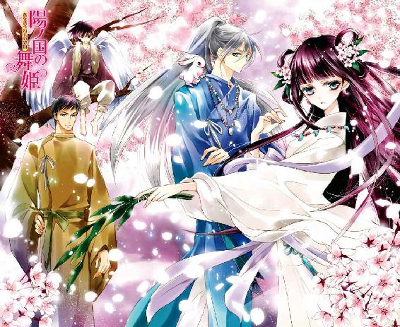
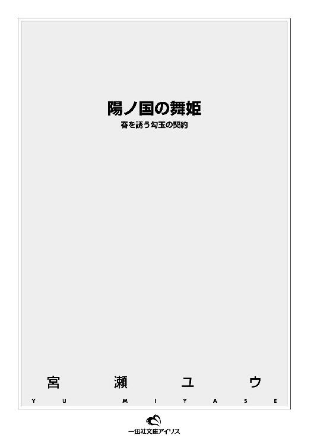
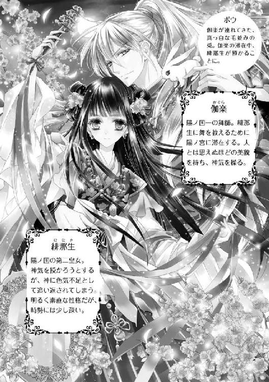
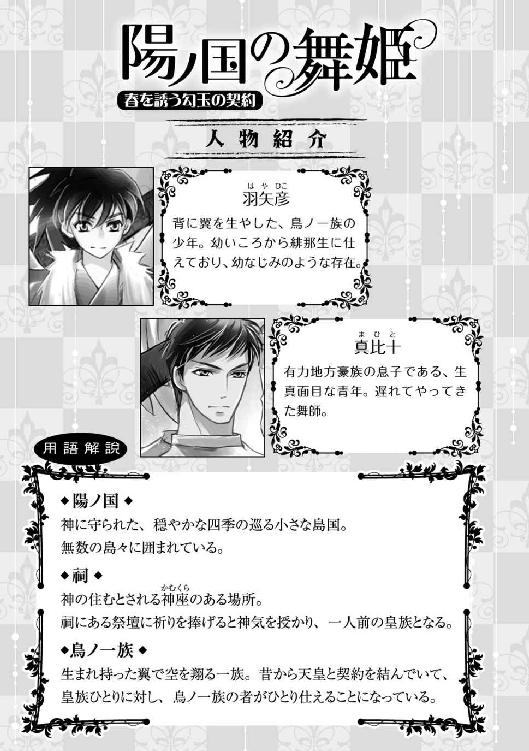
イラストレーション ◆ 椎名咲月
陽ノ国の舞姫 春を誘う勾玉の契約
はらはらと、白い雪が舞う。
雪は少女の艶やかな黒髪、やや朱を差した頬、細く頼りない指に落ち、やがて溶けた。
少女――まだ幼く見えるが、今日で十六になる陽ノ国の第二皇女――は、湿った木沓を一歩先へ踏み込ませた。
しゃり、と雪が鳴り、冷え切ってもはや感覚のない足が沈む。
そこで皇女は、背後に整列した役人たちを振り返った。仰々しいまでの正装に身を包んだ彼らは揃って青白い顔をしていたが、それでも彼女よりは暖かそうに見えた。
「十六歳、おめでとうございます。――緋那生様」
「ありがとう。行ってまいります」
白い息を吐き、緋那生は肩から緩く掛けていた薄桃色の領巾を雪の上に落とした。そして木沓を脱いで裸足になると、息を詰め、低い位置に飾られた注連縄を跨ぐ。
先の見えない、吸い込まれそうなほどの闇を湛えた祠の前に立つと、中から生ぬるい風が吹き抜けた。真っ直ぐに切り揃えられた前髪が煽られると、額には紅の花を模した花鈿が覗く。
緋那生は、着ているたった一枚の真っ白な巫女装束の前をきっちり合わせ直し、祠へと足を踏み入れた。
このまま奥まで行けば、祭壇がある。そこで神に祈りを捧げれば、神気と呼ばれる神の力を授けられるという。それだけで十六歳になった証としての儀式は終わり、皇族として一人前になったのだと認められる。
（認めてくださる......はず）
緋那生は、そう教えられてきた。
足下は不思議と冷たくなく、ようやく足指の感覚が戻ってきたと感じられたところで、ふいに低い声が響いた。
『止まれ』
「――――え？」
指示に従うというよりは、驚いて足を止めた緋那生は、幼子のような丸い瞳をきょろきょろさせた。
「誰......？」
『ここは神の住まう神座――神以外の者が在ると思うか』
「神、さま？」
もちろん、緋那生にだって、神に会いにきたのだという意識はある。が、まさか神の声を聞けるとは思っていなかった。
神とは、目に見えず、声も聞こえず、ただそこに在るもの――漠然と、そう教えられたから。
けれど、まだ祭壇には辿り着いていない。
そう思ってまた一歩踏み出すと、再び声が緋那生を止めた。
『聞こえなかったのか。止まれ。そしてこちらに背を向け、歩け』
それはつまり、今すぐ出て行けということか。
緋那生は首を振った。
「ですがわたしはまだ、祭壇で祈りを捧げておりません。そこで神気を授からなければ、わたしは――」
『神気......そのようなもの、おまえには授けられぬ』
あっさりと拒まれ、緋那生の頭は雪に降られたように真っ白になった。
「そんな......なぜ、ですか？ わたしの何がいけなかったのですか......？」
昨日から水以外の何も口につけず、震えながら冷水を浴びて禊ぎをしたのに。
祈りも捧げさせてもらえず。祭壇にすら近づけない。
このままでは、皇族として一人前になったと誰からも認めてもらえない。
呆然とする緋那生の頭に、生ぬるい風が吹いた。
『そうだな......しいて言うなら、足りぬのは――色気だ』
緋那生に吹きつける風は、まるで祠自体が発するため息のようだった。
第二皇女、緋那生が神に門前払いをくらったという話は、陽ノ国の中央にそびえ立つ宮殿内に、あっという間に広まった。
陽ノ宮と呼ばれるこの宮殿は、長い長い階段の上に造られた、空中宮殿だ。そのどこからも陽ノ国を見下ろし、眺めることができる。
そんな宮殿だから、怒りに我を忘れた陽天皇の怒号も地上には届かない。
「帰れと言われて祈りも捧げず、そのまますごすご戻ってきただと!? そんな話、聞いたこともないぞ！」
ばしん！ と木製の笏が床に打たれ、緋那生はひれ伏した。
「申し訳ございません」
「我が娘のことながら、容易には信じられぬ話だ......」
緋那生が顔を上げると、まだ年若い天皇は紅い石をはめ込んだ金色の冠を押さえ、荒い息を必死で整えようとしているところだった。頬を走る傷跡が、苛立ちとともに歪んでいる。
「父上。つかぬことをお聞きしてもよろしいですか」
「くだらぬことなら、許さぬ」
苛立った顔つきと声音に緋那生は怯んだが、気になることを問わずにはいられなかった。
「父上は、神の声をお聞きになられたことは――」
「あるわけがない」
天皇は緋那生の言葉を遮るように否定し、それから深々と息を吐き出した。座に腰を据え直し、呆れ果てた顔で娘を見下ろす。
「いいか、緋那生。神は声も発さず、姿も現さぬもの。だからこそ舞師や巫女が舞うことで神懸かり、託宣を授かるのではないか」
「......おっしゃるとおりです」
それでは自分が祠で聞いた声の説明ができないけれど、確かに緋那生もそう教わっている。ならば、と緋那生は首を傾げながら疑問を口にのせた。
「わたしは、そんな神が声を発さねばならぬほど未熟だということでしょうか？ そもそも神気とは、どのようなものなのです？ 他の皇族たちは、どのようにして授かったとわかったのでしょうか」
儀式として神気を授かる、とは聞いているが、具体的なことは何も知らない。
父や姉たちが人とは思えぬ力を振るっているところを見たことはないし、後光が差して見えるということもない。
それは以前から気になっていたことで、だから緋那生はこの日を待ち侘びていたのだ。
それなのに――。
天皇はこほんと咳払いをすると、緋那生を冷たく一瞥する。
「とにかく、一刻も早く神に認められよ。こちらで用意できるものはしておいた」
「用意、とは？」
「あとでおまえの部屋に遣わす」
呆れたようにそれだけ告げ、天皇が緋那生の質問には答えることはなかった。
＊
天皇が焦るのも無理はなかった。
一人前と認められなければ、国の行事や神事にも参加できないし、結婚もできない。まだ幼さの抜けない緋那生とて、近く天皇の定めた相手と結婚することになるはずなのだ。
何よりも、皇族として恥以外のなにものでもない。
緋那生は自室へと戻る前に、たっぷりと時間をかけて湯浴みをし、髪を整え、純白の巫女装束から皇女らしい華やかな衣装へと着替えた。
白い内衣の上から淡い撫子色の上衣をゆったりと着込み、深緋の裳を穿く。柄入りの背子を羽織り、鮮やかな紐で留め、領巾をまとうと、采女から楕円形の扇を持たされた。
薄い巫女装束一枚では心許なかったので、緋那生はほっと息をついた。
裳裾を引きずるようにして自室へ足を踏み入れた瞬間、何かの気配を感じて、緋那生は背後の采女たちを振り返った。
「へ、部屋に、誰か」
「ご心配なく」
そう言って深々と頭を下げると、彼女たちはそそくさと回廊へと歩いて行ってしまった。
天皇の言った、何かを部屋に遣わす、というのが何なのか、どうやら采女たちは知っていたようだ。
「遅かったですね。皇女様」
中から声がして、おそるおそる覗き込み――緋那生はひっと息を呑んだ。
あぐらをかいて座した後ろ姿は女のそれよりも体格がよく、やわらかく響く声は、低い。
ということは――。
「男......!! いやっ、近寄らないで、穢さないで......！」
「まあまあ、落ち着きなさい」
火桶のそばに腰を下ろしたその人物は、ぐいっと杯を傾けて中身を飲み干すと、背に流れる長い銀髪を揺らして、こちらを振り向いた。
（あ......綺麗......）
彼の現実離れした美貌は、呪術のように緋那生の警戒心を解いた。
初雪のように澄んだ白い肌に、緑がかった灰色の瞳が神秘的に輝いている。形のよい唇は緋那生を受け入れるように微笑んでいた。長い銀髪は先だけが白く、それが猫か何かの尻尾を思わせ、不思議な親しみやすさを与えている。
「近寄っただけであなたを穢せる技など、俺には持ち合わせておりませんよ」
「でも、わたしは男に触れられれば穢れるって......」
「ふむ。なんだか知りませんが、とりあえず俺には無理です」
突き放すように告げられ、緋那生は面食らった。
陽ノ国に生まれた皇女は、巫女としての素質も大切にしなければならない。そのためには、清らかな心と体が必要なのだと。
だから緋那生は外に出ることもなく、毎朝禊ぎをして、邪気を、そして男を近づけないように生きてきた。
困惑顔の緋那生を見て、その男はぽんと手を打った。
「ご不満なのでしたら、納得できそうな理由を述べましょう。なぜなら俺は神職に就く者だからです」
「神職に？」
「納得していただけてよかった。それにしてもこれはなかなかに良い酒ですね。皇族の方々は普段からこのような酒を飲んでいらっしゃるのですね。実にうらやましい」
一方的にそこまで言って、物足りなさそうに空になった杯を眺めている。それから呆気にとられている緋那生に向かって、ようやく彼は姿勢を正した。動くと、首からかけた勾玉や玉飾りがじゃらじゃらと音を立てる。
「なるほど。あなたが俺を必要としている皇女様か」
いきなりのくだけた口調をも許してしまうのは、彼の人とは思えぬほどの美貌のせいか。
緋那生は思わず見とれてしまいながらも、するべき確認は怠らなかった。
「え......と、あなたは？」
「舞師をしている。名は伽楽」
「舞師？ あなたが？」
「見えませんか」
にやりと下から覗き込まれ、緋那生は思わず目をそらした。
「そういうわけじゃないけど」
否定はしたけれど、本当は見透かされていたので動揺した。
舞師というのは、神事の際に神に舞を捧げる者のことで、確かに先ほど彼自身が告げたとおり、神職に就く者だ。けれど改めて伽楽を眺めてみると、舞師らしい白装束をまとってはいるものの、神職特有の堅苦しさが見当たらない。
引け目を感じるくらいの美貌と、無礼とも言える人懐っこさがちぐはぐで、なんというか、いまいち現実感のない人なのだ。
なんとなく視線を受け止めきれずそわそわしていると、耳元できゅきゅっと鳴き声がした。
「ひゃああっ」
頬をくすぐられ、緋那生は腰を抜かしてへたり込んだ。
「な、な、な」
「ああ。それはボウ。俺の兎です。雪兎みたいで可愛いでしょう」
「兎......？」
緋那生は我に返ると、自分の肩回りをちょろちょろと動き回る小さな動物をつかまえた。
真っ白な毛並みには乱れひとつなく、触り心地は驚くほどなめらかだ。小さな赤い目はきらきらと輝き、ふんふんと動く鼻は見ている者の心を一瞬で奪うほど可愛らしい。
「可愛い......！」
込み上げる愛おしさに胸を詰まらせると、そんな緋那生を見た伽楽がふっと笑った。
「きっと気に入ってくださると思ってました。よろしければ俺の滞在中、そばに置いてやってはくれませんか？」
「でも、動物の世話なんてしたことないし......」
「世話なんて必要ない。自分でなんでもできます」
「......そう？」
それならば、と心が傾く。
「ぜひ」
押しつけられているような気もしなくはなかったが、実際、兎のボウにはずっとてのひらにのせて眺めていたくなるような、なんともいえない可愛らしさがあった。
思わず笑みを広げた緋那生だったが、ふと伽楽の言葉を思い出して我に返った。
「今、『俺の滞在中』って言ったかしら？ あなた、何のために陽ノ宮に滞在するの？」
「あなた、ではなく名前で呼んでください。はい、どうぞ」
「......伽楽」
「よくできました」
ぽんぽんと頭を撫でられ、緋那生の頬に朱が灯った。
「俺も、皇女様ではなく、緋那生様と呼びます」
「それは構わないけれど」
笑顔につられるようにうなずきながら、緋那生は戸惑っていた。
皇族へに対する言葉遣いとしては、先ほどから馴れ馴れしすぎる。
（それに、なんといっても男だし......）
緋那生の清らかさは、男に触れられれば穢れてしまうのだ。
それでも――なぜだか、受け入れてしまう。自分でも不思議でたまらないけれど。
「で、ですね。緋那生様」
伽楽はすらりと立ち上がると、衣の合わせ目から鈴を取り出した。螺旋状に巻いた針金にいくつもの鈴を並べた、舞師や巫女が用いる神具だ。
「俺は、あなたに色気を授けるために来たんですよ」
そう言って、伽楽は緋那生の前で優雅に回ってみせた。
＊
その夜、緋那生は情けない気持ちで二度目の湯浴みをしていた。陽ノ宮に戻ってきた際に一度浴びたけれど、やはり眠る前にも浴びておきたい。それに、時間を忘れてひとりでゆったりできる湯屋は、考え事をするには最適な場所なのだ。
「まさか、男の人から色気を学ばないといけないなんてね......」
天皇が遣わせた舞師は、神をも酔わせるほど色っぽいことで有名なのだという。采女たちが、はしゃぎながらそう話していた。
「確かに女のわたしより美しくて色っぽい方だったわ。......ねぇ、ボウ？」
緋那生が手を伸ばすと、濡れるのが嫌なのか、ボウはちょろちょろと逃げてしまった。
ため息をつきながら、薄い衣一枚をまとっただけの自分の裸身を見下ろしてみる。......また、大きなため息がこぼれた。
（姉様とは大違い）
二つ上の、すでに夫を迎えた姉は、姉妹とは思えない豊かな身体つきをしている。衣の合わせ目から覗く隠しきれない白い谷間を、いつもうらやましく眺めてしまうのだ。
自分のはといえば、幼少期からほんのわずかにふくらんだだけで、寂しいばかり。
やはり、神もこれがお気に召さなかったのだろうか。
緋那生は神妙な面持ちで、両手を胸元にあてた。
「遅かったですね」
自室に戻るなり伽楽に微笑まれて、緋那生はよろよろと寝台に腰を下ろした。
「少し考え事をしていたら、のぼせてしまって」
「おやおや、それはいけない。お水をどうぞ」
すかさず冷たい水を手渡され、緋那生はありがたく一息に飲み干した。
そんな緋那生を眺めた伽楽が、にやりと片頬を歪める。
「まさか、胸でも揉んでたとか？」
「............っ!?」
むせそうになるのをどんどんと胸をたたいて堪えると、緋那生は頬を赤らめて伽楽を見た。
「なっ、なんでわかったの......っ？」
「冗談で言ったんですよ」
緩んだ口元で告げられ、緋那生はさらに血を上らせてから、ふと冷静になり伽楽の不思議な色の目を見つめた。
「本当に冗談なの？」
「どういう意味です？ 俺が湯浴みを覗いたとでも？」
緋那生はぶんぶんと首を振った。空中宮殿である陽ノ宮の湯屋は、人が覗けるような造りにはなっていない。
涼しい顔をした伽楽の目線が自分の胸元にそそがれているような気がして、緋那生は思わず両腕で身体をかき抱いた。
「伽楽、聞いてもいい？」
「なんでも」
「その......実際、関係あると思う？ 胸が小さいのと、色気がないのと」
「............」
伽楽の瞳から、笑みが消えた。息を詰め、どきどきしながら回答を待つ。
すると伽楽は秀麗な目元を緩ませ、横目で緋那生を見た。その熱っぽい視線は、無条件に射られた者を惹きつける。
「俺は好きですよ」
「えっ」
「小ぶりなのも、育て甲斐があるというもの」
色気を含んだ目線はかなり意味深なものだったため、緋那生は眉根を寄せた。
「育てるって？ 何の話をしているの？」
「胸の話ではなかったのですか？」
「あなたが、どう育てるの？」
「実践しましょうか？」
にやりとした笑みは危険な香りがしたけれど、緋那生は後ずさりながらも訊いてみた。
「具体的には、どんなことをするの？」
自分でできることならやってみたい。けれど、問われた伽楽は神妙な顔つきになった。
「......本気で言ってます？」
「いけなかった？」
「まあ、ある意味。そこまでうぶだと、悪い男に騙されますよ。俺みたいな」
最後の言葉に、緋那生は目を丸くした。
「伽楽は、悪い男なの？」
詰め寄ると、芽吹いたばかりの花のような、夏の朝露のような、清々しい香りがふわりと鼻腔をくすぐった。
「俺は善人です、とでも言えば、緋那生様は真に受けてくださるんですか」
「え？」
「そういうことは、自分で判断するものです。人の言うことをいちいち鵜呑みにする皇女など、人形と変わらない」
「鵜呑みにだなんて」
「そうですか？ ではなぜ、天皇のいいなりになっているんです？」
伽楽は冷めた口調でそう言ってから、にこりと微笑んだ。
「まあ、俺にはどうでもいいことですが」
（――――............）
人形。どうでもいい。
その言葉から、好意を抱かれていないということは緋那生にもわかった。父親の言うことを聞くことの何がいけないのかわからず言葉を失っていると、伽楽はころりと話題を戻した。
「ところで色気の件ですが、見た目もある程度は必要ですが、そんなものは二の次です。大事なのは内に秘めたる熱情や恋情をあふれさせ、表情や仕草、言の葉に宿らせること。胸の大きさなど、それを身につければいくらでも補える」
つまりは、やはり胸が小さいのは不利ということか。
憮然とした緋那生に、伽楽は真顔で問う。
「そもそも緋那生様は、誰かを恋い焦がれ、他の誰かを傷つけてでも手に入れたいと思ったことはありますか？ その熱に身を燃やし尽くされそうになったことはありますか？」
気づけば顔と顔は触れそうなほどに近づいていて、伽楽は囁き声になっていた。かすれがちな声と吐息が頬や耳、首筋に触れ、緋那生の頭はだんだんとぼうっとしてくる。告げられている言葉のひとつひとつが、緋那生にとっては馴染みのないものだからかもしれない。
「伽楽は、あるの？」
「いいえ。俺は見た目だけで充分なので」
伽楽の即答には、妙に説得力があった。
「緋那生様は、赤子のように純粋な方だ。だから、これを授けようと思って湯上がりのあなたを待っていたんです」
そう言うと、伽楽は断りもなく、緋那生の衣の合わせ目に白い指を這わせた。
「............っ」
「目を閉じて」
伽楽の髪が肌に触れ、そのくすぐったさに緋那生は身体をかたくする。
「力を抜いて」
吐息が落ち、今度は身体が細かく震えた。合わせ目が開かれる。それ以上はいけないと声を出す直前で、伽楽の指は止まった。
「な、何を......？」
「術を施します。緋那生様の色気が増すと、それを目で確認できるようになる術です」
術という言葉に開けそうになった目を、伽楽のてのひらに覆い隠された。
「待って。術って、あなた何者なの？」
「単なる舞師ですよ。神に会い、神気を授かった舞師です」
「神気......」
それは、まさしく緋那生が授かりたいものだ。
確かに、皇族でなくても神職に就く者の中には、稀に神気を授かれる者がいると聞いた。実際に会ったことはないし、陽ノ国にはいないと思っていたけれど。
伽楽は口の中で何かをつぶやくと、緋那生の顔から手を離した。
「もういいですよ」
「え、もういいの？」
拍子抜けしつつ目を開けると、少し離れたところで伽楽があぐらをかいていた。
おそるおそる胸元に視線を下ろし、そこに何の変わりもないことを確かめてから、合わせ目をきっちりと直した。
「緋那生様の色気が増すと、たとえばこんな感じでわかります」
伽楽が仰向かせたてのひらを口元に寄せ、緋那生に向かってそこに息を吹きかける。
「わっ」
緋那生の顔の周りで、ぽわわんといくつもの桃の花が咲いた。と同時に、甘い香りが立ち上る。触れてみようと手を伸ばすが、花びらは一瞬にして消えてしまった。
「今のが、神気を使った術？」
「そうです。綺麗でしょう」
「綺麗だわ。一足早く春が来たみたい。色気が身につく度に、今のが見られるの？」
「そういうことです。では、続きはまた明日」
伽楽はそう言って、颯爽と立ち上がると、身を翻して部屋から去った。
「......不思議な人」
変わった人、とも思った。
残ったのは淡い桃の香りと、胸元のわずかなぬくもり。
（どうしよう......今夜、眠れるかしら）
胸に宿ったぬくもりは熱に変わり、心臓を早鐘のように鳴らす。
緋那生は酔わされたように、惑わされたように、しばらく呆然としていた。
＊
翌朝も、采女たちはこぞって緋那生を飾り立てた。
萌える若草を思わせる色合いの上衣に、桜柄を散らした背子――いち早く春の色を取り入れた衣装だけれど、外は未だ吹雪いている。
朝餉は基本的には各々の私室へと配膳されるものであるが、この日は特別だった。しばらく陽ノ宮に滞在することとなった伽楽を歓迎しようと、天皇皇后以外の皇族たちでともにとろうということになったのだ。
提案したのは、姉の佐和比である。最後に現れた姉は、髪を緩く結い上げて白いうなじをさらし、菖蒲色の上衣ははだけ、今にも肩があらわになりそうな装いだ。
「姉上。衣が乱れておいでです」
「あら本当」
佐和比は表情も変えずにそう言っただけで衣装を直そうともせず、伽楽の隣へと腰を下ろした。逆隣に座る夫には目もくれず、しげしげと伽楽を見つめ、ため息を漏らす。
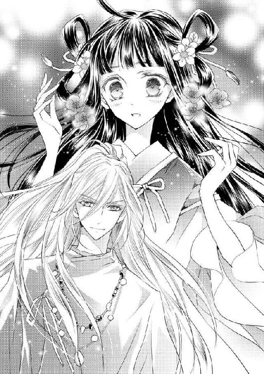
「采女たちの噂どおりね。舞師にしておくのはもったいないくらい、綺麗な男。少し華奢すぎるようだけれど......ああ、でもこの長い指はそそられるわ」
「指以外にも、自信がありますよ」
鷹揚にそう言って微笑む伽楽は、この日は翡翠色の武官装束を着込んでいた。どうやら借り物らしい。そんなことよりも、緋那生としては、その伽楽の視線が佐和比の胸元にそそがれているように見えるのが気になってしまった。
緋那生は羮をすすりながら、二人のやりとりを覗き見てはらはらしてしまう。
「それにしても、朝から豪勢な食膳ですね。驚きました」
伽楽は黒塗りの器を手に取り、「強飯ですか」と目を眇める。
緋那生は首を傾げ、蒸されて甘みの増した飯を口に運んだ。
「お米はこの土地でよく育つのよ。陽ノ国の民は皆、これを食べているわ」
「皆？ 見てきたのですか？」
「見てきてはいないけれど、そう聞いてるわ」
ほとんど陽ノ宮から出たことのない緋那生だ。この目で確認などできるわけがない。民に目を配っている役人たちがそう報告しているのだから、間違いはない。
緋那生の返答に満足したのかどうなのか、伽楽は「ふぅん」とだけ言って食事を再開した。
（なんでそんなことを訊くのかしら）
伽楽の真意がわからず小首を傾げていると、肩に何かが飛び乗ってきた。
「あ......ボウ？」
見やると、ボウの赤い瞳と目が合った。部屋に残してきたつもりだったのに、ついてきてしまったのだろうか。
「まあ、可愛い！」
声を上げたのは、佐和比だった。
「緋那生、その兎どうしたの？」
「この子はその......伽楽の兎なのです」
「そうなの？ ねえ伽楽、私、この兎が欲しいわ」
「あいにくですが、差し上げられません」
無表情の伽楽にあっさり拒まれ、佐和比は顔をこわばらせた。
「な......っ、あなた、何を言ってるかわかってるの？ この私が――天皇の娘が欲しいと言っているのよ？」
「ですから、皇女様にも差し上げられません、と申し上げております」
慇懃に告げた伽楽の瞳は、冷たい光を帯びている。佐和比の頬は、いよいよ紅潮して震え始めた。ばん、と膳をたたいた弾みで、羮の器がひっくり返る。驚いたボウが緋那生の衣の下へと逃げ込んだ。
「あなた、何様のつもり!?」
「そういうあなたこそ。皇族だからといって、何もかもが手に入るとお思いですか」
「............っ」
伽楽の言っていることは、間違ってはいない。ただ、彼は一介の舞師――皇族に逆らったとなると、追い出されるだけで済めばまだいいが、下手をすると命を失うことになる――。
「姉上っ」
諫めなければと緋那生が身を乗り出したところで、佐和比は勢いよく立ち上がった。
「なんて無礼な男！ 今すぐこの陽ノ宮から追い出してやるわ」
「姉上、おやめください。伽楽は父上が遣わした、陽ノ国一の舞師。追い出されては、わたしが神気を授かることができず、困ります」
「神気ですって？ そんなもの――！」
言いかけて、佐和比は首を振った。
「......もういいわ。兎くらい、鳥ノ一族に獲ってきてもらえばいいことよ。何もこんな胡散臭い男に頼む必要はないわ」
佐和比は自分に言い聞かせるようにそう言うと、裳裾を払って退出した。
（よかった......）
とりあえず、伽楽が追い出されることは免れた。
緋那生がほっと胸を撫で下ろしたところで、伽楽が「やれやれ、これで今日もうまい酒が飲めるな」とひとりつぶやいた。幸い、隣にいた緋那生にしか聞こえなかったようだが。
（............この人に任せて、大丈夫なのかしら）
緋那生は、自分の師匠となる人物に不安を抱かずにはいられないのだった。
＊
緋那生の不安をよそに、伽楽によるお色気指南は朝餉の直後から始まった。
「まずは......そう、着込みすぎですね」
「これより薄着になるの？ どうして？」
緋那生が理由を問うと、なぜか伽楽は意表を突かれたような顔をした。
「そうですねぇ......では、女らしく丸みを帯びた線を見せることで、自分の意識の向上につながるから、というのはどうです？」
「どうって言われても」
なぜ、今思いついたみたいな言い方をするのだろう。
緋那生が対応の仕方に迷っている間に、伽楽はさっさと衣装を差し出してきた。
「というわけで、こちらに着替えてください」
渡されたのは、巫女装束。なめらかな薄い生地でできたもの一着だった。
「この上には、何を羽織るの？」
「そちらは一枚でお召しになるものです。帯は、胸の下できつく結びます。――手伝いましょうか？」
「い、いいえ！」
緋那生は慌てて首を振ると、逃げるように寝台に上り、紗幕を引いた。薄く透ける紗の向こうに男がいるのだと思うと緊張するが、伽楽は師匠であり、これは緋那生が一人前になるために必要なことなのだと思い直す。拒むことは、皇族であることを放棄するようなものだ。
緋那生は意を決して裳から内衣まで脱ぎ捨てると、与えられた装束を身体に巻きつけた。
（少し小さいのかしら......）
もともと小柄な緋那生がそう感じるほど、その装束はぴたりと身体に添うように着込まないと、足下がはだけてしまいそうに布面積が少なかった。
言われたとおりに胸の下で帯を結んでみたけれど、ひどく頼りなく思えて仕方ない。
「できましたか？」
伽楽に声をかけられ、緋那生はおそるおそる紗幕を開けて寝台を降りた。
「あの、これ、小さくない？」
「ぴったりじゃないですか」
「ぴったりすぎない？ こんなに身体の線が出るのは恥ずかしいわ」
普段はゆったりと着込む衣装ばかりなので、緋那生の幼い身体つきでも落ち着かなかった。
「それでいいんですよ。俺の趣味だから」
「趣味......？」
どういう意味かと首をひねったところで、緋那生の顔の周りにぽぽんと音を立てて桃の花びらが舞った。
「あ......っ」
「ほらみなさい。恥じらいながら寝台から降りてくるあなたは、それなりに――いえ、なかなかに色っぽかったですよ」
「......そういうものなのね」
少し恥ずかしかったけれど、すぐに結果が出るなんて、さすがは陽ノ国一の舞師だ。
「でも、ほんの数枚の花びらだったわ。どのくらいの花が咲くようになったら神気を授かれるのかしら」
「さあ。神のみぞ知る、ということでしょう」
伽楽はそっけなく言うと、緋那生の手を取り、鏡の前に座らせた。
「色気というものは、そう簡単に身につくものではありませんよ」
「そうかもしれないけど」
「まあ、そう焦らずに。次は化粧を施します」
そう言って、伽楽は草花をすりつぶして作ったという化粧道具を取り出した。
鏡には、緊張の面持ちの自分と、そんな自分の顔をじっくりと眺めまわす伽楽が映っていた。うっかり動いてしまえば触れてしまいそうに近くて、緋那生はがちがちにかたまってしまう。
「きめ細やかな、綺麗な肌ですね。大きな瞳もじゅうぶんに魅力的だ。――唇に紅をのせる程度にしておきましょうか」
伽楽の細い指が、緋那生の顎をとらえた。強引に仰のかされ、至近距離から見つめられる。
小指の先に紅をのせ、緋那生の唇にあてるその仕草に、鼓動が速まった。
「伽楽、あなたがわたしに触れることは......っ」
「しゃべらないで。すぐだから」
伽楽は面白がるようにくすりと笑うと、指先で緋那生の唇をなぞった。
「............っ」
ぞくりと、背筋を甘い痺れが走る。緋那生が思わずぎゅっと目を閉じると、伽楽の甘やかな声が落ちてきた。
「......どきどきした？」
「えっ!?」
「終わりましたよ」
「あ、ありがとう」
慌てて目を開けると、少しだけ大人びた顔をうつむきがちにした自分が、鏡の中にいた。
「力を抜いて、笑ってください」
「......こう？」
「かたいですね」
笑えと言われて笑うのは難しい。手を使って無理やり口角を上げようと試みるが、伽楽に止められた。
「俺が間違ってました、もういいです」
「よくないわ。これも大事なことなんでしょう？」
「大事？ 笑顔を作ることが？」
「違うの？」
笑えと言われたから試みたのに、伽楽に怪訝な顔を向けられてしまった。
「あなたは、俺にやれと言われたことはすべてやるのですか」
「......だって、伽楽の言うことはすべて、色気が増すことにつながるのでしょう？」
彼はそのために陽ノ宮に遣わされたのだから。
伽楽は一瞬呆れたような顔をして、それから面白がるように口元を緩めた。
「でしたら、一周まわって『にゃあ』と鳴けと言ったら？」
「一周って、どこのまわりを？ それとも、この場で？」
詳しく聞かねばと思っただけなのに、伽楽は眉を跳ね上げた。
「......おやおや。重症ですね」
「何が？」
「まあでも、作り笑いはできなくてもいいです。緋那生様の魅力は、きっとその赤子のような純粋さなのでしょうから」
「そうなの？」
赤子のよう、というのは褒められているのだろうか。
「不思議な感覚です。見ているだけで、庇護欲をかきたてられるというか......」
「............」
それは、鳥の雛か何かに対して抱く感情ではないだろうか。
「色気とは程遠いってことね......」
「そのようですね」
あっさり同意され、緋那生は落胆した。
「やっぱり伽楽も、色っぽい人が好きなのよね？」
「なんですか、急に」
伽楽の瞳が驚いたように丸くなり、次いで意地悪く細められた。
「俺は別に、どんな女性でも好きですよ」
それはそれでどうなの、と思いつつ、緋那生は頬をふくらませる。
「そんなこと言って、今朝だって姉上の胸元ばかりを見ていたじゃない」
「姉君......佐和比様、でしたっけ？ あれは、胸元の首飾りを見ていたんですよ」
意外な返答に、緋那生は面食らった。
確か、最近の佐和比が気に入って身につけているのは、珊瑚の勾玉が五つ連なった飾りだった気がする。天皇が、佐和比か緋那生かどちらかに授けようと言い、目を輝かせていた姉に譲った記憶がある。そう、確かあれは――。
「海を渡ったところにある、蒼ノ国からの贈り物だったはずよ」
「贈り物、ね......。あれは宝飾品ではなく、神具ですよ」
「えっ」
「神具には当然、神気が備わっていますが、長く人の手にあれば、やがて力を失う。もったいないことです」
伽楽はさらりと言ってその話を終わりにしたが、緋那生の胸は曇った。もしそれが本当なら、実際は神職に就く者が手にするか、神に供えるべきだったのではないか。
もやもやとした感情のやり場に困っていると、ふと窓辺に気配を感じた。
開けると、冷たい雪の粒が緋那生の頬を打った。
「冷た......っ」
「皇女、来てやったぞ」
ばさばさと音を立てて窓枠に降り立ったのは、背に大きな翼を生やした少年だった。
「羽矢彦、とりあえず中に入って。寒いわ」
「おう」
羽矢彦という名の少年は無遠慮に緋那生の部屋に入ると、猛禽類を思わせる鋭い瞳を伽楽に向けた。
「誰だ、こいつ」
羽矢彦の無礼な態度に緋那生は慣れっこだが、伽楽は初対面だ。気になって顔色を窺ってみると、意外にも伽楽は微笑を浮かべた歓迎姿勢だった。
「これはこれは、鳥ノ一族の少年。なんと立派で美しい翼なんだ！」
「兄ちゃん、鳥ノ一族を見るのは初めてか？」
「いいや。でも、こうして直接言葉を交わすのは初めてかもしれない」
「あっそ」
羽矢彦は翼をたたむと、その場にあぐらをかいた。ぼさぼさの髪をうしろでひとつにまとめ、獣の皮で作った衣装に身を包んだ彼は、鳥ノ一族と呼ばれる、生まれ持った翼で空を翔る一族の少年である。
鳥ノ一族は昔から天皇と契約を結んでいて、皇族ひとりに対し、鳥ノ一族の者がひとり仕えるという決め事がなされている。外で用があれば、この空中宮殿から長い階段を一段一段下りずとも、彼らの力を借りてあっという間に地上に降りることができるというわけだ。
羽矢彦は三つか四つの頃から緋那生に仕えてくれているので、いわば幼なじみのような存在である。......まだ一度も、彼の翼に頼ったことはないけれど。
「羽矢彦、今日はどうしたの？」
「どうって、ほら」
羽矢彦が懐から放ったのは、なんと生きた兎だった。しかも三羽。ボウよりはるかに大きな野兎たちは、元気に部屋中を跳ね始める。あっという間に部屋は小さな足跡だらけになり、緋那生は慌てた。
「ちょっと羽矢彦！ いったいどういうこと？」
「どうもこうも、陽ノ宮で兎を飼うのが流行ってるんじゃないのか？ 六彦はあっちの皇女様に十羽ほど届けに行ったぞ」
あっちの皇女というのは佐和比のことで、六彦とは、佐和比に仕える鳥ノ一族の少年だ。
と、遠くから女性たちのきゃあきゃあという甲高い声が聞こえた。
「おお、喜んでもらえたみたいだな」
「......だといいけど」
どちらかというと、悲鳴に近かった気がする。
「羽矢彦、違うのよ。姉上は確かに兎を欲しがっていたけど、流行っているわけではないし、わたしは動物には慣れていないし、飼えないわ。この子たちを連れて帰ってあげて？」
「ああ、そうなんだ？ 俺の勘違い」
羽矢彦はにかっと笑うと、兎たちを慣れた手つきで拾い上げた。
「じゃあな」
そのまま窓枠に手を掛け、ばさりと翼を広げるや否や、雪の舞う空へと飛び立っていった。
あっという間の出来事に、緋那生ははっとして伽楽を見やった。すっかり放置してしまった。何をしているのかと思えば、どこから拝借したのか、杯を手に酒を呷っている。
「騒がしくしてごめんなさい。羽矢彦はいつもああなの。急に来て、急に帰るの」
「仲の良いことは、良きことです」
「ええ、わたしの友人よ」
唯一の、と、心の中でつけ加える。皇女という立場では、友人を作ることすらままならない。
「なるほど。緋那生様は、彼に外に連れ出してもらっているのですね」
めずらしく晴れやかな笑顔を見せた伽楽に、緋那生は首を振って否定した。
「いいえ。わたしは羽矢彦に頼んで連れ出してもらったことはないわ。許されないもの」
「許されない？ 誰に？」
「父上に。皇女は穢れに触れてはならないから、できるだけ陽ノ宮から出ないようにと言われているわ」
「......外に出たことは」
「ないことはないわ。春は行宮でお花見をしたし、夏は姉上と裏の川に蛍を見に行ったし、秋に皆の後ろから収穫祭を見たし、それに、この間は神の住まう祠に行ったわ」
追い返されてしまったけれど。
その事実を思い出し、緋那生は目を伏せた。
「それは、あれですよね。たとえばこの窓の一枚向こうが外、こちらが中、と、そういう感覚でおっしゃってるんですよね」
「外と中の定義は、そうじゃないの？」
「間違ってはいませんが......そうですね、では今度、羽矢彦に頼んで俺と外に行きましょう」
伽楽は簡単にそう言ったが、緋那生は当然、その提案を呑むわけにはいかない。
「聞いてなかったの？ わたしは勝手に外に出ることは禁じられてるのよ」
「ですから、こっそりです」
伽楽が言うと、本当に簡単なことのように聞こえるから不思議だ。
緋那生が難しい、無理だと思うことを、あっさり飛び越えてしまう。
「こっそり抜け出すのも許可を取るのも無理だとは思うけれど......そうね。春が来たら、野に咲く花々をこの目で見たい気もするわ」
「何を悠長な。春なんて、まだまだ来やしませんよ。実行するのは、明日です」
「えぇっ!?」
「知りませんか？ 冬の山には、色気に効く野草がたくさん生えているんですよ」
「そうなの？」
知らなかった。外の世界は奥が深い。
「でも、明日なんて絶対に無理――」
「でもでもだってはお見苦しい。とりあえず今日は、たっぷりとお色気指導をしましょう。今の緋那生様を見ても、羽矢彦は顔色ひとつ変えなかった。まだまだいろいろ足りない証拠です」
「う......」
もっともなことを言われ、緋那生は口をつぐんだ。
「いいですね？」
「......よろしくお願いします」
緋那生はその後、女らしく見える立ち居振る舞いや作法を夜までみっちりと仕込まれることになるのだった。
女らしく振る舞うというのは、見た目よりもずっと疲れるものだった。
「......先は長そうだわ」
湯に浸かると、身体のあちこちが軋むような痛みを叫び始めた。薄衣の上からふくらはぎを揉むと、筋肉が張っているのがわかる。
今までいかに身体を動かさずに生活してきたか、よくよく思い知らされた。
伽楽からは念入りに身体を揉み込んでおくように言われていたが、疲れてすでに眠い。顔の半分を湯に沈めた姿勢で眠りそうになるのを、ボウの鳴き声に遮られた。
「ああ、助かったわボウ。危うく溺れるところだったわね」
くすりと笑って、縁に佇むボウの頭を撫でてやる。ボウは小さな赤い瞳をぱちぱちとまたたかせ、かと思うとくるりと身を翻した。
「ボウ！ どこに行くの？」
ボウはぴょこぴょこと跳びはねながら、あっという間に湯屋の外へと姿を消してしまう。
「待って！」
緋那生は、すぐに飛び出していける状況ではない。慌てて湯から上がると、布を手に待っていた采女たちが緋那生を取り囲む。急いで寝衣を着させてもらってから回廊に出たが、すでにボウの姿はない。
「嘘......」
陽ノ宮は広い。すぐに迷子になってしまうだろうし、何より天皇や佐和比の部屋に紛れ込んでしまえば、確実に面倒なことになる。
「......そうだわ、伽楽」
やみくもに探し回るより、本来の飼い主である伽楽の匂いを辿って彼のもとに向かった可能性に賭ける方がいいだろう。
「皇女様？」
「大丈夫。ボウを見つけたら、すぐに部屋に戻るわ」
采女たちにそう告げると、緋那生は伽楽が寝泊まりしているはずの部屋へと急いだ。
緋那生たち皇族の部屋がある階から階段を下りると、役職に就く者たちが暮らす階がある。
本来、異国からの使者など客人を招く場合は、陽ノ宮から少し離れた別宮で過ごしてもらうことになっているが、伽楽は朝から晩まで緋那生のお色気指南という役目を担っているため、少しでも移動の負担を減らそうと天皇が配慮し、陽ノ宮内に部屋を与えたのだ。
「あ......ボウ！」
回廊の一番奥に、ボウがちょこんと座っていた。緋那生の姿を認めると、わずかに開いた戸の隙間から部屋の中に入っていってしまった。
「なんで逃げるの？」
緋那生は、ボウを追うことで頭がいっぱいだった。声もかけずに勢いよく戸を引き――中の光景を目の当たりにして、頭が真っ白になった。
（――――なに、これ）
そこに広がる景色は――とにかく、異様だった。
朝露を含んだ若々しい緑。白、黄、紫などの小さな花々。どこまでも高い空。
吹き抜ける、清々しい風。
「風......？」
一瞬、自分がどこに何をしに来たのかを忘れた。
いつの間に外に出てしまったのだろうかと本気で考えた。
（違う......ここは、伽楽の部屋のはず）
我に返ったのは、生い茂る若草に埋もれかけた寝台の存在に気づいたからだ。紗幕の向こうに、人の影が見える。
「伽楽？」
緋那生は中の人物が伽楽なのだと疑うことなく紗幕を開け――再び絶句した。
そこにいたのは確かに伽楽であったが、伽楽だけではなかった。
「......緋那生様ではありませんか」
口元に笑みを浮かべた伽楽の下には、寝そべった美女がひとり。
ふたりの衣は乱れ、伽楽の右手は美女の肩を押さえた姿勢だ。
「ええと......」
これは、なんだろう。
彼女は誰だろう。
「緋那生様、少し待っていてください」
伽楽はいつもと変わらぬ声音でそう告げ、美女に覆い被さった。
男と女が、寝台の上で身を寄せ合っている。これは、緋那生が見ていてもいい状況なのだろうか。
「え、と、わたし......」
緋那生が居たたまれなさに目をそらした、次の瞬間――。
「そう容易く捕まるものか！」
くわっと目を見開いた美女が、唐突に緋那生の腕をつかんだ。
「きゃ......っ」
寝台の上に引きずりこまれたかと思うと、ものすごい力で背中を押された。
「......んっ......!?」
何が起こったのか、わけがわからなかった。
それまで美女がいたところに、入れ替わるように緋那生が寝かされていて。つまりはその上に、覆い被さる姿勢の伽楽がいたはずで。
けれど、今は視界を覆われていて何も見えない。
（なに......？）
混乱の中で、唇に宿った初めての感触を意識した。
冷たくて、やわらかい。
息ができなくて、頭がぼうっとしてくる。
「ん......」
どこか甘やかな感覚に力が抜けそうになったところで、ものすごい力で背中を押していた手が離れた。
「ふははっ、油断したな！」
後ろに倒れそうになった緋那生を、別の大きな手が支えてくれる。それと同時に息ができるようになり、緋那生は目の前の伽楽が鋭く脇に目を走らせ、舌打ちするのを聞いた。
「......っ、逃げられたか」
同じ方向に目を向けると、先ほどまで何もなかったところに窓枠があり、美女がひらりと飛び降りるのが見えた。
「落ちた......！」
「大丈夫ですよ。やつは人間の姿を借りただけの、ただの虫です」
「虫？」
「ええ。あの虫は花を荒らしました。なので忠告代わりに懲らしめようとしたのですが、逃げられました。また機会があれば捕らえますから、まあいいんですが」
伽楽があまりに淡々と話すので、緋那生はとりあえずうなずいておいた。
「よくわからないけれど、舞師ってそんなこともするのね......」
「え？ ――あ、いえ、別に舞師の仕事というわけではありませんよ。俺は神気を授かった身ですからね。たまには神に代わって花々を守ろうとしただけです」
「ああ、そうなの」
緋那生は頭をぼんやりさせたまま、今一度部屋を見回した。
「これも神気なの？ まるで外にいるみたいだわ」
「はい。幻術の一種です」
寝台から降りた伽楽が花を一輪もぎとり、てのひらにのせた花びらをふっと息で吹き飛ばすと、とたんに空や草花が消え、普通の木造りの部屋へと戻った。
「さっきの虫を捕まえるために？」
「いいえ。俺の趣味です」
さらりと告げられ、緋那生はうなずいた。
「素敵な趣味ね」
「そうでしょう」
伽楽が口元に笑みを刻むのを見て、唐突に思い出した。
......唇に触れた、甘い感触を。
「あ......」
よくよく考えれば、あれはくちづけだったのではないだろうか。緋那生にだって、それくらいはわかる。美しい虫に仕組まれたふいの出来事だったとはいえ、触れ合ったのは確かだ。相手はもちろん、伽楽――。
そう思うと、みるみるうちに顔が熱くなった。
「どうしよう......」
「穢れの話ですか？ それなら俺は神職に就く者だから大丈夫と言ったでしょう」
「あ......。そうね、そうだったわね」
伽楽になら、触れられても穢されない。頭でそう納得しているはずなのに、緋那生の動揺は治まらなかった。
その動揺を見透かすように、伽楽が横目でこちらを見つめた。
「初めてでしたか？」
「えっと..................はい」
緋那生は唇に指をあて、戸惑いがちに答えた。
「正直ですね」
伽楽の瞳が面白がるように揺れるのを見て、緋那生は唇を噛んだ。なんだか子ども扱いされているようで、面白くない。
「不満そうですね。まあ、俺が初めての相手じゃ、無理もない」
「違うわ、そうじゃなくて」
「じゃなくて？」
「......いいのよ、くちづけくらい」
強がるような言い方になったしまったけれど、間違ってはいない。きっと。
動揺の正体は、不満ではない。
......初めてだったけれど、嫌な気分はしなかったのだし。
赤い顔を隠そうと、緋那生は伽楽にくるりと背を向ける。
高鳴る胸を押さえていると、伽楽に謝罪の言葉をかけられた。
「いいえ、いいわけがない。本当に申し訳ありません」
「だから、いいって――」
「違うんです。実はあのくちづけは、ただのくちづけではないのです」
「え......？」
振り返ると、伽楽は今度は神妙な顔つきになっていた。本当に申し訳なく思っているのが伝わり、緋那生も真顔になる。
「どういうこと？」
「あれは、契約です。俺は、あの虫と言霊の契約を結ぼうとしていたんです」
「言霊って、言葉には力が宿るっていう、あの言霊？」
「具体的に言うなら、言葉によって相手を縛る力のことです」
縛る、という言葉の持つ強い響きに、緋那生はぞくりと背を震わせた。
「つまり......」
「俺が言霊を使えば、緋那生様を自由に操れる、ということです」
そう言って、伽楽は襟元を緩めて首筋をあらわにした。
そこに埋め込まれていたのは、深紅の勾玉――。
次いで、彼は緋那生に鏡を見せる。
映ったのは、緋那生の耳たぶに埋め込まれた、同じ色の勾玉だった。
＊
勾玉は、翌朝には消えていた。
伽楽いわく、今は見えなくなっただけで、言霊を使おうとすればまた浮かび上がるのだとか。緋那生がそっと耳たぶに触れてみると、そこには確かに勾玉の感触があった。
（......こんな契約、誰にも言えないわ）
昨夜、縛られる、操られる、という言葉に怯える緋那生に、伽楽は微笑とともに告げたのだ。
「ご安心を。皇女様相手に言霊なんて使いません。約束します」
そして、その微笑をいたずらっぽく崩し、
「とりあえずは、ね」
などとつけ加えたのだった。
ちなみに、この契約は時が経てばやがて力を失うものらしい。どのくらい？ と問う緋那生に、伽楽は「春が訪れる頃までには、おそらく」と曖昧に答えた。
緋那生は寝台から降りると、窓から外を覗いた。雪は降っていなかったが、積もった雪が解け野の緑が顔を出すまでには、まだかかりそうだ。暦の上では、間もなく春ではあるけれど。
朝餉を済ませるとすぐに、伽楽が部屋を訪れた。優雅に膝を落とし、真っ直ぐに緋那生を見上げる。
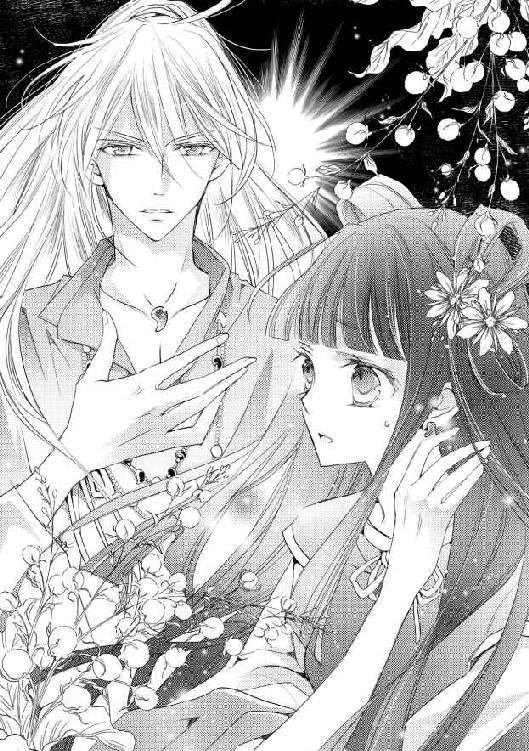
「俺の顔に、何か？」
「い、いいえ......！」
無意識のうちに伽楽の唇を見つめてしまっていたことに気づき、緋那生は目をそらした。
あれは単なる事故で、契約で、恋人同士が交わす甘いくちづけなどではない。
ちらりと伽楽の様子を窺うと、彼はぱちぱちと爆ぜる火桶から炭を取り出し、消し壺へと投入しているところだった。
「......何をしているの？」
「出掛けましょう、緋那生様」
「どこへ？」
「外へ。羽矢彦を呼んでください」
伽楽は妙にいきいきとしていた。
「ちょっと待って。父上の許可は得ているのかしら？」
「......というと？」
豪快に窓を開けた伽楽が、疑問符を浮かべた顔を振り向かせる。
「許可がないと、私は外に出られないって言ったはずよ」
「あなたが自分の意志で外に出るのに、許可がいるのですか」
「禁じられているもの」
「誰に？」
「父上よ」
他に誰がいるというのか。
ちぐはぐなやりとりのあと、伽楽はぽんと手を打った。
「そんなものは、あとから報告すればよろしい」
「あとからって――」
緋那生が思いもよらない提案に驚いている間に、伽楽はひょいと緋那生を横抱きにした。
「きゃ......っ」
「さあ、行きましょう」
「え、待って、ちょっと！」
「少し気になったんですが」
「な、何？」
この体勢で気になると言われると、重いのかと思ってどきりとしたが、そうではなかった。
「緋那生様は、皇族として一人前になる、ということを、どのように捉えておいでですか」
「どういう意味？」
「必要なのは、色気だけだと？」
「まさかっ、そんなことは――」
「ですよね」
うなずいた伽楽は、涼しげな顔で緋那生の言葉を待っている。抱えられたままでは集中できなかったけれど、緋那生はなんとか思考をめぐらせた。
「神気を授かり、皇族としてお披露目されること、でしょう？」
「そのためにあなたがしてきたことは？」
「皇女としての教育を受けてきたわ」
「そしてあなたはめでたく十六歳になられた。それだけです」
「それだけって――」
「行きましょう、緋那生様」
伽楽は緋那生の言葉を遮ると、窓に足をかけた。
＊
「ったく、天皇に叱られても知らないぜ？ 俺が罰を受けるのはいいとしてもよ」
「罰なんて大げさ......って、――――きゃああああっ」
「あーほら暴れるなって！ 飛びにくいだろ」
恐怖に身を縮ませ、緋那生は羽矢彦にしがみついた。
二人がいるのは、空の上。緋那生は、羽矢彦の腕に抱きかかえられた姿勢で空を翔ていた。
伽楽に強引に連れ出されたあと、当然のことながら飛び降りるわけにもいかないので、慌てて口笛で羽矢彦を呼んだのだ。
それにしても、空の上は恐ろしい。
風は頬を切るようだし、裳裾ははためいて足に絡まり鬱陶しい。ときおり上昇する不安定な感覚には、胃の腑が持ち上げられて気がおかしくなりそうだった。
羽矢彦は最初、今回の外出に反対した。天皇から禁じられていることは彼も知っていたし、十六歳まで陽ノ宮で大事に育てられてきた緋那生にはまだ早いと思っているようだった。
あるいは、挑戦する時期としては遅すぎる、とも思っているかもしれない。
それでもしぶしぶ承知したのは、強引に連れ出されたことで開き直った緋那生が強く希望したからだった。
色気が足りないままでは、皇女という立場、血筋だけでは一人前にはなれないのだ。
「ほら、着いたぜ」
羽矢彦の声で、両足が地面にのっていることに気づいた。ぽんと背中を押され、よろめきながら一歩を踏む。と、案の定、腰が抜けてその場にへたり込んでしまった。
「初体験、いかがでしたか？」
そこへ差し出された手は、羽矢彦のごつごつした手ではなく、女性のような繊細な手だった。
「伽楽？ どうやって降りてきたの？」
空中で緋那生を羽矢彦に渡したあと、伽楽は別行動をとっていたのだ。
「鳥の力を借りて、先回りしました」
伽楽はそれ以上説明する気はないようで、笑顔のまま緋那生を立ち上がらせてくれる。
「あ、待って伽楽......」
まだ足に力が入らず、緋那生はそのまま伽楽の胸へと倒れ込んでしまった。
「ふふ......ふにゃふにゃですね、緋那生様。生まれたての仔猫のようだ」
「もう子どもじゃないわ」
そう言って顔を上げると、伽楽が至近距離でふっと笑った。揃えた前髪に吐息を受け、思わずきゅっと目をつぶる。
「どうかしましたか？」
「くすぐったいわ」
「おや。おでこが弱いのですか。それは良いことを知った」
「どういう意味？」
「言葉どおりの意味です」
伽楽の返答はいまいちしっくりこなかったけれど、緋那生は問答よりも目的を優先することにした。
「それより、野草はどこに生えてるの？」
「野草って？」
即座に羽矢彦に聞き返された。
「わたしたち、色気に効く野草を採りにきたのよ」
「なんだそのいかがわしい響きは」
「いかがわしくなんてないわ。ねぇ、伽楽？」
振り返ると、伽楽は木々を眺めながら答えた。
「はあ」
ほら、と羽矢彦へと視線を戻すと、彼は苦い顔をした。
「どう聞いても今のは生返事......や、別にいいんだけどさ。今の季節じゃ野草はみんな雪の下だぜ？」
「えぇっ!?」
そんなのは初耳だった。思わず再度伽楽を振り返る。
今度はこちらに視線を向けてくれた伽楽だったけれど、返ってきたのは思いもよらない言葉だった。
「じゃあ、掘りましょうか」
「掘る!?」
雪を掘るなど、生まれて初めての体験だ。緋那生の背に緊張が走った。
「おいおい、皇女にそんなことやらせたら、お咎め食らうぞ？」
とっさに止めに入った羽矢彦だが、伽楽に優雅に制された。
「いえいえ、これも立派なお色気指南の一環です」
「は？」
「わたし掘るわ」
羽矢彦には、緋那生の切羽詰まった事情がわかるまい。彼の呆れ顔は見えないふりをした。
「さすがに素手で掘れとは言えませんので、道具を取りに行きましょう。羽矢彦、この近くで手に入るかな？」
「......狩りで使う小屋ならあるけど」
「では、まずはそこへ向かいましょう」
意気揚々と宣言する伽楽に、緋那生も決意をかたくした。
「いざとなったら素手でもいいわ」
「その意気です。お色気全開で掘りましょうね」
「やってみるわ」
「......」
気合い充分な二人のやりとりに、もはや羽矢彦も口を挟むことはなかった。
小屋へと向かう道すがら、伽楽はいろいろな植物を見せ、教えてくれた。
冬の寒さにも負けない花々――椿、柊、福寿草。どの花も、伽楽が優しく雪を払うと、誇らしげに顔を持ち上げる。
「綺麗......」
摘み取られた花にはない、健気さと気高さを感じる。顔を近づけると、ほのかに甘く香った。緋那生の目にはどの花も逞しく育っていて豊かに映ったが、伽楽はときおりため息をついた。
今も、裸の木の枝をつかみ、しげしげと観察して眉根を寄せている。
「どうしたの、伽楽？」
「ああ......。この木の芽は猿など山の動物の餌になるのですが、もうすっかり食べ尽くされてしまってるなと思いまして」
「猿が食べ過ぎたってこと？」
「そうではなく、そろそろ雪が解けてくれないと、動物の食べるものがなくなってしまう、ということです」
嘆く伽楽に、羽矢彦が続ける。
「そうなると、猿たちが山から下りてきて畑を荒らすわけだ。人間は食糧を失い、また我慢の日々を強いられる」
「また、って......」
羽矢彦は、緋那生より一つ年上なだけだ。その達観した口調に、緋那生は急に置いていかれたような気になる。
「畑が荒らされることなんてそう珍しいことじゃない。それでも上には毎年同じだけ納めてるから、皇女は気づきようがないだろうけど」
羽矢彦は突き放すような言い方をしたあとで、すぐにかぶりを振った。
「いや、皇女にこんなこと言っても仕方ないな。悪かった」
陽ノ国の民が苦しんでいるのを、皇女である自分に言ってもどうにもならないと羽矢彦は言っている。
実際はどうなのだろう。本当に自分にできることは何もないのだろうか。
少し焦る思いでうつむかせた頬に、ふわりとやわらかい毛並みが触れた。
「え......？」
顔を向けると、きゃん、とそれが鳴いた。
「子狐ですよ」
伽楽の抱いた狐の子どもが、緋那生に顔を近づけ、ふんふんと鼻を鳴らす。緋那生の領巾に隠れていたボウが居心地悪そうにもぞもぞと動き回るのを感じつつ、子狐を抱かせてもらう。
「あたたかい」
「生き物ですからね」
速い息遣いとともに、子狐の腹がふくふくと動く。
「この子の親は？」
「見当たりませんでした。おそらく、狩られたのでしょう」
「人間に？」
反射的に眉をひそめた緋那生に、羽矢彦が答えた。
「生きていくためだ」
ああ、そうだ。緋那生だって、猪の肉や魚を食べている。調理され、美しく器に盛られた状態でしか見たことはないけれど。
「この子、ひとりぼっちなのね。連れて帰ったら、ボウは嫌がるかしら」
「ボウも嫌がりますが、野生の動物はそのままにしておいた方がいいでしょうね」
「でも、他の動物に襲われたりしたら......」
「それが自然の掟というものです」
伽楽は重々しく告げる。
「自然とは、美しく気高く、そして残酷であるべきなのです」
「......そうなのね」
そこに人間が関与する余地はないとわかり、緋那生はうなずいた。
子狐は、もう一度抱きしめてから離してやった。それを見て、伽楽の口元が緩む。
「緋那生様。あなたが先日会いに行った神が、何を守る神かご存じですか？」
唐突な質問に、緋那生は戸惑った。
「――陽ノ国の守り神でしょう？」
「まあ、間違いではありません」
師匠の顔になった伽楽は、緋那生の前で指を立てた。
「が、あの祠に住む神以外にも、陽ノ国には何人もの神々がいます」
「そうなの？」
「八百万の神って言うだろうが」
口を挟んだのは、腕組みをした羽矢彦だ。伽楽はふふっと意味深に笑う。
「神々には、それぞれ守るべき対象が定められています。あの祠に住む神――陽ノ宮のある一帯を守る土地神は、草花を産み、育て、守る神です」
それを聞き、緋那生はひとつ思い当たった。
「伽楽はその神から神気を授かった舞師だから、草花を守ろうとしているのね」
昨夜の美女の姿をした虫とのやりとりを思い出して、そう言った。
「そういうことです」
伽楽は何度も、満足そうにうなずく。
「神について何も知らずに祠に足を踏み入れることは、畏れ多いことですよ」
「そうよね......」
父や姉も十六歳で神気を授かった祠だからと、そんな理由だけで足を向けてしまった。
そのこと自体が非礼であり、罪なことだと気づかされた。
今さら――そう責められても仕方のないこと。
「だから神はわたしを咎めるために、色気がないなんて言って追い返したのかしら」
なぜそういう言い回しをしたのかは、わからないけれど。
「その答えは、色気を身につけたときに自ずと導き出されるのではないですか」
伽楽の言葉に、緋那生は神妙にうなずいた。
そのまま小屋を目指して歩いているうちに、気がつけば太陽が隠れ、肌に触れる空気がより冷たくなり、やがて吹雪となった。
「さっきまで晴れてたのに」
朝からずっと寒かったけれど、今は寒いどころではない。足の感覚がなくなり、風にさらされた肌が痛いほどだった。
「さすがに野草堀りは難しいかしら」
「俺も無理強いは楽しくありませんね」
「でも、今日を逃したら――」
「あきらめてください、緋那生様。外に出る機会など、本当にあなたが望めば叶うことです」
「あなたにはわからないのよ。外に出ることがどれだけ難しいことなのか――」
伽楽に諭されながらも、なおも食いつこうとする緋那生に、今度は羽矢彦が告げた。
「ばからしいことに付き合う余裕は俺にもないぜ。この吹雪じゃ俺も飛べないし、とりあえず小屋に急ごう」
羽矢彦は緋那生を抱き寄せ、大きな翼で覆った。
小屋は、狩りの途中で立ち寄るために建てられたものらしかった。余計なものはなく、石槍や弓矢、槍を磨く石などが散らばっているだけだ。暖をとるためのものなど見当たらない。
「皇女が羽織れるようなものとか、ひとっ走り取ってくるよ」
羽矢彦はそう言って、駆けだして行ってしまった。
「羽矢彦!?」
「鳥ノ一族の住む里は、この近くです」
「でも、この吹雪じゃ......」
「彼はそんなにやわじゃありません」
伽楽はきっぱりと言い切ると、ふいに緋那生を抱き寄せた。
「か、伽楽......？」
「どうしました？ 先ほどは羽矢彦におとなしく抱かれてたじゃないですか」
翼で覆ってくれたときの話だろう。あれは風よけのためで、これは何かが違う気がする。
「すっかり冷たくなってますね。沓を脱いでください」
「どうしてそうなるの？」
「思い出したんです。緋那生様は、俺とは違うのだと」
「............」
男と女という意味だろうか。不思議な言い回しに戸惑いつつ、緋那生はおとなしく台に腰掛ける。と、屈む前に、伽楽に沓を脱がされてしまった。
「こんなに冷たくなって......」
伽楽の両手に包まれると、久しぶりに感覚が戻ってきた。それでも、伽楽の手もそう温かいわけでもない。身体の震えは止まらなかった。
「緋那生様。飾り帯を貸してください」
「えぇっ」
飾り帯を解いてしまえば、裳が脱げてしまう。かぶりを振って拒否すると、伽楽は真剣な眼差しを向けてきた。
「濡れた衣を脱ぎましょう。このままでは、あなたの体温が奪われゆくだけです」
「でも、そんなこと......」
「俺も脱ぎますから」
「えっ」
どうしてそうなるのと問う前に、伽楽はするすると袍と半臂を脱ぎ、内衣の襟元を緩めて肌をあらわにした。
「伽楽......っ？」
なまめかしい白肌を直視できずに目をそらすと、思いがけないほど力強く抱き寄せられた。緋那生が身じろぎしている間に、伽楽の片手は飾り帯を解いてしまう。一気に緩んだ腰回りが心許なくて泣きそうになるのをよそに、伽楽はその飾り帯を緋那生の素足に巻いた。これ以上冷えるのを防ぐためだろうが、両足をまとめて縛られてしまえば、逃げ出せなくなる。
「伽楽、伽楽ってば」
「黙らないと、無理やり黙らせますよ？」
やわらかくそう告げた伽楽の喉元に、ぼんやりと赤い勾玉が浮かび上がる。それと同時に自分の耳たぶにもじんわりと熱を感じて、緋那生は口をつぐんだ。この状態で言霊を使われたらと思うと、さすがに怖い。
「今はあなたをお守りすることを優先させていただきます」
「守って、くれるの？」
再び口を開いてしまったが、伽楽の喉元からはもう勾玉は消えていた。
「緋那生様は、外の世界では雛のごとく弱き者」
少しかすれた声に目線を上げると、伽楽は深刻そうに眉根を寄せていた。伽楽にそんな顔をさせるのは申し訳なく思えて、緋那生は笑顔を浮かべようとした。ぎこちなくて、笑顔には見えなかったかもしれないけれど。
「大げさよ。少し寒いだけなのに。伽楽だって、寒いでしょう？」
「俺は寒くありません」
断言して、伽楽は緋那生の視線をとらえたまま、濡れた領巾と背衣を奪った。
強引に薄着にさせられ、緋那生は伽楽を押し返そうとした。が、伽楽は簡単に緋那生の両手首を片手でつかむと、逆の手で内衣を留める紐を解いてしまう。
「や......っ、伽楽！」
「肌と肌を合わせるのが、熱を伝えるのに手っ取り早いんです」
「そんなの......だめよ」
「どうして？」
「どうしてって......そうよ、穢れてしまうもの」
「前にも言ったでしょう。あなたは穢れません。実際、くちづけを交わしても穢れなかったじゃないですか」
なんとか見つけ出した理由も、伽楽にあっさり流されてしまう。それどころか、むやみに記憶を起こされてしまった。この状況で思い出すには、危険すぎる感触。
「......だけど、伽楽」
身じろぎをする緋那生に、伽楽はそっと囁いた。
「あなたの抵抗など、仔猫の甘噛みのようなものだ」
「......やっ」
緋那生の抵抗もむなしく、強く抱き寄せられてしまった。
襟元を緩められてあらわになった肌同士が触れ、吸いつくようにぴたりと合わさる。恥ずかしさと未知のものへの恐怖心から、緋那生は今にも気を失いそうだった。
「......誰が吹き込んだのですか」
耳元で低く囁かれて、緋那生は薄く目を開けた。
「何の話......？」
「男に触れると穢れる、などという嘘の話ですよ」
伽楽は憐れみの色を瞳に浮かべ、続けた。
「俺は以前あなたに、神職に就くものだから穢せないと言いましたが、あれは正しくありません。正しくは、あなたは男に触れられたくらいでは穢れません。つまり、あなたは嘘を信じ込んでいるだけだ」
緋那生は首を振った。
「わたしにそう伝えたのは父上よ。父上は嘘などつかないわ」
「父親だから、盲目的に信用するわけですか」
「わたしも姉上も大切にしてくださっているもの」
「陽ノ宮に閉じ込めることが、大切にすることですか」
「そうよ。外で邪気や危険にさらされるよりも、陽ノ宮にいる方がずっと安全だわ」
きつく見据えた先で、伽楽は呆気にとられたような顔をした。
「強気に出ますね」
「伽楽こそ。よく知りもしないくせに悪く言うのはやめて。父上は愛情深い方よ」
幼い頃から、父親は娘たちに対してとても過保護だった。姉の佐和比はそれを苦痛に感じたらしく、反発して奔放な人になってしまったけれど。
「だとしても、触れれば穢れるなどという話は、事実じゃありません。実際に俺とこうして触れ合っても、あなたは何も変わらないでしょう？」
「......わからないわ」
何がまことなのかわからなくなってきた緋那生は、ただ自分の身に起こりつつある変化に怯えた。
嘆くように、つぶやく。
「――変わってしまったかもしれない」
寒さからくる震えは止まったものの、鼓動は速くなるばかりだ。こんなに触れあっているのだから、伽楽にだって早鐘のような鼓動は伝わっているはずだろうに。
それに、熱に浮かされたような奇妙なこの浮遊感。とても正常な状態とは思えない。
緋那生としては、未知の世界に一歩足を踏み入れてしまったような気分だ。言ってみれば、あやまちを犯してしまったような罪悪感に似ている。
「わたし、あなたに穢されてしまったのかもしれないわ」
「いいえ。穢れていません。何も変わっていません。緋那生様は清純なままです」
緋那生を抱きしめる伽楽の力が弱まり、片手が優しく緋那生の背をさすった。
不思議と、次第に鼓動と呼吸が落ち着いてくる。
「どうしてわかるの......？」
「わかりますよ。目を見れば」
見つめられ、撫でられているうちに、ふと先ほどのやりとりが蘇った。
伽楽は、緋那生を見ていると庇護欲をかきたてられるだとか、緋那生を仔猫のようだと言っていた。伽楽からすれば、緋那生は頼りなく弱々しい存在なのだろう。つい先ほど、緋那生が子狐に抱いた感情と同じ。
彼に下心はない。――当然だ。神職に就く者が皇族を穢そうなどと思うはずもない。
そう思うと、もう穢されるなどとは思わなかった。
伽楽は、師匠であり保護者のつもりなのだろう。
緋那生は胸が切なく疼くのを感じながら、その感覚には気づかないふりをして、伽楽の肩に頬をうずめた。
＊
その後すぐ、羽矢彦が獣の毛皮を数枚担いで現れた。
「遅くなって悪かったな。生きてるか？」
「見てのとおりよ」
すでに熱を取り戻し、きっちりと衣を着込んだ緋那生は澄ました顔で答えた。
「それはよかった。何かあったら、皇女が外出したことがバレちまうもんな」
「知られたら......やっぱり叱られるかしら」
羽矢彦から受け取った毛皮を羽織りながら、緋那生は目を伏せた。
外の世界を――その一部を知ることで、緋那生はもっとよく知りたい、自分の目でいろんなものを見てみたいと思うようになっていた。
それに、羽矢彦以外の民にも会ってみたい。
毛皮は見た目よりもずっと温かく、ありがたかった。
「間違いなく、俺が勝手に連れ出したことになって何かしら罰せられるだろうな」
「......どうしてそうなるの？」
あまりにも羽矢彦が平然と言うので、一瞬、冗談なのかと思った。けれど羽矢彦は、緋那生に干し芋を差し出しながら、意地悪く目を細める。
「そういう人だろ。あの天皇は」
「父上が？ わたしには、羽矢彦の言っていることはわからないわ」
「......ま、そうだろうな。けど、俺たち鳥ノ一族は、みんな同じこと言うと思うぜ」
緋那生の必死の否定も、羽矢彦の攻撃的な表情を和らげることはなかった。猛禽類を思わせる研ぎ澄まされた瞳が、宙を睨む。
「あの人は、鳥ノ一族を人と思ってない。自分たち皇族の足になる道具とでも思ってんだろ」
「そんな......っ」
「ばかみたいに高いところに宮殿を造って、陽ノ国を見下ろしてる。神にでもなったつもりなのかもな」
羽矢彦ははっと笑い、しかし言い過ぎたとでも思ったのか、気まずそうに緋那生から目をそらした。
そんなこと、信じたくはない。......けれど、羽矢彦が嘘をつくような――まして緋那生を傷つけるようなことを言う人ではないことを知っている。
緋那生は重い頭を揺らして、伽楽を仰いだ。
「......あなたは、どう思う？」
真っ直ぐに見据えた先で、ずっと二人のやりとりを聞いていただろう伽楽は、深々とため息をついた。
「事実かと」
「......そう」
ずきりと、胸が抉られるように痛んだ。
きっとどこかで誤解が生じたのだろうとは思うけれど、民にそう思わせてしまう何かがあったのだと思うと悲しかった。
緋那生は羽矢彦を直視できなかったから、目を伏せたまま顔だけを向けた。
「ごめんなさい」
他に、言うべき言葉が見つからなかった。視界の隅で、羽矢彦が首を振る。
「いや。皇女が謝ることじゃないさ」
そうだろうか。
緋那生だって、もう十六歳だ。祠で無事に神気を授かれていれば、今頃は一人前の皇族として、人前に出たり、巫女たちを率いて祈りを捧げたりしているはずなのだ。
「......もしかしたら、神は陽天皇のそういった思想や行いに怒りを示しているのかもしれませんね」
伽楽は妙に穏やかな声音で、恐ろしいことを口にした。
「父上が、神を怒らせたというの？」
「緋那生様は、今年は春の訪れが遅いとは感じませんか？」
「え......？」
くるくると変わる話に、緋那生の頭はついていけずに混乱した。それでも、必死に頭をめぐらせて、先ほど見せられた山の表情を思い出す。
「......確かに、雪解けは遅いように思うわ。暦の上ではもうすぐ春なのに、今もこんなに吹雪いているし」
「ご存じないと思いますが、他の国々では、すでに春が芽吹いているようです」
「......え......？」
混乱が、さらに増した。
「陽ノ国だけが、冬に閉ざされたままなのですよ」
じっと瞳を見据えられ、緋那生は無意識のうちに首を振っていた。
そんなはずはない。
陽ノ国は無数の島々に囲まれた、これまた小さな島国で、比較的温暖な気候に恵まれた、どちらかといえば先に春の訪れを感じられる国だ。
「神を怒らせたから春が来ないなんて......そんなこと、本当にあるの？」
とても信じられることではない。けれど、もしそれが事実なら、このまま春が訪れなければ国の大事になる。
羽矢彦は何を考えているのか、むすりと腕組みをして宙を睨んだままだ。
伽楽に目を向けると、いつの間に移動したのか、ボウをてのひらにのせて、その小さな頭を撫でていた。
「その昔にも、同じようなことがあったそうですよ。政治が悪いせいで国を疲弊させ、大勢の民を死に至らせた悪き天皇の時代に。そのときは一年半も冬が続いたとか」
その話を聞き、緋那生は目を丸くした。
「そんなことがあったなんて......でも、父上が同じ過ちをするわけがないわ。父上だって、その悪き天皇の話は知っているだろうし」
つぶやく緋那生の声が聞こえなかったのか、伽楽は何も言わなかった。
（本当に春が来ないなんて、そんなことが......）
どのくらい昔の話なのか知らないが、一年半も冬が続けばどうなるか、想像するまでもなく恐ろしい。
「そのときは、どうやって春を呼んだの？」
「どうでしたっけね......」
伽楽ははぐらかすように小さく笑うと、ボウの首をきゅっと絞めた。
「伽楽、何を......っ？」
「生け贄を捧げたんじゃなかったかな」
伽楽はふふっと意味ありげな笑みを浮かべ、ボウを緋那生の肩にのせた。ボウは何事もなかったかのように元気に走り回る。
伽楽は緋那生の目を覗き込むようにして、じっと見つめた。
「良き血筋の、清純な乙女がその命を捧げれば――もしかしたら」
「え......」
どくん、と心臓が大きく鳴る。
「それって――」
緋那生が息を呑むのを見て、伽楽はやわらかい微笑を広げた。
「冗談です。昔話の続きは忘れました。俺には、どうでもいいことです」
吹雪がやんで陽ノ宮に戻ると、険しい顔をした采女たちが待ち構えていた。
「緋那生様。今までどちらにいらっしゃったのですか？」
「少し外へ......。あの、父上には？」
「なんとかごまかしましたわ。緋那生様が下界に降りられたなど、わたくしの口からはとてもとても――」
「監視不足であなたたちが罰せられてしまいますもんね」
伽楽がさらりと口を挟み、采女たちは気まずそうに後ずさった。
「と、とにかく。こういうことは最後にしてくださいませね」
「は――」
「連れ出したのは俺ですよ。文句は直接伺いましょう」
緋那生が了承する前に、またもや伽楽が割り込んできた。
「伽楽――」
「あなた......っ、緋那生様を勝手に外に連れ出すなんて、何を考えてらっしゃるの？」
「一介の舞師に、そんな権限があるとお思い？」
「あなたは、あなたのなさるべきことだけなさっていてください」
複数の女人に詰め寄られても、伽楽はまったくといっていいほど動じなかった。
うんうんと、何かを噛みしめるようにうなずき、余裕たっぷりの笑みを浮かべる。
「俺は、正しいと思うことしかしません。純粋に、皇女様にはこの世のことわりを知っていただくべきだと思ったから、連れ出したまでです。今の皇女様は、何も知らなさすぎる――」
そして、いらぬことを吹き込まれている――伽楽の瞳は、そう語っていた。
采女たちも実のところはそう感じているのか、それぞれ顔を見合わせると、「次は陽天皇様の許可を得てからにしてくださいませね」と言ってそそくさと出て行った。
「今日は疲れたでしょう。ゆっくり身体を休めてくださいね」
「あ......」
呼びとめる間もなく、伽楽はふらりと姿を消してしまった。
（もっと話したかったのに）
束の間の山旅で得たものはやはり多く、緋那生の頭はぱんぱんだった。
鳥ノ一族への扱いのこと。春の訪れが遅いこと。
そして、緋那生があまりにも外の世界に対して無知であること――。
伽楽は、その事実を正しい方法で緋那生に突きつけてくれた。そのことに素直に感謝したかった。
（伽楽なら、信じてみたい――）
今までは人を疑うということすら知らなかった緋那生だが、今は違う。それも自分で見極めなければならないと学んだ。
その上で、緋那生は伽楽を信用できる人物だと認めることにした。
＊
翌日から、あらためて伽楽による色気指導が始まった。
「俺は舞師ですし、一度くらいは舞を通して指南させていただくとしますか」
陽ノ宮には、舞を披露する舞台がある。宮殿からせり出した形で造られた表舞台なのだが、そこは欄干の低い吹きさらしで、地上からの距離を感じすぎて緋那生は苦手な場所だ。
けれど緋那生は色気を身につけるために舞を習うだけで、とりあえず誰かに披露する予定はない。稽古場から出る必要はなく、安心して稽古に臨むことができた。
「まずは、俺の得意な舞を披露致しましょう」
そう言うと、伽楽は舞台の中央に立った。
彼が選んだ採り物は、剣。――二剱と呼ばれる舞で、両手に真剣を持って舞う、神に捧げる舞のひとつだ。
「............」
す、と、伽楽の顔から表情が消えた。切れそうに鋭い瞳は虚空を見据える。
すべるように足を踏み出すと、頭の中でしゃん、と鈴の音が響いた。そんなふうに錯覚するほど、伽楽から発せられる空気は静謐で神々しく、緋那生はあっという間に呑まれた。
真剣は空を裂き、邪を払う。
舞の基本は順、逆、と半回転を繰り返す動き。ときおり大きく旋回して前進したり、返閇と呼ばれる、足を強く踏みつける動作が加わる。
実に男らしい、ほれぼれするような舞だった。
「わたしが教わるのは、巫女舞よね？」
今見せられた二剱は、男性の舞で、色気とは無関係だ。だからきっと巫女舞で色気を身につけられるのだと期待したのだが、それはあっさりと裏切られた。
「いいえ。緋那生様には、これから対決をしていただきます」
「......え、今なんて？」
「おいで」
伽楽は緋那生の問いを無視して、手をぱんぱんとたたいた。
と、暗がりからひっそりと何者かが姿を現した。
「――――!?」
その人物の顔を、髪を、身体を目にし、緋那生は凍りついた。
「お呼びですか」
その者が口にする、声も。
何もかもが、緋那生を後ずらせた。
「......どういうこと、伽楽？」
「驚かせてすみません。これは、複製人形です」
伽楽がそう告げたように、かの者の小作りの顔も、華奢な身体つきも、細く高い声色も、緋那生に瓜二つだった。
まるで生き写し――そう思える人物が人形と言われれば、その精巧すぎるつくりが不気味にしか感じられない。
「......それで、わたしに何をしろと？」
「この人形と闘ってください。これで」
そう言って伽楽が差し出したのは、先ほどの舞で用いた剣だった。
同じものを受け取った人形の頬が、やや引きつった。
「わたしは、剣を扱ったことはありませんが」
「大丈夫。こちらの皇女様も同じだ」
「対決なら、蜜集めの方が得意なのですが」
「わかった、わかった。それは次回のお楽しみだ」
伽楽と人形のやりとりは、実際には緋那生の耳には入っていなかった。それどころではなかったからだ。
「剣なんて――どうしよう」
触るのは初めてだ。手の中に沈むその重さに、気持ちまで重くなる。
「では、始めてください」
伽楽がぱん、と強く手をたたき、緋那生ははっとした。
「えっ、ちょっと！」
無防備な緋那生に向かって人形が突進してくる......！ 緋那生は悲鳴を上げた。
「皇女様、お覚悟を」
「嘘でしょ!?」
闇雲に振りかざされた剣が下ろされる直前、緋那生は足下の行灯に蹴躓いて、後ろにたたらを踏んだ。
目の前に落ちてきた剣先が、どすりと音を立てて床を刺す。
「しくじりました」
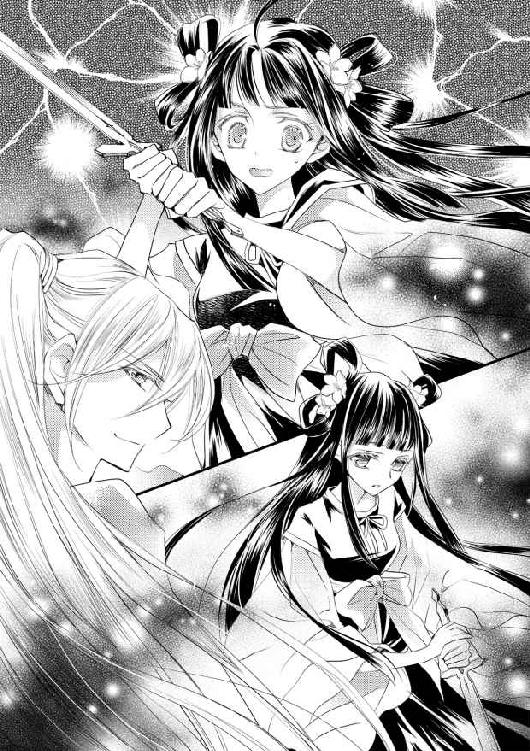
「うん、惜しかったね」
無表情な人形に声をかけた伽楽はといえば、にやにやと笑いながら肘置きに身を預け、酒を呷っている。
「伽楽っ!? どういうことなの？」
「大丈夫。どうにかなる前には止めに入りますよ」
「なんで、こんな......っ」
「次、いきます」
腰を抜かした緋那生の前で、人形が再度剣を振り上げ――ようとするも、床に刺さったそれは容易には抜けない。複製人形なのだから、腕力も緋那生と同等ということか。
「ほらほら、今ですよ、緋那生様」
「嫌よ！ 人に剣を向けるなんて......！」
まして、相手は自分と同じ顔をしているのだ。まともな神経では剣など振れない。
「いいですか、緋那生様。死の恐怖を味わった者のみが得られる色気というものがありましてね。それはそれは立派な――」
「そんなの、いらないわ！」
「いいんですか？ 類い稀な色気ですよ。俺でも滅多に見られない、秘宝級の色気で――」
「やってみるわ」
みなまで聞かず、緋那生は剣を握り直した。よいしょよいしょと剣を引き抜こうとしている人形に向け、振りかぶってみる――が、思っていたよりずっと重く、足をとられてよろけた。
「や、ちょっと......っ」
「あ、抜けた」
無感動な人形の声に、緋那生は息を呑んだ。振りかざされた剣先が、ぎらりと光を放つ。
「あ――」
声を発する間もなかった。
「えい」
人形は、その身には大きすぎる剣を勢いよく振り下ろした。
（――――っ!!）
緋那生は反射的に空いた手で頭を覆った。
そして覚悟した。味わったことのない痛みを受けることを。
「......？」
けれど、待っても待っても、その痛みはやってこない。
「そこまで」
「え......？」
おそるおそる目を開けると、伽楽が人形の隣に立っていた。人形の手には剣はなく、ただ不本意そうな顔で立ち尽くしてる。
「勝負あり。緋那生様の負けです」
そう宣言され、緋那生はへなへなとへたり込んだ。
「命を落とすかと思ったわ......」
「まさか」
伽楽は口元を緩めた。面白がっているのかと訝しみながらも、緋那生は気になっていることを訊いた。
「それで、負けたらどうなるの？」
「どうもなりません。勝敗などどうでもいいのです。......が、それでは勝者が不憫です。この複製人形にはご褒美をあげるとしましょうか」
伽楽はそう言って、人形の腰を抱き引き寄せた。むずがるように身をよじった人形の首筋に、軽く唇を落とす。
（う......）
どきりと、緋那生の心臓が痛いほど鳴った。
恥ずかしいようで、苦しいような、複雑な痛み。
それは、自分がされているところを客観的に見させられているかのような羞恥心と、他の人へのくちづけを見せつけられる屈辱感が混ざった、不快な感覚だった。
（わたしも、あんな顔をしたのかしら）
思い出すのは、いつか伽楽の部屋で交わした契約のくちづけ。ふいの出来事だったから、自分がどんな顔をしていたのか、想像もつかない。
つかない、のに。
緋那生は、ぽわわん、という音に我に返った。ふと見渡せば、緋那生の周りにいくつもの桃の花が咲いている。
「え、どうして今なの？」
「おめでとうございます。また色気が増したようですね」
「......そうみたい」
「何か色っぽい妄想でもしましたか？」
伽楽の口元がにやりと緩み、緋那生はあわあわと両手を左右に振った。
「妄想なんてしてないわ。ただ、先ほどのそれが、まるで自分がされているような気がして、それで......」
それで、なんだろう。言葉にならない感覚をもてあましていると、伽楽の口元が緩まるのが見えた。
「緋那生様にも、してさしあげましょうか」
「えぇっ!?」
「冗談ですよ。緋那生様は、素直ですね」
「素直......っていうのかしら、こういうの」
「純情、というべきかもしれませんけどね」
伽楽の目が細められる。
まただ、と緋那生は思った。小さくて弱いものを見守るような表情――まるで、親が子を愛でるような。それが少し物足りないような気がしてしまうのは、なぜだろう。
「伽楽って、いくつなの？ わたしより、だいぶ年上？」
若く見えるだけで、実は父親くらいだったりするのかも。そう怪しんだ緋那生の頭に、伽楽はぽんぽんと軽く手をのせる。皇女である自分にそんな仕草をする人は今までいなかったので、正直少し嬉しかった。
「年上ですよ。だいぶ」
「いくつ？」
「二十歳です」
断言され、緋那生はがっくりと肩の力を抜いた。
「......そんなに変わらないじゃないの。それとも、わたしが十二、三くらいの童女とでも思ってる？」
幼く見られることを気にしている緋那生は、無意識のうちに胸に手をあてて問うた。
「――いいえ」
伽楽は表情を変えぬまま片膝を落とし、緋那生と目線の高さを同じにした。そのまま、ずいっと前のめりになり顔を近づけてくる。
「よく存じ上げておりますよ。あなたは、うら若き十六歳の乙女だ」
のばされた細い指が、緋那生の黒い髪をすくう。
「朝露のように潤んだ瞳に、川面を撫でる風のように清かに流れる黒髪。そして、思わずくちづけたくなるような赤い唇――」
髪に触れていたはずの指は、いつの間にか緋那生のほてった頬に添えられていた。
「か、ぐら......」
もう片方のてのひらで頭のうしろを支えられると、じんわりと緊張にこわばった身体がほぐれていくのがわかった。
このまま身を任せたらどうなるのだろう。未知のことながらも、頭の中で警鐘が鳴った。
抵抗しなければ。流されてはいけない。そんな警告の声に反し、緋那生の身体は伽楽にその身を委ねたがっていた。
緋那生がゆっくりと目を閉じた瞬間――。
ぽんぽんぽん！ と弾けるような音がして、ぱちりと目を開けた。
「あ、また――」
緋那生を覆うように咲いた桃の花は、やがてはらはらと落ち、床の上に広がった。
伽楽はおもむろに立ち上がると、床を敷きつめた桃色の花びらを満足そうに眺めた。
「やりましたね。一気に花畑ですよ」
その言葉を聞き、緋那生ははっとした。
（......そうよね。今のは、わたしの色気を増すためにやったことだったのよね）
そうでなければ、伽楽が緋那生にくちづけを求めるはずがない。
がっかりしたようなほっとしたような複雑な感情を抱きつつも、緋那生は高鳴った胸を落ち着かせるように深呼吸をした。
「こういうのも色気指導の一環なのよね。少し心臓に悪いかも」
ひとりごとのようにつぶやく緋那生に、伽楽がちらりと視線を向けた。
（あれ......？）
そこに笑みはなく、かといって無表情でもなかった。
怒りのような。後悔のような。憂いのような。
なんとも表しようのない表情に、緋那生は不安になった。
「伽楽？」
「伽楽様。そろそろこの姿から解放してもらってもいいですか」
すっかり存在を忘れていた複製人形が、唐突に割り込んできた。伽楽も忘れてたといわんばかりに手を打ち、人形の頭を撫でる。
「そうだね。ありがとう、蜜流」
「みつる？」
なぜ人形に名前が、と思った次の瞬間、人形が姿を消した。
「な......っ」
声を失う緋那生の目の前を、一匹の蜂がかすめた。
「......蜜蜂？」
「すみません、複製人形というのは嘘です。幻術で蜜蜂をあなたの姿に変えていました」
なぜか伽楽は得意げにそう言うと、あっけにとられたままの緋那生に笑いかける。
「どうです、死の恐怖を知った感想は？ 皇女として人形のように暮らしているだけでは、味わえない感覚だったことでしょう」
「あ......」
出会ったばかりの頃、伽楽は緋那生が人形のようだと揶揄した。
今回は、そのことを緋那生に知らしめるつもりで計画したことなのだろうか。
でも、なんのために――？
「伽楽、」
緋那生がその疑問を口にする前に、伽楽は微笑んだ。
「さ、今日の指導はこれで終わりです。また明日も楽しみましょうね」
締めくくるようにぱんぱんと手をたたかれてしまうと、緋那生はもう何も聞けなくなってしまうのだった。
＊
伽楽と私室に戻る途中、采女たちが困り顔を突き合わせて何かを話しているのが見えた。
「どうかしたの？」
あまりに深刻そうだったので尋ねてみると、采女たちは慌てたように跪いた。
「緋那生様......っ、失礼致しました」
「何かあったの？」
「いえ......たいしたことではありません。ただ、そろそろお召し物を春のお色に変える時期ですのに、まだ雪も降り寒い日々が続いているので、どうしたものかと話し合っておりました」
「ああ......そうよね。もうそういう時期よね」
いつもなら、明るい色合いの衣を着せられることで「そういえば暖かくなってきたわね」と微笑み合うものだ。それが雪の積もった野や山を眺めながらでは、違和感が大きすぎる。
「やっぱり、あなたたちも春が遅いと感じる？」
気になって訊いてみると、采女たちは揃って何度もうなずいた。
「少し前から、皆で話しておりました。地方の豪族たちも、雪に足止めをくらっているとかで陽ノ宮を訪れませんし、退屈で退屈で......」
「食事に使う食材も保存食ばかりで、飽きてきますし」
「湯浴み用のお湯もすぐ冷めてしまいますから、何度も火を焚かなくてはならないし」
彼女たちの口から出てくるあふれんばかりの愚痴に、緋那生はすっかり気圧されて頭がくらくらしてきた。
「そ、そうよね。ありがとう」
早いところ立ち去りたくてそう遮ってみたが、緋那生がその場を離れてからも、彼女たちは困り顔で話し続けていた。
「......気づいてなかったのは、わたしだけだったのね」
そのことには、少なからず傷ついていた。季節の移ろいにも鈍感になるほど、自分は今まで何をしてきたのだろう。何もしていない。ただ、鈍感だっただけだ。
「緋那生様だけではありませんよ。天皇ももうひとりの皇女も、気づくというよりは人づてに聞いて知ることでしょう」
伽楽の口調は厳しく、とても緋那生を宥めているようには聞こえなかった。
「このままでは、お召し物の色で悩む程度では済まなくなるでしょうね」
「......そうよね」
誰もが、何もしなくても待ってさえいれば季節はめぐると思うだろう。
その常識が覆るなど、誰が考えるだろうか。
「そんなことより緋那生様。汗を流す意味も兼ねて、禊ぎをしませんか」
「え？ そんなこと？ 禊ぎ？」
くるりと表情を変えた伽楽に、緋那生は戸惑いを隠せなかった。
「はい。神への目通りを叶えたいのであれば、禊ぎははずせません」
伽楽の言うことはもっともで、拒む理由はない。
「でも、まさかこれから川に入るの？」
先日、祠に向かう前には雪の降る中、震えながら冷たい川に入らされたのだ。胃の腑まで凍りつきそうだったのを思い出し、緋那生は身震いする。
けれど、伽楽はせせら笑って否定した。
「そんな、修行じゃないんですから。大事なのは、心を穏やかにして、身も心も清めることです。どれだけ我慢できるかは重要ではありません」
「そ、そうなの......」
「では、行きましょう」
少し恥ずかしくなってうつむいた緋那生は、このときの伽楽の顔を見ていなかった。
怒りや苛立ちを滲ませた、複雑な感情の入り混じった表情を。
＊
向かった先は、湯屋ではなかった。
「ここ、伽楽の部屋よね？」
「ええ」
伽楽に与えられている小さいはずの部屋は、また様変わりしていた。
落ちゆく夕陽が空を茜色に染め、立ち並ぶ木々に足を止めた小鳥たちがさえずっている。さえずりの隙間から聞こえてくるのは、さらさらとした川のせせらぎだった。
「川があるの？」
「禊ぎと申し上げたはずですよ」
伽楽は当然だといわんばかりに答えた。
「ねえ、奥行きとかどうなってるの？ いくら幻術だとしても、歩いても歩いても終わりがないっていうことはないのよね？」
「そのあたりの感覚をも操るのが、幻術というものです」
「......そう。そうよね。だったら、何があっても受け入れるわ」
質問攻めにするより、深く考えずに受け入れてしまう方が容易い。
そう覚悟を決めた緋那生に、伽楽はわずかに目を瞠った。
「すばらしいご判断です。......が、いいんですか？ そこまで俺を信用してくれてる、というふうに解釈してしまいますよ」
「いけないの？ わたしはあなたを信用しているのだけれど」
そうでなければ、こんな不可思議で怪しい部屋にのこのこやってきたりはしない。
「それは、天皇が遣わした舞師だから、ですか？」
「それもあるけど、そうじゃないわ。何日かともに過ごして、わたし自身がそう思えたから」
緋那生は即答しておいて、そのあとで胸に不安を渦巻かせた。
（どうして、そんな顔をするの？）
信用していると告げれば、安心してくれる、喜んでくれると思った。
けれど、今の伽楽はどうだろう。
緑がかった目を泳がせたかと思えば、その目を慌てたように緋那生からそらせてしまった。口元は、かたく引き結ばれている。
「そう、ですか......」
やっと絞り出したようなかすれた声は、ようやく緋那生に届くほどで。
「伽楽？」
「ああ、すみません。少し意外に思っただけです。さあ、先へ進みましょう」
そう言って見せてくれた笑みは、いつもと変わりないように見えた。
（信用してはいけないの？）
心の中で伽楽に問いかけながら、緋那生は自分自身に問いかけなければならなかった。
――もし、この先、伽楽に裏切られるとしたら？
傷つけられる前に、信じることをやめる？
それとも......？
＊
そこには本当に川が存在していた。
どこから流れてくるのかと上流に目を向けようにも、すぐ先は霧に隠れて見はるかせない。
「そこにある衣装に着替え、足先からゆっくり浸かってください」
右からも左からも声が聞こえる気がして、緋那生は思わずきょろきょろと頭をめぐらせた。
「伽楽？ どこにいるの？」
「ここにいますよ」
そう言われても、霧が深くてどこにも姿は見えない。
（――とりあえず、今のうちに着替えないと）
こちらから見えないのなら、あちらからも見えないはずだ。
緋那生はするすると羽織っていたものを脱ぎ捨て、岩の上に用意されていた巫女装束をまとった。いつぞやに着せられた衣と同じで、やわらかくも薄い生地で縫われたものだった。
胸の下で帯を締め、右足から川にすべり込ませてみる。
（あ、温かい......）
ぬるま湯のような心地よい温度設定は、伽楽による配慮だろうか。とりあえず寿命を縮めるような思いをせずに済むのだと思うと、緋那生はほっとした。
水底には、きらきらとした丸い石が敷きつめられている。そこへ魚が一匹ひらひらと通り過ぎていき、緋那生は一瞬びくりと身体をすくませた。
「どうかしましたか、緋那生様？」
「な、なんでもないわ。魚にびっくりしてしまって......って、わたしが見えてるの？」
「見えてますよ」
「きゃっ」
真後ろで声がして振り返ると、すぐそこに伽楽が立っていた。
「いつからそこに？」
「ずっとおりましたが」
「............っ」
ならば、着替えているところも見られていたのだろうか。気になったけれど、肯定されるのが怖くてとても訊けなかった。
緋那生は薄着の状態で伽楽のそばにいることに耐えきれず、ざばざばと川の中心まで歩き、腰を下ろした。川は意外と深く、沈み込もうと思えば胸まで浸かることができた。
と、背後で伽楽のため息が漏れる。
「ああもう......ゆっくりと申し上げましたのに」
「......そうだったわ......」
「大事なのは、心を穏やかに保つこと。もっと力を抜いてください」
「......ひゃっ」
背後から両肩に手をのせられ、緋那生は跳び上がりそうになった。
「どうしました、緋那生様？ 身体から緊張が解けないようですが」
「そ、それは、だって......伽楽のせいよ」
「俺のせい？ なんで？」
耳元で、笑みを含んだ声音で囁かれ、緋那生は頬をふくらませた。
「いじわる......」
「いいですか？ 禊ぎの最中は、くれぐれも余計なことは考えないようにしてください」
「努力するわ」
緋那生は眉間にしわを寄せ、伽楽の存在を頭から追い出そうと試みた。これもきっと、伽楽なりの色気指導の一環なのだろう。そう信じて。
（自分のことだけ考えるのよ、緋那生）
肩におかれた伽楽のてのひらからは、薄い布一枚を通して熱が伝わってくるけれど。
ときおり、風に揺れる伽楽の髪先が頬をくすぐるけれど。
緋那生はぶんぶんと首を振って、水に浸かった自分の身体に目を落とした。
（あら......？）
気のせいだろうか。少し、ふくらんだ気がする。
大きな期待を込めて両手で触れてみると、そこには確かに立体的になった胸が存在していた。
「すごいわ......っ、いつの間にか育ってる......！」
感激のあまり立ち上がったところで、目の前にぽんぽんと桃の花が咲いた。
「こら。何を考えてるんですか」
呆れ声に振り返ると、伽楽はあぐらをかいて頬杖をついた姿勢で緋那生を見上げていた。鈍い光を放つその瞳は完全に据わっていたが、緋那生の感動はそれくらいでは治まらなかった。
「だってね、伽楽！ わたしの――」
そこまで言って、気がついた。今の自分がまとっているのは、薄い衣一枚。
身体の線が、くっきりと浮き出てしまっている。胸が大きくなったのを自覚してしまった今、恥ずかしさは倍以上だった。
「緋那生様の？」
「なっ、なんでもないわっ」
慌ててくるりと背を向け、再びばしゃんと水に浸かった。
「あまりに落ち着きがないですね。心身ともに清めようという気がないのですか？」
「......ごめんなさい。今はどうしても、心を穏やかにするのは難しくて」
「なぜです？ そんなに俺の存在が気になりますか？」
緋那生は伽楽に背を向けたまま、こくこくとうなずいた。
どうしても、頭から伽楽の存在を消すことができない。
「まだまだ未熟ですね」
「......ごめんなさい。せっかくわたしのためにいろいろしてくれているのに」
「謝るのなら、俺の顔を見てください」
「う......」
それは、もっともなお叱りだ。
緋那生は意を決して、両手で胸元を隠して、水の中を半回転した。さやさやと、黒髪が伽楽の方に向かってたゆたっている。自分の意志に反して髪だけが伽楽に触れているのが、なんだかとても理不尽に思えた。
「顔が赤いですね」
「え、本当に？」
とっさに両手を顔にあててしまってから、はっとしてまた胸元を隠す位置に戻した。ひとりでばたばたして、我ながらみっともないとは思う。
「確かに顔が熱いわ。火傷したみたいに」
「この寒いのに、いったい何があなたの白い肌を焼いたのでしょうね」
何が。......しいて言うなら、伽楽のその眼差しだろうか。
緋那生は熱に浮かされたような心地で、伽楽の緑がかった灰色の瞳を見つめた。
「見ないで、伽楽。火傷を負った顔は、とても醜いわ」
「あなたが俺を見つめているのに、見るなとはまた勝手ですね」
見つめ合いながら、互いにその奥を覗き込もうとしているようだった。
「わたし、わがままかしら？」
「わがままで美しい皇女様です」
そらさず、求め合うように視線を交わす。
「伽楽、わたし、なんだか――」
やがて、伽楽の輪郭がぼやけ始めた。
ゆらゆらと、水面のように揺れる。
また幻術かしらなどと頭のどこかで思いながら、緋那生は意識を手放した。
夢うつつのまま、意識のどこかで静かな声を聞く。
「――これでは、ただの八つ当たりだ」
それが何を意味する言葉なのか、緋那生には見当もつかないけれど。
その声音には、後悔のような苦い色が含まれているように感じた。
そしてその声も、言葉も――夢に落ちた緋那生が思い出すことがないほど、深い深い意識の底へと沈んでいった。
＊
緋那生が目を覚ましたのは、夜中だった。
いつもの寝台に、馴染みのある寝衣。
違和感は、喉にあった。ひどく喉が渇く。
半身を起こして水差しに手をのばしたところで、記憶がゆるゆると戻ってきた。
（わたし......のぼせたのだったかしら）
禊ぎの最中、伽楽と向かい合っているときに頭がぼんやりしてきて、意識を失ったのだ。
伽楽が部屋に連れて来てくれたのだろうか。
（......着替えは、誰がしてくれたのかしら）
まさか伽楽が、とは思うけれど、確認するのは少し怖い。
（ううん、そんなことより）
緋那生は首を振り、ため息をつく。着替えの問題などどうでもよくなるくらい、倒れたことが情けなかった。
あの川は幻術なのだから、実際に湯に浸かったわけでもない。体感した温度も決して高くはなかったのだから、きっと気持ちが呑まれてのぼせたような状態になったのだろう。
禊ぎも満足にできないなんて、伽楽は呆れたはずだ。
皇女として神に認めてもらうには、まだまだ足りないものだらけだ。
緋那生は窓を開け、冷気を呼び込んだ。部屋の空気が蹂躙され、一瞬にして意識が冴える。
そして、緋那生は心を決めた。
夜明けを待ち、朝餉が運ばれ始める時間になると、緋那生は手早く支度を整えてある場所へと向かった。
陽ノ宮の中央に位置する朝堂からは、貴族や官人たちがぞろぞろ出てきたところだった。毎日天皇によって行われる朝政が終わったのだ。どの顔にも難しい色が滲み、足取りは重い。
緋那生は朝堂にすべり込むと、大臣と言葉を交わしている人物を呼んだ。
「父上......！」
広い堂内に声が響き、大臣が驚いたように目を見開く。その手前で、背中を向けていた陽天皇がゆっくりと振り向いた。
「緋那生。ここはおまえの来るような場所ではない」
「わかってます。ですが、少しお時間をいただきたくて」
緋那生は膝を折って腰を下ろし、両手の指を揃えてつく。父親に物申すのは初めてだ。さすがに緊張して、声が震えた。
「手短に申せ」
天皇は大臣を退出させると、玉座に座した。
緋那生は息を吸い込む。
「父上。実は、春の訪れが遅れているようなのです」
じっと見つめた先で、天皇の片頬がぴくりと動いたのがわかった。
「......それがどうした」
とたんに苦い顔になったものの、反応からすれば、どうやら気づいていたようだ。
「このままでは、山の動物たちの食べるものがなくなり、民の畑を荒らすことになるそうです。そうなれば――」
「民は食糧を失うであろうな」
先回りして告げられ、緋那生は口を開けたまま静止した。
「え......？」
「それについての対策はもうとってある。巫女たちには春迎えの舞を連日連夜させているし、民への保存食の配給も進めている」
「そうなのですか......！」
緋那生は思わず身を乗り出した。
「気になるのなら、供を連れその目で見てくればいい。それで満足したら、おまえは神気を授かることだけに集中しろ」
天皇は苛立たしげにそう告げると、足早に立ち去ってしまった。
「あ......」
あともうひとつ。鳥ノ一族に関することは、何ひとつ聞き出せなかった。
（――でも）
とりあえず、やはり天皇は民のことを案じているのだとわかり、安堵の息をついた。
とはいえ、伽楽から聞いた話も無視できない。
その昔、悪政の時代に春が訪れなかったという話――。
同じことを繰り返す恐れがあるのなら、それを止める責任は皇女である緋那生にもある。
（わたしがこの目で確認すべきだわ）
そう決意して、緋那生は立ち上がった。
＊
陽ノ宮を降りるにあたり、緋那生には鎧をまとった四名の兵が護衛につけられた。伽楽と羽矢彦だけでいいと訴えたのだが、それは許されなかった。
緋那生が羽矢彦からもらった毛皮を羽織って現れると、兵たちは揃って眉をひそめた。何か言いたげなのを無視して、緋那生は急ぎ出立するよう命じる。
「時間が惜しいわ。早く案内して」
「ちょうど那千邑で配給が行われている時刻ですから、そちらへ向かいましょう」
兵のひとりに促され、緋那生はうなずいた。その背後で、伽楽がさりげなく補足する。
「陽ノ宮からほど近い、波璃一族が統治する邑ですね」
波璃一族といえば、よく朝廷にも顔を出す地方豪族だ。緋那生にもわかる。
移動には馬を使うことになり、緋那生は兵の操る馬に相乗りすることになった。伽楽はといえば、颯爽と馬に跨りその首を嬉しそうに撫でている。羽矢彦に馬は必要ないので、彼は後ろからついてくることになった。
（神よ――わたしに真実を知る勇気をください）
馬の背に跨ると、一面に敷きつめられた雪が、緋那生の期待と不安を照り返した。
那千邑は実際近く、太陽が真上にくる前に辿り着いた。
まだ皇女としてお披露目がされていない緋那生は、土手の上からこっそり様子を窺うことにした。馬から降り、じっと目を凝らす。
「あれがそうなのね」
役人の姿はもうなかったが、首長と見られる男が器を手にした邑人たちを整列させているところだった。男の脇に置かれた甕や袋の中には、どうやら天皇の指示通りの保存食が入っているようだ。
「父上のおっしゃったことに嘘はなかったわ」
ほっと胸を撫で下ろしつつ、ちらりと伽楽の顔色を窺ってみる。
伽楽はなんともいえない微妙な表情で首長を眺めていた。緋那生は不安になる。
「......そういうことよね？」
「そうですね」
その返事にぱっと笑みを広げた緋那生に、伽楽は細めた瞳を向けた。
「春がくるといいですね」
「ええ......そうね」
目と目が合っていたのはごくわずかな間で、伽楽はまたすぐに邑人たちに視線を戻してしまった。
（心が入ってない言い方――）
こんなことをしても春は来ない。伽楽はそう思っているのだろうか。
伽楽の横顔を眺めながら、緋那生は顔を曇らせた。
「考えたくはないけれど......権力のある波璃一族が優遇されてるっていう可能性もなくはないわよね」
この光景が陽ノ国中で見られるものだと判断するのは、早計すぎるかもしれない。配給は記録がつけられているだろうから、あとで見せてもらう必要がありそうだ。
「少しは、疑う心が芽生えたようですね」
伽楽の、思案する緋那生に向けられた視線は、どこか嬉しそうだった。
「あなたは、そう思ってるんでしょう？」
「さあ。俺にはなんとも」
緩く首を振った伽楽だったが、その表情は確信しているように見えた。つまり、緋那生の思いつきが正解なのだと。
そして、春はまだ来ないのだと。
（だとしても、何を根拠に？）
自然のことわりは、神のみぞ知るもの。
伽楽はいったい、何を知っているというのだろう。
「羽矢彦は、どう思う？」
背後の兵たちよりもさらに後方に控えている羽矢彦へと視線を向けると、彼はふいと目をそらした。
「羽矢彦......？」
仏頂面をした羽矢彦は、緋那生と目を合わそうとしない。その態度に緋那生の中の不安がいや増し、彼のもとへと歩み寄った。
「気になることがあるなら、言って？」
詰め寄るとさらに顔をそむけられ、一瞬、気が挫けそうになった。けれどこちらに向けられた伽楽の視線に気づき、この不安を無視してはいけないと思い直した。今までは気になったことも「気にするな」と言われればそのままにしていたけれど、それは間違っていたのかもしれない。渦巻く不安をなかったことにはできないのだから。
「皇女として知らなければいけないことなのだとしたら、教えて」
羽矢彦の意見は、今緋那生が聞かなければいけないものなのだ。直感で、そう感じた。
じっと見つめていると、羽矢彦がため息とともに口を開いた。
「気になるっていうか」
「うん」
「......皇女、うちに来られるか？」
「え？」
「鳥ノ一族の里に来いよ。そうすれば、皇女の知りたいことがわかるはずだ」
渋る兵たちを説得して、緋那生は羽矢彦の案内で伽楽とともに鳥ノ一族の里を訪れた。
「どうして......？」
里の入り口から一歩進み入ったとたん、愕然とした。
見たくなかった現実が、そこにはあった。
雪に覆われた地は冷え冷えとしていて、おそらくは畑だったであろう土地も今は白いだけだった。
小さな木の実を取り合う子どもたち。それを宥める、やせ細った女たち。苛立ちを抑えきれず、いがみ合う男たち。
緋那生は思わず顔をそむけかけ、けれど伽楽に背を押されて再び正面に顔を向けた。
（わたしは、向き合わなければいけない）
緋那生は一歩踏み出すと、羽矢彦に向き直った。
「保存食の配給は？」
「来てるように見えるか？」
攻撃的な返答に、緋那生の胸は痛んだ。
「......ここには、来ていないのね」
先ほど、波璃一族にはもう数度も配給が行われていることを兵たちから聞いた。明らかな差別。あってはならないことだ。
「陽ノ宮の役人が来るときは、決まって徴収のときだけだ。俺たちが苦労して育てた米や野菜も、狩ったばかりの獲物も、きっちり量ってきっちり半量を持って帰りやがる」
「半分も？ それは多すぎだわ」
過去の緋那生は知らなかったことだが、今ならどのくらいが適正なのかわかる。
冷ややかな眼差しの羽矢彦は、青ざめた緋那生にさらに追い打ちをかけた。
「ここまでの仕打ちを受けるようになったのは、皇女の親父さんの代からだ」
「父上の......」
「前にも言ったけど、今の陽天皇は、俺たち鳥ノ一族を人と思ってないんだ。俺みたいに皇女付きになれても、ときどき褒美がもらえるだけだし」
羽矢彦はそう言って、自嘲気味に唇の端を歪ませた。
思わず伽楽を見上げると、彼は痛ましげに鳥ノ一族の人々を眺めていた。
（嘘......嘘だわ）
信じたくはなかった。
陽天皇は、鳥ノ一族を足として使うだけ使って、飢えている彼らに目も向けないなど。
民として、他の一族と同じように扱っていないのだと。
けれど、緋那生が信じまいと、目の前に広がる光景は現実だ。そこから目をそむけないと決めたのは、緋那生自身だ。
「さあ、次は春迎えの舞を確認するとしましょう」
伽楽の提案にも、緋那生の胸は暗い影を落とすばかりだった。
陽ノ宮へと戻ると、すぐに吹きさらしの舞台へと向かった。すでに巫女たちが春迎えの舞を舞っている時刻になっていたからだ。
雪こそ降っていないが、今日も冷える。薄い巫女装束姿の巫女たちを不憫に思った。
舞台からは神の住まう祠が見えると聞くが、今は雪が積もって見えないようだ。
「相変わらず、足をすべらせたら落ちそうで怖いわ」
「今まで落ちた人がいないのが不思議なくらいですね」
冷ややかな声色で伽楽が言うので、緋那生は驚いて振り返った。
「なんてことを言うの、伽楽。不謹慎だわ」
「不謹慎なのは、こんな舞台を設計した者です。神に舞を披露するのに、祠を見下ろすなんて、それは神を愚弄する行為だと思いますが」
舞師として許せないのだろう。伽楽の表情は不機嫌そのものだ。
「誰かが不幸になる前に、舞台は移設した方がよいかと」
「......そうね。父上に進言してみるわ」
緋那生の言を耳に留めてもらえるかはわからないけれど、何かが起きてからでは遅い。
と、巫女たちの動きがばらついた。
二人の会話が聞こえていたのか、ちらちらとこちらを気にするような視線を感じる。
「このくらいで舞が乱れるようでは、到底、神には届かない」
「......祈りが、神に届いていない？」
「でしょうね。そもそも彼女たちでは力不足です。祈りの心が微塵も感じられない」
「でも、彼女たちは選ばれた巫女なのよ」
宮仕えする巫女たちは、陽ノ国中の五歳以下の少女から選ばれる。選ぶのは、神懸かりにて神託を得る能力を持った巫女だ。
「雨乞いや春迎えの舞のように切実な願いを届けたいのなら、神への信心が不可欠です」
「彼女たちが、神を信じていないというの？」
「少なくとも、舞からはそう窺えます」
険を宿した伽楽の瞳が、緋那生からそれた。舞を終えた巫女たちが、緋那生の前にひれ伏したのだ。顔に浮かんだ濃い疲労の色に、緋那生は眉根を寄せる。
「春迎えの舞は、そんなに疲れるの？」
緋那生が問うと、巫女のひとりが控えめに顔を上げた。
「それもありますが......日に三度の舞を義務づけられているものですから」
「三度？ それが毎日、ということよね」
巫女の仕事は、舞うことだけではない。夜明け前から禊ぎをし、祠に供える酒や食べ物を手配する。神座の掃除が終われば陽ノ宮に戻り、祈りに心身を投じる。
疲れて祈りの心を込められないのでは、本末転倒だ。
その上、彼女たちが神を信じていないというのが本当なのであれば――。
「だったら、わたしが春迎えの舞を覚えるわ」
緋那生は心を決めた。
春の訪れへの思いや祈りは切実だ。神の存在ももちろん信じてる。そんな自分が舞うことで、少しでも春の訪れが近づくのなら。
「おやおや、勝手に決めてしまわれましたか」
やや呆れ気味の声は、当然、今は緋那生の師匠的存在である伽楽のものだ。
緋那生はすぐさま伽楽に向き直る。
「伽楽、お願い。わたしに春迎えの舞を教えて？ 陽ノ国一の舞師であるあなたになら、できるわよね？」
「ええ。春迎えの舞を覚えれば、あなたは確実に成長するでしょう」
「それなら――」
「いいでしょう。喜んでお教えしますよ」
緋那生がぱっと広げた笑みに、伽楽も微笑で返してくれた。
伽楽が心から喜んでくれている――そのことに、緋那生の胸は熱くなるのだった。
すぐに稽古を始めたいという緋那生の要望から、二人は舞台から稽古場へと直行した。
――と、戸に手を掛ける前に、中から灯りが漏れていることに気がついた。
「あら？ 誰か稽古中かしら」
その予定はなかったけれど、と頭のどこかで思いながら、中を覗き込んでみる。
ゆらめく灯りに浮かび上がったのは、ひとりの男性だった。
真っ白な衣は、初めて会ったときの伽楽と同じもの。
神職に就く者だろうかと緋那生が思った次の瞬間、背後で舌打ちが聞こえた。
（え、舌打ち？）
さすがに耳を疑う。
緋那生がおそるおそる振り返ると、そこには初めて見る伽楽の顔があった。目尻を引きつらせ、口元は苦々しく引き結ばれている。
「......もう出てきたか」
「え？」
今なんて、と聞き返そうとしたが、それより先に稽古場から衣擦れの音とともに、低い声が緋那生をとらえた。
「お初にお目にかかります。陽天皇よりお招きいただきました、真比十と申します」
「父上に......？」
「事情があり遅くなりましたが、皇女様に色気指導をさせていただくことになりました、舞師でございます」
男はそう名乗ると、深々と頭を下げた。
（どういうこと......？）
男は短い黒髪の、やや浅黒い肌をした青年だった。生真面目そうな表情と立ち姿は、舞師というより役人のような印象を与える。
真比十と名乗ったその男は、緋那生から伽楽へ、流れるように視線を移した。
「やはりこちらにいらっしゃったのですね。ここへ参じる前に、お住まいが空っぽなのを確認してまいりました」
「そうか」
慇懃な口調の真比十に対し、投げるように返す伽楽。
どうやら、二人は顔見知りのようだ。
「どういうことなの、伽楽？」
二人目の舞師の登場――これは、いったい何を意味するのか。
伽楽は稽古場に足を踏み入れると、真比十の肩に手を置いた。先ほどまでの仏頂面はどこへやら。彼はにこりと微笑んだ。
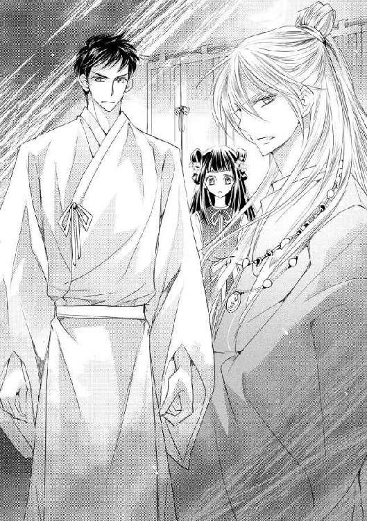
「やあ。君にはすまないことをしたね」
「ええ。あなたの神術で空腹は免れましたが、ひどく狭い思いを致しました」
「どうやって抜け出てきたんだい？」
「結界が弱まった瞬間を狙って、弓を射させていただきました」
「結界が？ 俺も衰えたものだな。弓矢を奪っておかなかったのは失敗だったね」
二人の刺々しい会話は、妙にさくさくと進む。話についていけない緋那生は、どちらに説明を求めるべきか悩んだ。
伽楽を仰ぐと、緋那生の視線に気づいているはずなのに、こちらに目を向ける気配はない。
あきらめて真比十に目で問いかけると、彼はそれに気づくなり緋那生に身体ごと向き直った。
「これは失礼を致しました、皇女様。私からご説明申し上げましょう」
伽楽が目すら合わせてくれないのだから、そうしてもらうしかない。緋那生は目で促した。
「まず、陽天皇が遣わした舞師というのは、私のことです」
「え......？」
「参上が遅れましたのは、こちらにおわす方に捕まり、隔離されていたからです」
そう言って、真比十は仰向けたてのひらで伽楽を示す。
緋那生には、真比十の声がどこか遠く聞こえた。彼の言葉を信じたくない、受け入れたくない思いが、不快さをともなって胸に込み上げてくる。
「真比十が本物の舞師......？ だったら、あなたは、」
何者なの？ そう問おうとしたところで、言葉が喉につかえた。
伽楽はその言葉の続きを呑み込むようにうなずくと、口元を緩めた。
「偽物、ということになりますね」
少し、眉尻を下げて。
「わたしを騙してたの？ 本当は何者なの？」
緋那生がつかえていた言葉を絞り出すと、伽楽の表情がまた少し曇った。
「......どちらの質問に先に答えてほしいですか？」
放たれる言葉は意地悪で。
けれど表情も声色も、どこか苦しげで。
（そんなのって、ずるい......）
きりきりと痛む胸を押さえながら、緋那生は睨むように伽楽を見上げた。
「あなたは、何者なの？」
本心とは裏腹な言葉が出た。
本当はもうひとつの答えが聞きたかったのだと、口にしてから気づいた。
「真比十の言うとおり、俺は舞師ではありません。天皇に招かれてもいません」
伽楽はすらすらと話し出す。緋那生が困惑の目を向ける中、真比十は何もかもを心得たような顔で酒を注ぎ始めた。
「俺は、真比十が陽ノ宮の階段を上ろうとしているところを捕まえ、祠に隔離しました。結界を張り、誰にも気づかれないようにして。そして、俺が天皇に呼ばれた舞師だと偽り、陽ノ宮に現れました」
それが許されざることだと知らないわけではないだろうに。伽楽の口調は、まるでいたずらを仕掛けた子どものようだ。
「なぜそんなことをしたのかというと、この目で確かめたいことがあったからです」
「身分を偽って陽ノ宮に侵入して......そこまでして確かめたいことって？」
緋那生が震える声で問うと、伽楽は真比十が差し出した杯を一気に呷った。
そして、表情を一変させる。
「今の世の皇族からは、民を慈しむ心も、神を信じ祈る心も感じられない。それらが本当に失われてしまったのかどうかを確かめにきた」
青白く照らされた肌に、引き結んだ唇に、杯を握りつぶしそうな手の甲に、怒りが見えた。
空を睨む伽楽の横顔は、とても生々しくて。
（でもきっと今のこの姿は、偽りのもの――）
伽楽はすべるように緋那生へと視線を移すと、ふっと笑った。
人とは思えぬ美貌は、見る者の目を、心を奪う。
「あなたは......――神、なのね」
口にしてから、緋那生の胸がざわついた。
何を言っているのだろう。そんなこと、ありえるわけが――。
「正解です。よくできました」
伽楽は、茶化すようにそう言って。
だから、緋那生は自分から訊いたくせに、反射的に否定した。
「嘘よ。そんなことって――」
「信じるも信じないもあなた次第ですよ、皇女様」
そんなふうに呼ばれて、緋那生ははっとした。伽楽は、皇族の神への信仰心を確かめるために来たのだ。
伽楽にじっと見つめられ、試されているような気がした緋那生は、瞳をさまよわせることしかできなかった。
すぐには信じられない。
けれど、もし事実なら、訊きたいことが山ほどある。
「それで......その目で、あなたは今の皇族をどう見るの？」
好意的な返事など期待していなかった。
伽楽はいつも、贅沢に振る舞う皇族に批判的だった。
けれど、伽楽は曖昧に微笑んだだけだった。
「結論を出すには、まだ早いと思っています。保存食の配給もどこまで行われているのか確認不足ですし、あなたの春迎えの舞もまだ見ていない」
春迎えの舞と聞き、顔を上げたのは真比十だった。けれど二人の会話を邪魔してはいけないと思っているのか、言葉は発さず伽楽のために酒を注ぎ続けている。
緋那生は気が遠くなりそうな気分に陥りながら、思い出していた。
伽楽の部屋で見た、幻想的な光景を。
朝露に濡れた草花。差し込む淡い陽の光。せせらぎが耳に心地よい川。
あれほどまでのものを、神気を授かっただけの舞師に生み出せるはずがない。
（それに――）
緋那生は無意識のうちに、指を耳たぶに触れさせていた。
伽楽が使うことはないと告げた、言霊の力。
そして、色気を増すごとに美しい花と香りを咲かせる術。
そんなことができたのは、彼が人ではないから。
思案していると、このところ姿を現していなかったボウが、伽楽の袍から顔を覗かせた。心なしか、元気がなさそうに見える。そんなボウの鼻先を、伽楽は指先で撫でてやっている。
やはりボウも、ただの兎ではないのだろう。
「伽楽は......あなたは、以前教えてくれた、この土地を守る土地神なの？ あの祠の」
「そうです」
伽楽はうなずいて、真比十から受け取った杯で酒を呷る。
そうだ。おそらく真比十が持参したと思われるあの酒には、神に捧げる際と同じ飾りがつけられている。
「誕生日の日に祠でわたしを追い返したのも、あなたなの？」
「そうです」
「どうして？」
その問いには、伽楽は意地悪そうな笑みで返した。
「言ったはずですよ。色気不足だと」
本気とも冗談ともとれない表情は、緋那生の胸をさらにざわつかせるだけだった。
＊
夢でも見ているような足取りで稽古場を出て行った緋那生の後ろ姿を見送ると、伽楽はあらためて真比十を見下ろした。
「さて」
「何がさて、ですか」
ぴしゃりと遮られ、伽楽はやれやれと茵に腰を下ろした。
真比十は波璃一族の次に力のある真見一族という地方豪族の息子で、舞師としては陽ノ国一の実力を誇る青年だ。祠には十六歳の誕生日にしか訪れなくなった皇族に代わり、季節の折に捧げ物を手にやってきては優美な舞を披露してくれる。
そんな彼にこの姿を見せたことはなかったが、声をかけたことはあった。何度も。
真比十は退屈な神の話し相手だった。
......それなのにこんな仕打ちを受けては、臍を曲げるのも当然だろう。
真比十はもともとの生真面目な顔つきに不機嫌さを覗かせ、ひたすらに酒を注ぎ続けた。
「なんだ、俺を酔わせたいのか？」
「あなたでも酔うのですか？」
人ではないのに？ と暗黙に問いかけられ、伽楽はふふっと笑った。
「最近は安くてまずい酒ばかり捧げられるからな。酔うほど飲めん」
天皇の名で捧げられる酒は、年々質が落ちている。この陽ノ宮には、余って捨てるほど良い酒があるというのに。
「まずい酒の腹いせですか、これは」
真比十の茶色い瞳が、冷ややかに伽楽を仰ぎ見た。どうやら、不機嫌の理由は祠に閉じ込めたからだけではないようだ。
伽楽は視線を受け止めつつも、よりくつろいだ姿勢をとる。
「これ、とは？」
「終わらない冬です」
真比十は即答し、瞳に険を宿らせる。
「季節がめぐらないのは、あなたが陽天皇に、皇族たちに失望しているからなのですか？」
終わらない冬は、すでに陽ノ国の民を苦しめ始めている。このまま春が訪れなければ、民も山の動物も、そしてこの陽ノ宮に住む皇族たちもが食糧難に陥り、やがては命を落とす者も出てくるだろう。
「あなたは神です。ですが、皇族への腹いせとしてはいささかやりすぎだとは思いませんか」
噛みつくような勢いにも、伽楽はせせら笑うだけだった。
「まるで、俺が春の訪れを食い止めていると決めつけるような言い方だな」
「違うのですか」
「さあ、どうだか」
はぐらかして、伽楽は立ち上がった。
「伽楽様――今はそう名乗られているのですね」
「そうだ」
「では、伽楽様。他の者に正体を知られる前に陽ノ宮を去られることをお勧めいたしますが、どうなさいますか」
「さあ、どうしようかな」
伽楽は顎に手を当て、思案する姿勢をとった。
実際、決めかねていた。
本気で緋那生に色気指導をするつもりなど最初からなければ、当然、神気を授ける気もなかった。陽ノ宮に入り込み、皇族の様子を眺める傍ら、あまりにも世間知らずな皇女をからかって退屈しのぎができれば、それでよかった。
――そう、最初は。
なかなか答えを出さない伽楽を見やり、真比十が口を開いた。
「このまま舞師として陽ノ宮に滞在するというのなら、私は、あなたの弟子と名乗ることとしましょう」
「なぜだ？ 天皇に本当のことを話してもいいのだぞ。俺は止めん」
ひらりと手を振る伽楽に、真比十は首を振った。
「そんな愚かな真似は致しません」
「ほう」
「神が私に代わり陽ノ宮に居座っている......そんなことを言えば、頭のおかしい奴が来たと思われ追い出されるだけです」
「確かに」
伽楽は鼻で笑った。確かに、信じる者などいないだろう。
「だが、たとえおまえが私の嘘に乗ったとしても、今後の皇女の行動次第で事は決まる」
「それは、皇女様に偽物は去れと命じられれば、おとなしく引き下がるということですか」
「そういうことになるな」
その際、この国の行く末を緋那生に告げるべきだろうか。
このとき伽楽は、自身の胸に渦巻く迷いを自覚した。
結論を出すにはまだ早いと緋那生には伝えたが、それは真実ではなかった。わずかな間にも、皇族たちの振る舞いや考え方に触れ、それなりに理解したつもりだ。
それでも迷うのは、緋那生の存在があるから。
そんなふうに揺れるのは、神にあるまじき感情だということも自覚していた。
「意外です。神術でもって皇女様の記憶を封じるくらいはするかと思っていました」
真比十の言葉に、伽楽は曖昧に笑い、首を振った。
「そんなことはせぬ」
言霊にしても、そうだ。
緋那生の心をねじ曲げるような神術を使うつもりはなかった。
稽古場を去ろうとする伽楽の背に、真比十の声が追いかけてきた。
「このまま伽楽様が皇女様の稽古を続けることになったら、私も同席させていただいてよろしいでしょうか」
「......好きにしろ」
答えてから、伽楽は心の中でつぶやいた。
緋那生が伽楽の滞在を許し、指導を受け入れる――その可能性は、限りなく低いのではないだろうか、と。
＊
気がつけば、夜が明けていた。
そして気がつけば、朝餉を食べ終えていた。
いつ眠ったのか、何を食べたのか、何も頭に残っていない。
こんなことは初めてで、緋那生は自分に何が起きたのかを理解できていなかった。
頭を働かせれば、考えなくてはならないことに直面しなければならないから――。
だから、こんなにもぼんやりしているのだろうか。
「緋那生様。御髪がほつれておいでです」
「本当？ お願いできる？」
「もちろんですわ」
緋那生が化粧台の前に腰を下ろすと、背後に立った采女が緋那生の髪から飾り紐をすべてはずした。
さらさらと、流れるように黒髪が肩に、背に落ちる。
豊かな髪の束に櫛を通しながら、ほぅっと采女がため息をついた。
「またいっそう艶やかになられましたわ」
「......そう？ 今年の椿油の出来がよかったのかしら」
確かに、鏡の中の自分の髪は、黒く艶やかに輝いている。
今まで髪の艶にも肌のきめ細かさにも関心などなかったのに、不思議と今は鏡を食い入るように見つめる自分がいた。
伽楽にも見てほしい――無意識のうちに、そんなことを頭に浮かべてしまう。
一方で、春が来ないという一大事に見舞われているのに外見の美しさに気を配るなど、伽楽に知られればきっと軽蔑されるだろうなどと考える自分もいた。
（でも、美しく飾り立てる喜びを教えてくれたのは、伽楽だわ）
緋那生に合う化粧を施してくれた伽楽の指の感触を、緋那生はいつでも思い出せる。
あれは、なんだったのだろうか。
皇族への腹いせに、緋那生をからかったのだろうか。
綺麗になったと思って浮かれた緋那生を見て、面白がっていたのだろうか。
そうかもしれないと思うと、自然と顔がうつむいた。鏡を見ることさえ、恥ずかしい。
「緋那生様。少し背が伸びたようですわね」
「え、背が？」
十六にもなって背が伸びるなど、遅すぎやしないだろうか。
「背だけではございませんわ。全体的に身体つきがやわらかく丸みを帯びて、女性らしくおなりです」
「あ......」
そういえばつい先日、胸が少し大きくなったことに気づいたばかりだ。なんだか気恥ずかしくなり、またも顔をうつむかせてしまう。
「采女たちの間でも、もっぱらの評判ですわ。近頃の緋那生様は、ずいぶんとお美しくなられました。すっかり大人の女性になられて、少し寂しいくらいです」
采女の顔に浮かんだ微笑に、嘘も世辞も見当たらなかった。
「それって......色気が増したってこと......？」
「そうとも言えますわ」
肯定され、緋那生はどきりとした。
伽楽は緋那生をからかっていただけかもしれないが、実際に色気は増していた。
伽楽は、本気で緋那生と接してくれていたととらえてもいいのだろうか。
（わからないわ）
どうとらえるべきか、何を信じるべきか、混乱する。
混乱に呑まれながらも、緋那生は脳裏に浮かぶ伽楽の嬉しそうな笑顔を消せないでいた。
「緋那生様は、これから稽古ですか？」
稽古という言葉に、緋那生はどきりとした。そして急いで首を振る。
「いいえ、今朝は他にやることがあるの」
髪を直してもらった緋那生は、伽楽が――もしくは真比十が――部屋を訪れる前にと、姉である佐和比の部屋へと急いだ。
「あら、緋那生。こんな朝早くにどうしたの？」
まだ夫と朝餉の最中だったらしい佐和比は、寝衣のまま、髪も下ろしたままでけだるい声を出した。
「姉上にお願いがあります。各邑への保存食配給を記録した木簡を借りてきてくださいませんか？」
鳥ノ一族への配給が、記録上どうなっているのか知りたかった。それ以外にも配給を受けていない邑があるのかもしれないと思うと、気がかりだ。
けれど。
「..................は？」
たっぷりと間を置いたあと、佐和比はぽかんと口を開けた。
「わたしでは借りられなかったのです。まだ一人前ではないからと――」
実は昨日、稽古場から離れたあと、ひとりで食糧庫に向かったのだ。けれど、結果は呆気なくも門前払い。
「姉上でしたら、神気を授かり皆に一人前と認められた皇女。許可が下りるはずなのです」
「ちょっと待って緋那生。全然わからないわ」
手で制され、緋那生は一度身体を引いた。ここで焦っても仕方ない。
そこで、春の訪れが遅れているところから配給の様子を見に行ったことまで話すことにした。
けれど詳しく話せば話すほど、姉の眉間に刻まれたしわは深さを増すばかりだった。
「......それと私と、何の関係があって？」
「わたしたちの知らないところで、苦しんでいる民がいるかもしれません」
「そうね」
「放っておくのですか？」
「だって、そういうのは別の人の仕事でしょう？ 私たちがでしゃばることではないわ」
「もし、父上のご指示が間違っていたとしたら？」
緋那生のじりじりと膝を詰めながらの問いかけに、佐和比は「はっ」と声を上げて笑った。
「それこそ、私たちの出る幕じゃなくてよ。何のために大連や大臣がいると思ってるの？」
「それは......そうですが」
政を預かる役人は、確かに大勢いる。
口ごもった緋那生の額を、佐和比はつんとつついた。
「あなた、変わったのね。少し前までは、人の言うことを疑う心なんてかけらも持ち合わせていなかったでしょうに。すべて真に受けて、従うだけで」
「......姉上もそう思ってらっしゃったのですか」
それが褒め言葉でないことが、今ならわかる。
「そもそも神気が授かれなくて戻ってきちゃいましたって話、あれびっくりしたわ、私」
「自分でも情けない話だと思ってます」
「そうじゃなくて」
佐和比はあっさりと否定した。
「あんなの、そういう形の儀式じゃないの。祠に行って神座で祈る真似だけして、無事に神気を授かりました、ありがとうございましたって戻ってくればいいのよ」
「え......？」
緋那生は耳を疑った。我が姉ながら、何を言っているのかわからない。
「昔はどうだったか知らないけど、少なくとも最近は皆そうしてるんじゃないかしら。だって、祠に入ったって、神の姿が拝めるわけでもないし、待ってても何も起こらないし、存在なんて感じられないじゃない」
「でも、たとえば声が聞こえるとか」
「ないわね」
佐和比は即答した。
黙って食事を続けている姉の夫に目を向けてみるが、姉への反論は特になさそうだった。
「だったら、父上は......」
「直接訊いてみたことはないわ。そもそも緋那生は、誰かが神気を使っているのを見たことがあって？」
「あ――」
そういえば、と思った。
陽ノ国に伝わる物語の中では、確かに天皇は不思議な力を使って民を救ったりしている。一説には、鳥ノ一族を従えるようになったのも、神気を使ってのことだったとか。
それが、今はどうだろう。
そのような神秘の力を使える者など、少なくとも伽楽以外に出会ったことがない。
伽楽は、いつからか皇族に不信感を抱くようになり、神気を与えなくなったのだろうか。
「とにかくそういうことだから、さっさと祠に行って一人前になりましたって言って戻ってきなさい。そうすればその木簡とやらも借りられるんでしょう？」
佐和比が言うと、それはとても容易いことに聞こえた。
けれど、緋那生がその言葉を実行することはできない。
伽楽の存在を知ってしまったから。
彼の声を聞き、彼の身体に触れてしまったから。
「でも、お色気修行の効果はあったみたいね。緋那生、色っぽくなったわ」
「えっ」
ずいと佐和比に身を寄せられ、緋那生はびくりとした。
「姉の私が気づいてないと思って？ 今のあなたは、まるで恋をしているようだわ」
「恋だなんて、そんな」
「本当に？ 私はてっきり、あの胡散臭いくらいとびきり美しい舞師と男女の仲になったのかと思ったわ」
ふに、と胸のふくらみをつつかれ、緋那生は怪訝な顔をした。
「父上の許可なしに、どなたかと祝言を挙げることなどできません」
「そういう意味じゃないんだけど」
姉は呆れたように身を引きながらも、まだ目は笑っていた。
「でも、あの舞師には感謝していいんじゃない？ そこまで成長できたなら、女として幸せなことよ」
女として幸せかどうかはまだわからないけれど、姉の言葉に緋那生の心は乱れた。
（伽楽に、感謝する......？）
からかわれていただけかもしれないのに？
ふと、確かめたい衝動に駆られた。勢いよく立ち上がったものの、躊躇いが邪魔をする。
「緋那生？」
「あ......」
けれど、どんな顔をして会えばいいのかわからない。
「緋那生皇女様」
ふいに采女に声をかけられ、緋那生はぎこちなく振り返った。
「な、何かしら」
「伽楽様が、お部屋にてお待ちです」
そう告げられ、緋那生は息を詰めた。
どんな顔をして会えばいいのか、何を言ったらいいのか、考えがまとまらないまま、緋那生は私室へと戻った。采女が扉を開けてしまったので、入らないわけにはいかない。
「下がっていいわ」
緋那生がそう告げると、采女は一度頭を下げてからゆっくりと出て行った。
伽楽との会話は、他人に聞かれるわけにはいかない。采女の足音が遠ざかるのを待って、緋那生は息を吸い込んだ。
手前に敷かれた茵に両膝をついて腰を下ろすと、深々と頭を下げる。
「おはようございます、伽楽様」
揃えた指先に神経を注げば、少しは気が紛れた。
「......何の真似です？」
やや棘のある声が、すぐ近くで聞こえた。
緋那生がびくりとして目線を上げると、目の前に片膝をつき、緋那生を覗き込むように屈んだ伽楽がいた。白っぽい髪先が緋那生の頬に触れそうになり、反射的に膝をずらして後ずさってしまう。
「そんなに急に態度を変えられてしまうと、戸惑ってしまうのですが」
「......今までと同じようにはできません」
「なぜ？」
「恐れ多いからです」
「以前のように接してほしいと頼んでも？」
「......難しいかと」
緋那生がそう答えると、伽楽がふっと笑った。どこか弱々しい、自虐めいた笑い方だった。
「まあ、無理もないか。でも、難しくても『様』呼びは勘弁してください。伽楽というのは真名ではないので、ご安心を」
「はい。......では、伽楽も。わたしと二人きりの際は、敬語を使うのをやめていただけませんか。心苦しくて、胸が痛みます」
「痛む......か。それは不憫だ。敬語はやめよう」
伽楽がすぐさま応じてくれ、緋那生はほっとした。お互いにひとつずつ譲り合い、少し気が楽になったのは事実だ。
ゆらりと伽楽が立ち上がり、緋那生はようやく顔を上げた。目と目が合い、伽楽は何かを言いかけるように口を開き――けれど、結局は何も言わずにてのひらで口を覆う。
その顔が少し焦っているようにも見え、緋那生は首を傾げた。神だと知った今でも、そんな人間めいた仕草を見せられれば、同じ人間のように感じられてしまう。
（不思議な人――）
否。人ではないのだけれど。
神と人との境界線は、意外と曖昧なのかもしれない。
そんなことを考えていると、ふと神妙な面持ちの伽楽と目が合った。
「......それで、あなたは俺にどうしてほしい？」
そう切り出され、緋那生は息を詰めた。
伽楽が緋那生に判断を委ねるのは、意外だった。
緋那生に何も告げず、皇族たちに幻滅して陽ノ宮を去ることもできたはずだ。それをしなかったということは、まだ皇族を、天皇を見直す道も残されているということだろうか。
どこか憂いを帯びたような伽楽の瞳を見つめながら口を開いた。
「この国の皇女として、恥を忍んでお願い申し上げます。――この国を、陽天皇を、私たちを見捨てないでください」
頭を下げた緋那生には伽楽の表情は見えなかったけれど、彼が息を呑む気配を感じた。
「――天皇は、変わると思うか？」
静かに問われ、緋那生は唇を引き結んだ。
「機会があれば、きっと。父上は人を慈しむ心を失ってはいないと、わたしは信じております」
その心をすべての民に平等に向けることを、今は忘れてしまっているだけで。
「その機会とやらは、いつ訪れるのだ」
伽楽の瞳に、わずかに険が宿った。たったそれだけで、緋那生は威圧されて息を呑む。けれど皇女として、気圧されて黙るわけにはいかない。
たとえ、相手が決して対等にはなり得ない、本来ならば口をきくことすら許されない神だとしても――。
緋那生はまっすぐに目を見返した。
「わたしが、その機会をつくります。必ず父上の心を取り戻してみせます」
「――そうか」
少し間をおいて、伽楽はうなずいた。表情は、いくぶん優しくなっていた。
「ならば、あなたに託すとしよう。この国の顛末を」
「ありがとうございます」
緋那生は丁寧に両手をつき、こうべを垂れた。
背負わされたものの重さは、はかりしれない。それを自覚しつつも、大きく安堵する自分もいた。
伽楽が猶予をくれた。
まだしばらく、この陽ノ宮から離れない。緋那生のそばにいてくれる。
ほっとしたのも束の間、伽楽はゆっくりと口を開いた。
「ただし、もう稽古はせぬ。春迎えの舞は、本物の舞師である真比十に教わるがよい」
「え......？ ですが、伽楽も舞はお得意のはず」
見せられた二剱の舞は、完璧だった。伽楽に教わりたい――そう思った。
「春迎えの舞は、神に――俺に捧げるもの。正しく舞えるようになってから、この目に焼きつけさせてもらおう」
からかうように細められた目には、優しさが滲んでいて。
緋那生は、つられるように微笑んだ。
「わかりました。心を込めた舞を伽楽に捧げます。――必ず」
確かに、伽楽に献上する舞を伽楽自身に教わるというのは、おかしな話だ。そもそも、神である伽楽から直接教えを乞うということ自体、恐れ多いことなのだ。
姿勢を正した緋那生とは対照的に、伽楽は顎に手をあて、ふふっと笑う。
「まあ、少し残念ではあるがな」
「残念、ですか」
「ああ。あなたへのお色気指南は、なかなかに楽しかった」
伽楽の口元がにやりと緩むと、緋那生の心は複雑に乱れた。
――やはり、からかっておいでだったのですか。
その一言は、喉の奥に詰まって出てこなかった。返事を聞くのが、怖い。
「真比十は稽古場で待っているはずだ。行ってくるがいい。その間、俺はこの陽ノ宮をじっくりと散策させてもらうとしよう」
そう言って、伽楽は――少なくとも見た目は上機嫌そうに、緋那生の前から立ち去った。
＊
「春迎えの舞は、他のどの舞よりも『祈り』の姿勢が前面に出る舞です」
きっちりと姿勢を正した真比十に真剣な眼差しをそそがれ、緋那生はつられて背筋をのばした。
「振り付けを覚えることは大事ですが、その際、すべての動きには『祈り』が込められていることを強く意識してください」
「は、はい」
「では、手本をお見せ致します」
真比十は御幣を手に取り、すっと立ち上がった。
（あ――入った）
緋那生にも瞬間的にわかるほど、真比十の顔つきが変わった。
生真面目な役人風の風貌から、まるで許されない恋に胸を焦がす乙女のような表情へ。
春迎えの舞は、「暖かく実りの多い季節」に恋をした「冬の精」の歌に沿ってつくられた舞。
自分の身体が溶けてしまっても、たとえ一時でも春に会わせてほしいと願う歌。
真比十の瞳は未だ現れぬ春を探し、指先はすがるように空をさまよう。
切ない想いにいつの間にか引き込まれ、緋那生は胸が苦しくなるほどだった。
（さすがは、陽ノ国一の舞師だわ）
疲弊の色を隠せない巫女たちには、到底表現しきれない舞だと思った。
舞の最後は、冬の精がとうとう力尽きて雪の上に倒れ込んでしまうところで締めくくられる。冬の精が溶けると同時に春が訪れる――これは、そういう歌なのだ。
「――以上です」
真比十はしんどそうに顔を持ち上げた。汗を拭い、再び緋那生の前に正座をする。
「難しそうね......」
思わず本音を漏らすと、真比十は当然とばかりにうなずいた。
「振り付けの複雑さもさることながら、何より祈りを正確に表現するには、体力がいります」
「......そうみたい」
年上の男性である真比十ですら、汗だくになるのだ。陽ノ宮からほとんど出たことのない緋那生には、何よりも体力が足りないように思える。
「では早速、基本の型から参りましょう」
そう言って、真比十は緋那生に手を差しのべた。
緋那生はその手を取ろうとし――なぜか、引っ込めてしまった。
「あ......っ、ええと。自分で立てるわ」
「失礼しました」
真比十が一歩下がるのを確かめて、緋那生は急いで立ち上がった。
（どうしたのかしら、わたし）
男性に触れても穢れないことは今ではわかっているつもりなのに、どうしてか躊躇いが出た。
稽古は、ひとつひとつの動きを細かくたたき込まれるところから始まった。
「もう少し、腰を入れてください」
「こ、こう......？」
「いえ、もっとこう――」
真比十に腰を強く押され、緋那生はびくりと身をすくめた。
「申し訳ございません。痛かったですか」
「いいえ。大丈夫......だけど、その、触れられるとは思ってなくて」
「そうでしたか。皇女様をお相手に失礼かとも思ったのですが、触れずに稽古を施すというのも難しい話でして......」
「わ、わかってるわ。ごめんなさい、続けて？」
「......では、遠慮なく」
真比十は少し迷うように視線をさまよわせたが、それでも致し方ないと判断したのか、再び厳しい顔つきになり稽古を再開させた。
緋那生は振り付けを覚えることにできるだけ意識を集中させなければならなかったが、それにもそのうち慣れていった。
（疲れた......）
動きが鈍くなったのを機に休憩を挟むことになり、緋那生は食事よりも湯浴みを選んだ。どうせまた汗をかくのだけれど、肌に貼りつく稽古着がどうしても気持ち悪かったのだ。
「あら、ボウ？」
湯の中でぐったりとなった緋那生の前に、とたとたとボウが近寄ってきた。
疲れ切った緋那生を案じるようにくんくんと鼻を動かすと、ぺろりと頬を舐める。
「ふふ、くすぐったい」
笑うと、頬が引きつった。こんなところまで筋肉痛になるのかと思うと、我ながら情けない。
顔を近づけると、ボウの息がやや荒いことに気がついた。
「どうしたの？ どこか痛むの？」
のばした緋那生の手に、ボウは小さな身体をこすりつけてきた。
「ボウ......」
以前の、ふわふわした毛並みではなくなっていた。ややごわついていて、毛がすっかり抜けてしまっている箇所もある。
「もしかして、病気なの？」
だとしても、ボウが普通の兎でないのであれば、どう対処していいかわからない。伽楽は気づいているのだろうか。
「あ......っ」
ふいにボウは身を翻し、緋那生の手から離れた。そしてじっと緋那生を見つめたかと思うと、素早く窓から出て行ってしまう。
（大丈夫かしら）
あとで伽楽に会ったら言っておこうと思い、それと同時に伽楽の顔が浮かんだ。
（伽楽......今頃、何をしているのかしら）
ひとたび思考を寄せてしまうと、頭から伽楽が離れなくなる。
そのことに戸惑いながらも、伽楽のことを考えている間は身体のつらさも忘れられることに気づき、少しの間だけ、その感覚に身を委ねてみることにした。
思い出すのは、伽楽に触れられたときの感触。
身体の奥をくすぐられるような、疼くような甘い感覚。
伽楽に触れられることが震えるほど心地よいと感じていたことに、今さら気がついた。
真比十に同じことをされても、逃げ出したくなるような居心地の悪さしか感じられない。比較することで、緋那生はようやく気づいたのだ。
真比十の稽古を受けても、色気が増すことはない。
緋那生は、伽楽に触れられることで、その声で囁かれることで、少しずつ大人になっていったのだ。
化粧を覚えたからでも、衣装を変えたからでも、舞を教わったからでもない。
そもそも伽楽は、本気で緋那生に色気を授ける気などなかったのだ。それで結果的に色気が増したとすれば、それは別の要因がもたらしたものだ。
伽楽と触れ合ううちに、身のうちから自然と色気が生まれたのだ。
（相手が、伽楽だったから）
他の人に同じことをされても、おそらくは逆効果だっただろう。
そう気づくと胸は熱くなり、連鎖するように目頭にも熱が宿った。
（......伽楽に教わりたい）
心にぷかりと浮かんだ言葉に、緋那生は慌てて首を振る。
そんなことは、無理なのだ。
神は、人とは異なる存在。決して手の届かない存在。
こちらへと歩み寄ってくれるからどうしても錯覚してしまうけれど、本来ならば言葉を交わすことも、視線を合わせることも許されない相手なのだ。
触れられたい。
そんなことを、願ってはいけない。
相反する気持ちに心を揺さぶられながらも、緋那生はざばりと勢いよく立ち上がった。
「封印するのよ、緋那生」
自分に言い聞かせるように唱え、新しい稽古着を身にまとうべく、湯から出た。
＊
緋那生の稽古は夜中まで続きそうだと、伽楽はボウから伝え聞いた。
「まったく、無茶をする」
緋那生は一日も早く舞を覚え、春を呼びたいのだろうが、いくらなんでもやりすぎだ。
伽楽は、喉元をそっと撫でる。
（......いや、これは使わないと約束したのだったな）
一瞬本気で、言霊の力で稽古をやめさせようかと思った。けれど、約束を違えれば、緋那生の心は今よりさらに遠ざかってしまうだろうと思うと、できなかった。
（できない、か......）
我ながらおかしくて、苦笑が漏れた。
緋那生が自分の前に膝をつきこうべを垂れるのを見て、自分でも驚くほど動揺した。
頬をこわばらせ、ひたすらにこちらを見ないように努める姿は、伽楽の胸を刺した。
軽く触れればその人形のような白い頬に朱を差し、耳元で囁けば身を震わせ、奥を求めるように見つめれば濡れたような瞳をさらに潤ませた。
今の伽楽では、緋那生のそんな可愛すぎる反応を呼び起こすことはできないだろう。
（――こんなにも振り回されるなど......笑いぐさだ）
自嘲気味な笑いが漏れる。
神気を授かるという名目でやってくる皇族たちを無視するようになって数十年。いい加減、退屈してきたところに緋那生はやってきた。
穢れのない、美しい純白の心の持ち主。けれど、憐れなほどに無知な少女。
他の人間が必要なことを教えず、無垢な少女のまま十六歳を迎えさせたこの少女を、この手で変えてやりたくなった。
世の中のことを教え、男女のことを教え、少女から大人へと変身させてやろうと。
そう。最初は、ほんの退屈しのぎとして。
実際、緋那生の成長は著しかった。
人から教わったことを真に受け、「知らないこと」に無関心だった少女は、自ら天皇に意見を述べたり、保存食配給の現場へ向かうようになった。
そして何より、目を瞠るほどに女らしくなった。
いつの間にか、こちらを見上げる瞳に、恋情と錯覚させるような色を含ませるようになり、そのままさらってしまいたい衝動に駆られるような、うっとりした表情を浮かべるようになった。身体つきも、触れるのが躊躇われるほど、もしくは素肌に触れたくなるほどまでに大人びたように思う。
神である自分が、高貴な血筋とはいえ、人である緋那生にここまで心を揺さぶられるなど、いったい誰に予測できただろう。
そんなことを考えているうちに、真比十に稽古をつけられている緋那生の姿が思い浮かんだ。
（――つまらぬ）
「......ボウ。また彼らの様子を見に行ってくれるか？」
兎の姿をした精霊に声をかけると、伽楽は幻術の効いた室内を見回した。
幻の草木を繁らせ、花を咲かせ、風を吹かせることは容易だ。本物ではないのだから。
「だが――」
手を開くと、そこにあるのは一枚の花びら。
そっと唇を寄せ、言の葉をのせる。
「春の精よ、この呼び声に応えよ――」
ひとひらの花びらは、声に反応するように舞い上がり――行く先を見失うように、再びてのひらの上へと落ちた。
「やはり俺では......」
伽楽はそうつぶやくと、ぐしゃりと花びらを握りつぶした。
＊
夜中まで真比十の稽古を受けるつもりでいた緋那生だったが、そうは身体が許さなかった。陽が落ちる前には腕が上がらなくなり、足がもつれるようになった。
「身が入らないようですね。今日はここまでにしておきましょう」
真比十がそう言った瞬間、緋那生は崩れるようにへたり込んだ。
「情けないわ......」
「いいえ。初日にしては、頑張られた方だと思いますよ」
真比十は真顔で言った。どうやら彼は、教え子が音を上げるまで稽古を切り上げない主義のようだ。
「立てますか？」
「大丈夫。少しここで休んでいくから、真比十は先に戻っていいわ」
「......では、遠慮なく」
そう言ってきびすを返した真比十だったが、その足音がぴたりと止まった。
どうしたのだろうと重い頭を持ち上げ、緋那生は息を呑んだ。
「終わった？」
稽古場の扉に背をもたれさせて立っていたのは、伽楽だった。
「今日のところは、終わりました」
真比十が丁寧に答えると、伽楽は満足そうにうなずいた。
「そう。なかなか厳しい稽古だったようだね」
「私のやり方に、何か」
「まだ終わらせないようだったら、いい加減やめさせようと思っていた」
伽楽は、挑発するように真比十を見下ろした。
「......お言葉ですが、伽楽様にそのような権限はないかと思います」
「言うね」
真比十は緋那生に背を向けているので表情は見えないが、伽楽の顔が引きつったところを見ると、彼もまた挑むような顔をしているのだろう。
確かに、天皇に招かれたのは真比十であり、伽楽ではない。
「もうよい。さっさと部屋に戻っていろ」
「では」
伽楽に睨まれ、真比十は恭しく頭を下げてから、稽古場を去った。
「まったく、生意気な人間だ」
祠に閉じ込めたりするからだろうと緋那生は思ったが、口には出さなかった。
というより、声を発する元気もなかったというのが正しい。乾いた布で汗を拭いながら、緋那生は稽古着の上から脚を揉んだ。明日は筋肉痛で動けないかもしれない。
「......大丈夫か？」
そばに腰を下ろした伽楽が、緋那生の足に視線を落とした。
「血が滲んでいるではないか。痛むだろう」
「あ......」
触れられそうになり、慌てて引っ込める。
「きっ、汚いですから！」
「汚くなどない」
「............っ」
足をつかまれ持ち上げられると、稽古着が乱れて慌てて裾を押さえた。
「伽楽っ」
「黙らなければ、口を塞いでしまうぞ」
ぐいっと顔を近づけられ、緋那生は顔を赤らめた。
「からかわないでください......っ」
「からかってなどおらぬ。俺はいつでも本気だ」
嘘かまことかわからないことを言って、伽楽は袍の合わせ目から一枚の葉を取り出した。その葉にふっと息を吹きかけると、葉はどろりとした形状へと変化する。
「薬草から作った軟膏だ」
そう言って、緋那生の爪先に塗り込んでくれる。その伽楽の手つきは優しく、心地よかった。
「ありがとうございます」
「......いや」
緋那生が素直に礼を言うと、伽楽はなぜか顔をそむけてしまった。
「伽楽？」
呼んでも、伽楽は軟膏を塗り続けるばかり。しかしその作業もすぐに終わり、沈黙が落ちた。
（ええと......）
気まずい雰囲気に居たたまれなくなった頃、ふと伽楽が顔を上げた。
先ほどは伽楽から目をそらしたのに、今度はじっと物憂げな目で見つめてくる。
何かを言いたげな口元や、多くの感情を含んだような瞳は今までに見たことがなく、緋那生はもじもじと身を縮めた。そのまま、ついじりじりと後ずさってしまう。
「なぜ俺から逃げる？」
「に、逃げてるわけではございません」
「俺の目が見られない？」
「直視は、ご無礼かと」
「だが、俺はあなたの笑顔が見たい」
「......う、ええと」
返答に困り、緋那生はさらに後ずさる。が、すぐに衝立に背がついた。
「あの、あの、伽楽」
「何？」
いくら緋那生が逃げても、伽楽が追いかけてくるのでは二人の距離は変わらない。
緋那生はどうしていいかわからず、眉間に小さなしわを寄せた。
「楽しくもないのに、笑えません」
「それもそうだな」
伽楽はつぶやくと、袍の合わせ目から、今度は何やら小さなものを取り出した。植物の種のように見えるそれは、伽楽のてのひらにのせられると、みるみるうちに芽を出し、茎をのばし、蕾をつけ花を咲かせた。
（わぁ......）
名前こそわからないけれど、真っ白な花冠が可愛らしい花だった。
「受け取れ」
強引に差し出され、緋那生は思わず受け取ってしまった。受け取ったあとで、戸惑いが押し寄せてくる。
伽楽はいったい、どうしてしまったというのだろう。
なぜ緋那生に花を差し出したりなどするのだろう。
「まだ笑ってはくれぬか」
花を握る手を、その上から握りしめられ、緋那生は気が遠くなりそうだった。笑顔を作る余裕など、どこにもない。
「今は、それどころではありませんから」
そう告げるだけで、精一杯だった。
「というと？」
「......陽ノ国には、未だ春が訪れないままですし」
「なるほど」
「............」
我ながら、とってつけたような言い訳だった。
季節がめぐらないことの深刻さはわかっているつもりだし、一日も早くなんとかしたいと思っている。それなのにこうして伽楽に詰め寄られていると、うるさく鳴る心臓や熱くなるばかりの顔に惑わされ、考えがまとまらなくて、困る。
「俺から花をもらっても、嬉しくないと」
「......っ、そういうわけでは」
否定しようとして、けれど伽楽の瞳に期待の色が浮かぶのがわかると、ついまた本心を胸の奥へと押し隠さなくてはという思いにとらわれる。それがなぜなのかはよくわからないままに、緋那生の口は取り繕うための言葉を紡いでいた。
「春の花なんて、まだどこにも咲いていないではないですか。春が来なければ、誰もこうして美しい花を愛でることなどできません。わたしだけ花をいただいても、素直に喜べません」
困り果てて押し出されただけの言葉にも、伽楽は小さくうなずいただけだった。
「......そうだな」
そんなふうに悔やむように目を閉じる伽楽を見てしまうと、緋那生の胸も痛んだ。
本心を押し隠そうとすればするほど、伽楽を傷つけてしまう。そう気づいたものの、今さら口にした言葉を取り下げることなどできない。
神術による言霊でなくても、言葉には口にした人の魂が込められるものだ。
「――笑ってくれぬのなら」
つぶやくように言った伽楽を見て、緋那生ははっと身構えた。
彼の喉元に浮かぶのは、赤い勾玉――。
「......っ」
同時に、緋那生の耳に、痛みに似た熱が宿った。
「緋那生――」
「伽楽、いけません......っ」
言霊は使わないと約束したはず。
緋那生が耳を塞いで拒むと、伽楽は我に返ったように身を引いた。
「――......あ」
耳の熱が引き、伽楽の喉元からも勾玉が消える。
（......びっくりした......）
ほっとすると同時に、緋那生の頬を涙が伝い落ちた。
「あ、あれ......？」
泣くつもりなどないのに、次から次へと涙があふれてくる。
「すまない。怖がらせるつもりではなかったのだが」
ぼやける視界の中で、伽楽の表情が暗く沈むのがわかった。
（怖い......？）
怖かったのだろうか。
強引な伽楽に悲しくなっただけのような気もする。
どちらにしろうまく説明ができそうにもなくて、緋那生はただ首を振り続けた。
＊
翌朝はやはりひどい筋肉痛だったけれど、重い脚を引きずるようにして稽古場に向かった。
「おはようございます」
予想どおり、真比十はきっちりと正座をして緋那生を待っていた。そして、緋那生からの挨拶を待つ前に、言葉を重ねる。
「伽楽様は、いらっしゃいませんよ」
「えっ」
心を見透かされたようで、どきりとした。
「目が、他のどなたかを探されているようでしたので」
真比十に告げられ、緋那生は慌てて目を伏せた。無意識のうちに視線をさまよわせていたのだと思うと、我ながら痛ましい。
「では、昨日の続きから始めましょうか」
「ええ、お願い」
振り付けは、忘れないように夜中何度も頭の中で繰り返した。いつの間にか、疲れて眠ってしまっていたけれど。
それなのに――。
「違います。首は右、指先は左です」
「あ......」
頭ではわかっているのに、身体が疲弊しているからか、緋那生は何度も間違えた。
「あっ」
しまいには御幣を落としてしまい、いけないと思った瞬間には体勢を崩してぺたんと座り込んでしまった。
（痛い......）
すでに両脚は棒のようで、すぐには立ち上がれなかった。不甲斐なさすぎる。
ふう、と息を吐き出したところで、目の前に真比十が立ちはだかった。
「ごめんなさい。もう一度最初から――」
「いいえ。少し休憩しましょう」
真比十は片膝をついて腰を下ろすと、険しい表情のまま緋那生に告げる。
「皇女様は、稽古に身が入らないようですから」
（............っ）
ちくりと、刺さった。
緋那生は悔しくて唇を噛んだが、言い返す言葉はなかった。
おそらくは、そのとおりだったから。
春を乞うために指をのばせば、その先にある人の姿を探してしまう。
愛しい人を思って目を閉じれば、その人の傷ついたような顔が浮かんでしまう。
抑えきれぬ想いを慰めるために胸を押さえれば、自分の中で疼く痛みに気がついてしまう。
気づかぬわけにはいかなかった。
舞に想いを込めれば込めるほど、緋那生の頭から伽楽が離れなくなるのだ。
「真比十」
「はい」
「......わたしの中で気にかかっていることを口にするわ。それがなくなれば、稽古に打ち込めるはずだから」
「気になることは、胸に留めておくべきではありません」
真比十が真面目な顔で言うので、緋那生は少し頬を緩めた。わかりにくいところがあるけれど、彼なりに緋那生を案じてくれているのかもしれない。真比十の目つきが険しいだけではなく、困ったように眉がひそめられているのを見て、そう思った。
「伽楽は、今は何をしているのかしら」
「それは......私にはわかりません」
「昨日の夜は？ どんな様子だった？」
「それも、わかりません。昨夜は部屋に戻らなかったようです」
「そうなの......？」
真比十も姿を見ていないと聞いて、緋那生の胸はざわついた。けれど、真比十は宥めるようにゆっくりと首を振る。
「案ずることはありません。伽楽様は、そもそも眠らなくても大丈夫なのです。あの肉体も、仮初めのものですから」
「そう、よね......」
あらためて人ではないのだと告げられても、緋那生の中ではいまいちしっくりこない。
「たとえ行方がわからなくても、私たち人間が心配するには及ばないでしょう」
「......わかってるわ」
緋那生は嘘をついた。ここで伽楽が人ではないことが受け入れられないと駄々をこねても、真比十をさらに呆れさせるだけだから。
けれど、緋那生の下手な嘘は、すぐに見破られてしまう。
「皇女様。伽楽様は生身の人間のように見えますが、あのお方ご自身がそう見せているだけに過ぎません」
「............」
わかっている。頭では。
「伽楽様は、友人にも、恋の相手にもなりえません」
「............っ」
追い打ちをかけられ、緋那生は脚の痛みも忘れて立ち上がった。
「そんなこと......っ、あなたに言われなくてもわかってるわ！」
だから、言わないで。
「わたしは、そんなことを望んでいるわけではないの」
だから、もう追い詰めないで。
「伽楽を好きになってもどうにもならないことくらい、わかってるから......！」
緋那生は絞り出すようにそう言って、自分で驚いた。結婚相手は父親が決めるものと受け止めていたはずなのに、自分は恋をしてしまった――？
伽楽を愛しいと思う気持ちが、戸惑いを押しのけてあふれ出てくる。自分でも信じられないほど、抑えられなくなっていた。胸が痛くて痛くて、千切れそうだった。
「皇女様......」
真比十の瞳に、憐れみの色が灯る。
どんなに憐れまれても、呆れられても、もう止められなかった。
真比十はふう、と息を吐き出すと、すっと立ち上がった。
「私は、これ以上はもう何も申しません。ただ、今の状態で稽古を続けるのは難しいでしょう。少し頭を冷やされてきてはいかがですか」
冷静にそう諭され、緋那生は力なくうなずいた。
＊
雪が舞っていた。
今日もまだ春の訪れは感じられず、雪を運ぶ風は頬を切るように痛い。
緋那生は、祠を見下ろす吹きさらしの舞台にひとり立っていた。
「寒い......」
けれど、思ったとおり、熱くなった頭を冷やすには最適な場所のようだ。少しずつ、緋那生は冷静さを取り戻していく。
（ああ、もう）
冷静になればなるほど、真比十の前で感情的になった自分が恥ずかしくてたまらなくなる。
よく言えば、言いなりの人形ではなくなったということなのだろうけれど。
「皇女様、こちらにおいででしたか」
ふいに背後から声をかけられ振り向くと、ひとりの武官が跪いていた。
「どうかしたの？」
「伽楽殿がこちらの舞台を見たいと言っていたので、使用中かどうか確認しに参りました」
「えっ、伽楽がここに来るの？」
「はい......？」
何か問題でも？ と訊かれる前に、緋那生は慌てて身を翻した。
「い、今なら誰も使ってないわ。わたしは出て行くから、少ししたら伽楽を呼んで」
「......はあ。かしこまりました」
武官が頭を下げるのを見て、緋那生はそそくさと舞台から降りた。そして伽楽とすれ違わないよう、様子を窺いながら足早に歩を進める。
（......今は、会えない）
どんな顔をしたらいいのかわからないし、今の自分の顔を見られるのも怖い。
わざわざ遠回りをして稽古場へと戻ると、中から話し声が聞こえた。
「――でしたら、少しお待ちいただければ、じきにお戻りになられるかと」
「いや、もともと寄るつもりはなかったのだ。おまえに呼びとめられたから来ただけで」
「そうですか」
（――――伽楽だわ）
伽楽と真比十の会話を耳にして、緋那生の心臓が跳ねた。
顔を合わせないようにとまわりくどいことをしたのに、ここで会ってしまっては水の泡だ。
そして伽楽も、緋那生と会おうとはしていない。逃げておいて矛盾するようだけれど、緋那生はその事実に胸を抉られるような思いがした。
足音を立てないようにきびすを返すと、逃げるように陽ノ宮を駆け抜けた。
「――で、俺を呼んだのか」
呆れ声を放ったのは、鳥ノ一族の羽矢彦だ。
緋那生がとりあえずここから出してとお願いしたとおり、羽矢彦は緋那生を片腕に抱き、雪空を翔てくれている。けれど事情を話し終えると、羽矢彦はぐるりと旋回して陽ノ宮へと戻り始めた。
「えっ、ちょっと！ なんで戻るの？」
「そんな理由で俺を呼ぶなんざ、百年早い」
「......そうよね。ごめんなさい」
ただでさえ、一族が足代わりに使われて腹を立てている羽矢彦だ。怒らせてしまったとしても無理はない。
「皇女の気分転換に付き合う、とかだったら別に構わないんだけどよ」
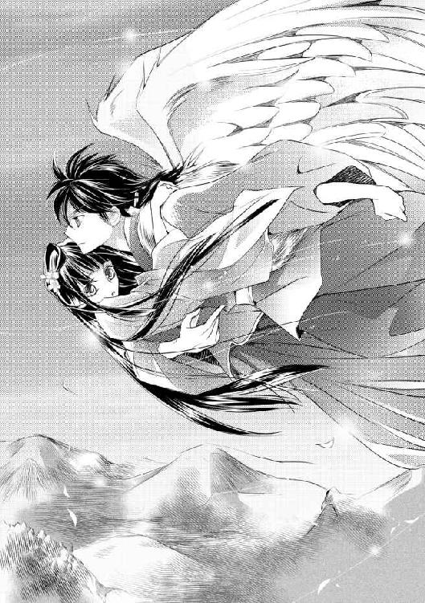
「じゃあ、何がいけないの？」
「会わせる顔がないから逃げてるっつーのが気に食わねぇ。伽楽のこと、好きなんだろ？」
「う......」
羽矢彦には、伽楽のことは神であるということだけを避けて話した。確かに、好きになってはいけない相手だから避けているのだと言えば、幼稚だと思われても仕方ない。
「俺にはよくわかんねーけど、好きになったらいけない相手なんているのか？」
「......いるわよ」
「たとえば、俺が皇女を好きになったらいけないわけ？」
「えぇっ!?」
「......たとえばの話だよ。ていうか、そんなに動かれると落としそうになるんだけど」
緋那生を抱きしめる腕にさらに力を込められ、思わずその腕にしがみついた。
「呆れても怒ってもいいから、落とさないで」
「落とさねーって」
羽矢彦はばかにするように鼻で笑ってから、やや声を低めた。
「まあ、さっきのはたとえだけどさ。身分が違かろうと、誰に反対されようと、祝言を挙げられるような関係じゃなかろうと、好きになるのは自由なんじゃないかと思ったんだよ。そりゃ、片想いで終わる恋じゃ切ないだろうけどさ」
「片想い......」
その言葉は不思議と新鮮に響き、緋那生の心をくすぐった。
（勝手に好きでいるだけなら、わたしにも許されるの......？）
そう思って初めて、伽楽はこれからどうするつもりなのだろうかと気になり始めた。
もし緋那生に春を呼ぶことができたら、その後は？
そもそも、伽楽は皇族の様子をその目で確かめるために来たと言っていた。
その結果、伽楽が皇族に呆れ、見捨てるつもりになってしまったら？
逆に、何かがきっかけで伽楽の皇族を見る目を変えることができたら？
それによって陽ノ国がどうなってしまうかは見当もつかないけれど、どんな結果になっても伽楽は陽ノ宮を去る以外にないだろうと思った。
（伽楽が、いなくなってしまう......）
会えなくなる。きっと、永遠に。
そう思うと、胸が締めつけられた。そうなったとき、緋那生はこの想いを秘めたままでいられるだろうか。耐えられるだろうか。
「ほら、着いたぜ」
羽矢彦に強引に降ろされた場所は、緋那生の私室ではなかった。
「えっ、どうして？」
「皇女がごちゃごちゃ悩んでるみたいだったから。俺、そういうの面倒くさい」
じゃあなと一声を残して、羽矢彦は翼をばさりと広げ、颯爽と飛んで行ってしまった。
「......だからって、何もこんなところに置いていかなくても」
緋那生が泣きそうになるのも無理はない。
置いていかれたのは、幻術が行き渡った伽楽の私室だった。相変わらず草花が生い茂り、鳥のさえずりや川のせせらぎが聞こえている。
開いていたらしい窓から入ったので、回廊へ続く扉の位置がわからない。下手に動けば、迷子になってしまいそうだ。
（迷子、というか、遭難......かしら）
けれど、じっとしているわけにもいかない。
羽矢彦と話して、伽楽から逃げたい気持ちは少しなくなった。とはいえ心の準備はできていないし、何より伽楽とて緋那生に会おうとはしていないのだ。こんなところで唐突に顔を合わせるわけにはいかない。
（羽矢彦ったら、いくらなんでも配慮が足りないわ）
面倒くさいと言いながら、緋那生の背中を押してくれたのかもしれないけれど。今は、その気持ちに感謝する余裕はなかった。
「とにかく、出口を探さないと......」
窓の位置から、適当にあたりをつけるしかない。そう思って自分の身の丈ほどもある草をかき分けた、その瞬間――。
「――あ」
あんなに避けていたのに。
まだ、どんな顔をするべきか決めていないのに。
「緋那生」
皇女である自分を呼び捨てにするその声は、緋那生の胸を喜びで満たした。
「伽楽......会っちゃった......」
会ってしまった。しかも、ふたりきりで。
緋那生の唇から漏れた言葉に、伽楽は眉を寄せて返した。
「やはり、避けられていたのだな」
寂しげに。切なげに。けれど、伽楽はふっと笑う。
「いや、それは俺も同じだ。あなたに会わせる顔がなかった。もともと騙すつもりでここに来たのに、おかしな話だが」
ぼそぼそと話す伽楽は、そんな自分自身に戸惑っているようにも見えた。
人間離れした美貌の持ち主ではあるけれど、そんな姿はどこか人間くさく映る。
そしてそんな伽楽が、とても愛おしかった。
「――会いたかった、です」
本当は、すごく。
ひとたび本心を言の葉にのせてしまうと、もう感情を抑えきれなくなった。
伽楽の瞳が、見開かれる。驚いているように見えた。
神にも見えないもの、読めないものがあるのかと思うと、少し嬉しくなる。
「俺も、あなたの顔が見たかった」
す、と手を差しのべられ、緋那生は生い茂る草を踏みしめ、歩み寄った。あともう少しで手に届く――そう思った次の瞬間には、力強く抱き寄せられていた。
「――ふ......っ」
息ができないくらいに、強く。
（あ......）
聞こえる、と思った。
伽楽の――胸の鼓動。
それは、人と同じ速さで。
それは、人と同じ強さで。
もっと近くで聞きたくて、緋那生はより強く顔を押しつけた。
「俺は、どうしてしまったのだろうな......」
独り言のような伽楽の言葉に、緋那生は小さく首を振った。
「今は考えないでください。わたしも、あれこれ悩むのはやめました」
先ほどまでおかしくなりそうなほど悩んでいたくせに、緋那生はそんなことを口にした。
「そうだな」
伽楽は緋那生の背をさすり、もう片方の手で頭を撫でた。
緋那生はそれが心地よくて、だから自分も伽楽の背に回した手で、彼の髪に触れた。猫の尾を思わせる白い毛先は、やわらかく緋那生の指に絡んだ。
「抜くなよ」
いたずらっぽく耳元に囁かれ、緋那生はくすりと笑った。
「そんなことしません。こんなに綺麗な髪ですもの。わたしが守ります」
「ああ。俺にとって、髪は命だからな」
そんなことを真面目に言う伽楽がおかしくて、緋那生はふふっと笑った。
「だが――」
伽楽は言葉を切って、緋那生を離した。
近い距離で見つめ合うのは、互いのぬくもりを感じるほど密着するより気恥ずかしい。
緋那生の潤んだ瞳が見上げた先で、伽楽は微笑んだ。
「あなたのためなら、この髪をも切りましょう」
その、妙に大げさな言い方がおかしくて、緋那生はまた笑った。
「わたしも――あなたのためなら、この髪を切れるわ」
「俺は、髪よりもあなたの唇がほしい」
伽楽はさらりとそう言うと、屈み込んで緋那生の唇に自分の唇をそっと重ねた。
（――熱い）
自分が熱いのか、伽楽が熱いのか。よくわからなくなるほど、触れ合った部分が溶け合うように緋那生は感じた。
「......んっ」
息苦しさから逃れようと緋那生が伽楽の胸を押すと、唇は少しだけ離れて。
――またすぐに、重ねられた。
幾度逃れようとしても、その度にわずかな呼吸の間だけを与えられて、くちづけは繰り返される。そしてそれは次第に深くなり、緋那生の吐息ごと呑み込んでいく。
頭の芯が、溶けてしまいそうに熱い。胸の奥がひどく疼いて、何も考えられなくなった。
ぼうっとしているうちに力が抜けてしまっていたのか、気がつけば伽楽に横抱きにされていた。浮いていた身体はやがて、やわらかい茵の上に寝かされる。
伽楽に押し倒された姿勢で、緋那生は何かを言おうと口を開きかけ――その唇に、伽楽の人差し指が押し当てられた。
――何も言わないで。
そういう意味だろうと緋那生は悟った。
互いの想いは、口に出してはいけない。
言の葉は、強い力を持ってしまうから。
神である伽楽と、皇女である緋那生には、たとえば夫婦のように、名や形のある関係は許されていないから。
「......伽楽」
だから緋那生は、真名ではない、その仮初めの名に想いを込めた。それが、緋那生に許された最大限の言霊。
「緋那生」
伽楽は、緋那生の頬を伝う一筋の涙を指先で拭った。そうされることでさらにあふれる涙を、今度は唇で、舌先で吸い取られていく。
そうしているうちに唇は再び緋那生の唇をとらえ、かと思うと首筋をなぞられ、稽古着の合わせ目から侵入される。
初めての場所に触れられる度に緋那生の身体はびくりと跳ねたが、抵抗はしなかった。反射的に身をよじった次の瞬間には、心地よいのか悪いのかわからないような感覚がぞくりと背を這い、それから甘い疼きが身体の中心を襲うから。
緋那生が無意識のうちにその感覚を求めるようになったところで、伽楽は動きを止めた。
「......伽楽？」
涙を滲ませながら目を開けると、そこには伽楽の思い詰めたような顔があった。
緋那生の肌に触れたことを悔やんでいるのかとも思ったけれど、それも少し違う気がした。
伽楽は必死に何かを押し殺しているようだった。
片手で頭を抱え、冷静になろうとするように首を振る。そして、唐突に言った。
「緋那生。俺には、あなたを救う術がある」
「......え？」
唐突に告げられ、緋那生は言葉を呑み込んだ。
「俺がこの地を去れば、陽ノ国は未来を失う。そうなる前に、あなたひとりなら連れて行くことも可能だ」
「連れて、行く？」
どこへ？
そう問いたかったけれど、口にはしなかった。その必要がなかったからだ。
緋那生はすぅっと息を吸い、胸を張って答えた。
「それには及びません。わたしひとりが救われることなど、望んでおりません」
「神がいなくなった大地がどうなるのか知らないから、そう思うだけだ」
「知りません。けれど、知ったところで変わりません」
「......虚勢だ。もしくは、偽善だ」
強い視線で射貫かれても、緋那生の心に迷いはなかった。静かに見つめ返し、問い返す。
「伽楽が陽ノ宮を去らなかったのは、わたしに希望を見出したからではないのですか」
伽楽が息を呑むのが、気配でわかった。
「――そうか......そうだな。それが今のあなただ」
「はい」
緋那生が微笑むと、伽楽も笑った。どこか吹っ切れたような、晴れやかな顔だった。
「俺は、決めた」
そう宣言しておもむろに身を起こし、こぶしを握る。
「心を決める。俺は、あなたの望む道を選ぼう」
「......それって、どういう......？」
意味がわからないまま、緋那生も半身を起こす。起き上がると急に恥ずかしくなり、慌ててはだけた襟元をぎゅっと握りしめた。
伽楽は曖昧に笑って、恥じらう緋那生の頭に手をのせた。小さな童にするように、軽くぽんぽんとたたいて、ふと表情を緩めた。
「あなたを独り占めするにはまだ早い、ということだ」
「え......？」
独り占め、という言葉に反応して胸を高鳴らせる緋那生に対し、伽楽の瞳はどこか遠くを見やる。
「俺からすれば人の生は儚くも短い――が、人にとってその時間こそがすべて。奪うなら、その終わりが近づいた頃でも遅くはない」
「......なおさらわからないのですが」
文句を言う緋那生の鼻先に、くすりと笑った伽楽が軽くくちづけた。
「今はわからずともよい」
「はい......」
軽い触れあいすら嬉しくて、くすぐったくて、緋那生は真っ赤になってうつむいた。
そんな緋那生を見て、伽楽はくすくす笑っている。
（......はぐらかされたわ......）
この場は、降参するしかないらしい。
悔しさまで甘く感じられてしまうなんて、恋とはなんと恐ろしいものだろう。
緋那生の舞の稽古が順調に進む一方で、めぐらない季節はいよいよ深刻化していった。
「皇女様の舞は、あと数日のうちに完成するでしょう」
幻術によって草花に囲まれた部屋で、伽楽の前に正座をした真比十が告げた。
「そうか」
答える伽楽は、四角張った長椅子に寝そべったまま真比十を見下ろす。
「......なぜ、そんなに恐い顔をしている？」
真比十の唇は強く引き結ばれ、こめかみのあたりはぴくぴくと引きつっていた。
「申し上げても？」
「そんな顔で睨むくらいなら、さっさと言え」
鬱陶しい。
この朴念仁がほぼ一日中緋那生に付きっきりで稽古をしているのかと思うと、それだけではらわたが煮えくり返りそうだ。自分はまともな稽古すらつけていなかったことは、この際、棚に上げておく。
そんな人間くさいことを考えながら、伽楽も真比十を睨み返した。
「......本当に、皇女様が春迎えの舞を舞えば、季節はめぐるのですか」
率直に問われ、伽楽はふいと顔をそむけた。
「俺は、そんなことはひとことも言っていない」
ただ、あの巫女たちの舞では何の効果もない。緋那生が舞うのなら、意味はある。
そういうようなことを言っただけだ。
「では、舞が完成しても、春を呼ばないおつもりですか」
「つもり......か。さあ、どうかな」
「はぐらかさないでください！」
めずらしく真比十は大声を上げ、立ち上がり伽楽に詰め寄った。
「このままでいいと思ってらっしゃるのですか？ 民はすでに苦しんでいる。皇女様もそのことに胸を痛めていらっしゃるし、いずれ彼女自身も苦しむことになるのですよ」
緋那生の話を持ち出され、伽楽は顔を引きつらせた。
「そんなこと......おまえに言われんでもわかっている」
「でしたら、お答えください。伽楽様は、今の陽天皇をはじめ、皇族たちの不信仰ぶりに腹を立てていらっしゃる。それは、皇女様が春迎えの舞を舞っただけで解消されるのでしょうか」
真比十の鬼気迫る様子に、伽楽もようやく半身を起こした。
そろそろ真実を伝える頃合いかもしれない。
今までは、人の世界がどうなろうと、口出しをするつもりはなかった。言い換えれば、人が変わろうとしないのであれば、見捨てるつもりでいた。
――だが、今は少し、状況が変わった。
良くも悪くも純粋すぎた緋那生が世を知り、彼女なりに何ができるかを模索をしている。
そして真比十には、こうして真っ向から神に対峙する強さがある。誠実な人間でなければ、こうして伽楽の目を真っ直ぐに見ることはできない。
「俺の気持ちが変わるのかと問われれば、否、としか答えられんな」
伽楽が答えると、真比十の目が見開かれた。
「......っ、では、なぜ皇女様に春迎えの舞を？」
「少しは助けになると思ったからだ。ただ、それだけでは足りないだけで」
「足りない......？」
「来い。説明してやろう」
伽楽はそう言って、優雅に立ち上がった。
＊
稽古疲れで早々に眠る支度を始めていた緋那生は、伽楽からの呼び出しと聞き、一瞬で目が覚めた。少し迷って橙ではなく桃色の領巾を身にまとい、急いだ先には、伽楽だけでなく、真比十の姿もあった。
「俺だけじゃなくて、すまないね」
伽楽に心を見透かされ、緋那生は耳まで赤く染めた。
「いいえっ。ただ、真比十もこの部屋を使っていることを忘れてて......」
つい先日、この場所で伽楽に肌を触れられたことを思い出し、さらに赤くなってしまう。あんなところを誰かに見られていたらと思うと、気を失いそうになる。
「今日は、二人に大事な話をしようと思う」
「え......」
伽楽の口ぶりは、いつになく真面目な響きを含んでいた。
「目を閉じて」
緋那生は真比十と並ばされ、目の前に立つ伽楽に手を翳された。ちらりと覗き見た真比十が素直に目を閉じるのを見て、緋那生も慌てて目を閉じる。
と、頭上に熱を感じた。伽楽のてのひらだ。不思議と、ほっとする。
そう緋那生が思った次の瞬間には、その熱が遠のいた。身体がひんやりとした空気に触れ、思わず身震いする。
「もう開けていい」
ぽんぽんと頭を撫でられ、緋那生はそっと目を開けた。
「............え――？」
「ここは......っ、伽楽様!?」
隣の真比十も驚くとおり、ここはもう伽楽の幻術の行き届いた私室でもなく、陽ノ宮の中ですらなかった。太い注連縄が張られ、静謐な空気が漂っている。白い御幣が垂れ下がり、その下には台座が置かれていた。
冷えるけれど、どこか守られているような気がするこの場所は。
「祠......？」
緋那生の唇から漏れた声に、伽楽がうなずいた。
「そうだ」
つまり、十六歳の誕生日に緋那生が辿り着けなかった神座が、ここなのだ。
「また戻ってくるはめになるとは......」
そして、真比十がしばらく閉じ込められていた場所。彼は思い出したくもないといった様子で歯噛みしている。
「安心しなさい。もう閉じ込めないから」
「当たり前です」
真比十は吐き捨てるように言ってから、伽楽を仰いだ。
「それで、大事な話とは？」
「......真比十。この鏡が何かわかるか？」
伽楽は神座に飾られた、銅鏡を持ち上げた。
「それは......」
真比十が覗き込む隣で、緋那生も覗き見る。相当古いものなのか、表面はくすんでいて自分の顔は映らなかった。
「神器のひとつ、ですよね」
真比十の言葉に、伽楽は鷹揚にうなずく。
「そうだ。もう忘れてしまったくらいずっと昔からここに奉られているもので、世を映す鏡と言われている」
「その話は、聞いたことがあります」
真比十はつぶやくように言ってから、よろけるように後ずさった。
「ですが、その鏡がなぜ、こんなにも曇っているのです？」
その真比十の言葉に、緋那生ははっとした。
確かに、鏡には傷ひとつない。埃が積もっているのでもない。表面は磨いたようにつるつるとしているのに、まるで充満した煙を映しているかのように、曇っているのだ。
「これが、今の世だからだ」
伽楽はそう切り出し、落ち着いた声で話し始めた。
「鏡が曇り始めたのは、もう何十年も前からだ。......そう、ちょうど前の天皇が位についた頃からだな」
「前の......？」
緋那生の父親が天皇になる前の天皇といえば、現天皇の伯父にあたる人物だ。緋那生は幼かったから、彼がどのような政を執り行ったのかを知らない。そして彼が天皇についたことで、世の中がどう変わったのかも知らない。
「その頃から陽ノ国の民の間には、不満が生まれ始めた。権力の大きさによって、恩恵を受けられる一族と、そうでない一族に分かれたからだ」
「あ......」
緋那生には、思い当たる節があった。
保存食の配給――伽楽は、それがすべての民に平等に行き渡っていないことを確信している様子だった。
「世は乱れ、皇族たちは贅沢と怠慢を覚えた。だから俺は、皇族に神気を授けるのをやめた」
佐和比の言ったとおりだった。ここ最近では、神気を授かった皇族はいないのだと。皆、授かったていで祠から出てくるだけなのだと。
「そんな、ことが......」
なんとも言えぬ虚無感が、緋那生を襲う。
「ちなみにボウは、俺がこの鏡を精霊化したものだ」
伽楽が両手を開くと、そこにはぐったりしたボウがのせられていた。
「ボウ......っ」
「祠から離れてしまえば鏡の曇り加減がわからなくなるからと、陽ノ宮に連れて行くためにボウを生み出したのだ。精霊化した頃は俺の神気で少しは元気だったものの、やはり曇りゆく鏡の力に引っ張られてしまったな」
ボウの息は荒く、小さな腹が忙しく上下している。このかわいそうなほどに疲弊したボウの姿こそが、世を映す鏡の曇り具合を表しているのだ。
「鏡を再び輝かせることができなければ、季節はめぐらない」
「......――え」
伽楽の言葉が、緋那生にはすぐには理解できなかった。
代わりに、真比十が疑問を口にする。
「どういう意味ですか。季節を止めているのは、その鏡だと？」
「そうだ。この鏡は世を映しながら、季節をめぐらす役割を担っている」
「曇っているから、春を呼ぶ力がないと......？」
伽楽は小さくうなずいた。
「おまえが言ったような、皇族に失望した俺が、その腹いせに季節を止めている、ということはない。俺の力だけでは、どうにもならないことなのだ」
「まさか、そんなことは――」
「春の精を呼び起こそうとしたが、声は届かなかった。神は人の心を動かすことはできぬ。人の心が季節を止めているのであれば、俺に為す術はない」
ため息が、神座に落ちる。
「この目で見て救いの余地があれば、助言くらいは与えてやってもいいとは思っていたが」
陽天皇には、助言を素直に聞く耳はないだろう。
緋那生はようやく口を開いた。
「では、春迎えの舞は？ あれは、何のために？」
「清らかな心を神への祈りに込められる者が舞えば、鏡が曇りゆくのを少しは遅らせることができる。――だが、それだけでは春は来ない」
伽楽に断言され、緋那生は目を伏せた。
（春は来ない――）
自分の力はとるに足らないものなのだと、思い知らされる。
そんな緋那生に目を落とし、伽楽はやわらかい声音で告げた。
「鏡を再び輝かせるためには、皇族たちが心を入れ替えるほかない」
「はい......」
「人の心は、神には動かせない。だが、人には人の心を動かす力があるとは思わないか？」
伽楽の細い指が、緋那生の前髪をくしゃりと撫でた。
「わたしにできることが、他にもあるでしょうか」
「考えてみるといい」
伽楽の口元が緩み、緋那生もつられて笑顔になった。
本当なら笑っている場合ではないのだけれど、伽楽に背中を押してもらえることは、緋那生にとっての喜びだから。
「私もお手伝い致しましょう」
「ありがとう、真比十」
真比十の申し出は、正直に心強かった。今の緋那生では、まだ世間知らずが過ぎる。
けれど、荷が重いとは思わなかった。一人前とは認められていないけれど、自分はこの国の皇女なのだ。
「手伝うのはいいが、舞の稽古以外で二人きりになるのは、この俺が許さんからな」
伽楽に胸を小突かれると、真比十はめずらしく不敵な笑みを浮かべた。
「ということは、伽楽様も手伝ってくださるということですね？」
「おまえのためではないぞ」
苦い顔で歯切れ悪く答える伽楽に、緋那生は微笑んだ。
伽楽も手を貸してくれるのなら、これ以上頼もしいことはない。
＊
自分にできうる最大限の努力をしたい。
そう思った緋那生は、この日も朝から悲痛な声を上げていた。
「お願い！ どうしても必要なの。この国のためなのよ！」
「何度も申し上げましたように、部外者には閲覧禁止となっておりまして――」
「わたしは皇女よ。部外者じゃないわ」
「申し訳ございませんが、規則ですので」
ばたん、と目の前で扉が閉められてしまい、緋那生は声を振り絞った。
「待って！ 話くらい聞いて！ 父上がわたしに見せるなとおっしゃっているの？」
その問いに返答はこず、緋那生はため息を落とした。保存食の記録を見せてほしいと訴えては門前払いをくらう――もう何度同じ目に遭ったことか。
落胆し、とぼとぼと歩いているうちに、伽楽の部屋に向かう回廊へと出た。
（伽楽――）
ぎゅうっと、胸が苦しくなるほどの想いが募る。
けれど、強く首を振ってきびすを返した。
会いたいけれど、今はその時間すら惜しい。もう一度天皇への目通りの申請をしておきたいし、舞の稽古もある。
そして伽楽も、緋那生の私室にやってくることも、触れることすらなくなっていた。
（まだ早い......か）
ときどき、忙しくしている合間に、ふと考えてしまうことがある。
あの日、伽楽は急に緋那生を求めるのをやめた。そして、言った。
独り占めするには、まだ早い――と。
あれは、どういう意味だったのだろう。思い出すと、胸がよじれるような複雑な感情に揺さぶられた。伽楽が何を考えているのかわからない。けれど、今はそれどころではない。
ぐるぐると思考をめぐらせながら私室へと戻ると、ばんばんと窓をたたく音がした。
「皇女！ おい、皇女ってば！」
「羽矢彦!?」
急いで窓を開けると、翼を広げた羽矢彦の姿があった。よほど急ぎの用事なのだろう。羽矢彦はめずらしく息切れしていた。
「助けてくれ。甥っ子が死んじまいそうなんだよ！」
「落ち着いて。どういうこと？」
「病気なのに、薬草がどこにも生えてないんだ......！」
季節がめぐらないせいだ。
緋那生は急いで支度をした。
「わかったわ。伽楽を呼んでくるから、少し待ってて」
「頼むよ、皇女！」
背中で声を受け、緋那生は部屋を飛び出した。
許可を得ずに外出することに、もう躊躇いはなかった。
伽楽と真比十とともに鳥ノ一族の里に辿り着くと、緋那生の胸はちくりと痛んだ。
以前ここを訪れた際と、現状は何も変わっていない。彼らを助けられないくせに、皇女である自分が二度も足を踏み入れることは、民には快く思われないだろう。実際、自分を見る民たちの眼差しは冷ややかだ。
彼らに視線を向けられると怯みそうになるけれど、今は救えるかもしれない子どもの命が大事だ。
「羽矢彦、案内して」
緋那生は意を決して、顔を上げた。
「義姉さん、連れてきたぞ」
病気の子どもは、高床式の小さな小屋で眠っていた。まだ十歳過ぎくらいの男の子だった。母親と思しき女性は、上衣のすべてを子どもに掛けてやってしまったのか、薄着で震えている。
「呼吸が苦しそうだな」
伽楽はそうつぶやくと、目を閉じて両手を合わせた。すると次第に、彼の全身を淡い光の粒子が覆い始める。
その間に真比十は持参した炭を火桶に落とし、火をおこし始める。
緋那生は羽矢彦にもらった獣の皮でできた上衣を脱ぎ、母親の肩から掛けてやった。
「皇女様......ありがとうございます」
「お礼なら羽矢彦に言って」
自分にできることがこれくらいなのだと思うと、恥ずかしくて礼など受けられなかった。
伽楽の様子を窺うと、全身を覆っていた光の粒子は合わせた両手へと集まっていた。ふっと伽楽が息を吹き込むと、鮮やかな緑色をした植物が、まるで生き物のようにてのひらの間から現れた。
伽楽は、わさわさした植物をそのまま真比十に渡した。
「あとはよろしく」
「かしこまりました」
真比十は、これも持参したと思われるすり鉢を取り出し、薬草をすりつぶし始める。
伽楽が外に出るのを見て、緋那生は追いかけた。
「伽楽」
「......力を貸してくれるか？」
「わたしにできることが？」
「ああ」
伽楽は薄く微笑むと、緋那生の手を取った。そのまま手をつないだ状態で、伽楽は雪に覆われた大地を見下ろす。
「――精霊たちよ。ひととき、目を覚まそうぞ」
緋那生が何が起こるのかと見守っていると、やがて雪の大地にぼこぼこと穴が開き始めた。
「――！」
「このとおり、皇女も呼んでいる」
つないだ手を持ち上げられ、緋那生は慌てて口を開いた。
「ええと......っ、精霊たち！ お願い、目を覚まして――！」
これでいいの？ という思いで伽楽を見上げると、伽楽は満足そうにうなずいてくれた。
すると、開いた穴からふわふわと光の粒子が舞い上がってきた。
「あれは......種？」
光の中には植物の種のようなものが浮かんでいて、それらは次第に芽を出し、葉を繁らせ、実を成した。それぞれが野菜や果物の熟れた姿となり、伽楽の前に集まってくる。
「ありがとう。無理に起こしてすまなかったな」
伽楽に声をかけられた粒子たちは、喜ぶようにくるくると空中を舞うと、また雪の下へと戻っていった。
「......今のは？」
「植物に宿る精霊たちだ。冬は眠っているから、無理やり起こして力を貸してもらった」
「そんなことができるんですか？ だったら――」
「もう、しばらくはできない。精霊たちは力を失いつつある」
伽楽に首を振られ、一瞬目を輝かせた緋那生は、しゅんと肩を落とした。
それに、と伽楽は言葉を重ねる。
「こんなやり方は、根本的な解決にはならぬ」
「......おっしゃるとおりです」
民が困らないほどの食糧があればいい......問題は、そういうことではないのだ。
小屋の中へと戻ると、薬草が効いたのか、眠る子どもの顔色はだいぶ良くなっていた。母親の顔にも安堵の色が浮かんでいた。
「呼吸も落ち着いたようです」
いつの間にか玄米粥を作っていたらしい真比十が、伽楽と緋那生を見て表情を緩ませた。椀の一つを子どもの母親へと渡し、食べるよう促している。
緋那生は、部屋の隅であぐらをかいている羽矢彦のもとへと急いだ。
「羽矢彦。伽楽が野菜や果物を用意してくれたわ。鳥ノ一族の皆に配りたいのだけど」
「本当か？ こんな状況でいったい、どこから持ってきたっていうんだよ？」
「ええと、それは......」
「ああ、いいや。あの伽楽ってやつ。ただ人じゃない感じだもんな。関わると面倒くさそうだし、聞かないことにする」
そう言って、羽矢彦は「ありがとな」と言うと、すぐに立ち上がり翼を広げた。
「男手は充分にあるから、あとは俺たちでやるよ」
「ありがとう」
緋那生はほっとすると同時に、これでは何も解決しないという伽楽の言葉を思い出した。
このままでは、いけない。
「羽矢彦の話では、鳥ノ一族への待遇が変わったのは、父上の代からということよね。何があったのかはわからないけど、一度わたしが話を聞いてみるわ」
「そうですね......。私も、鳥ノ一族は皇族と契約しているのだから、むしろ良い待遇を受けているのだと思ってました」
真比十も神妙な顔になり、強くうなずく。
鳥ノ一族は背に大きな翼を持っており、見た目は少し違っているかもしれないけれど、緋那生たちと同じ人間だ。差別は許されない。
「早速、父上に――」
「お待ちください」
立ち上がりかけた緋那生を言葉で制したのは、病気の子どもの母親だった。驚いて見ると、彼女は何やら思い詰めたような顔をしていた。
「まだ何か......？」
「いいえ。陽天皇様の話をされていたので......もしかしたら、お話ししておいた方が良いかと思いまして」
「どういうこと？」
詰め寄る緋那生に、母親――由洲良と名乗った――は躊躇いながらも、口を開いた。
「鳥ノ一族が現陽天皇様に蔑まれているのは、私のせいなのです」
――その昔。
まだ緋那生も佐和比も生まれる前のこと。
天皇になる前の緋那生の父親と由洲良は、恋仲にあった。
陽天皇は結婚をも口にしてくれていたが、それは叶わなかったという。
「ある日、陽ノ宮から役人が来て、もう会うなと言われました。皇子様にはすでに決まったお相手がいらっしゃるからと......どうせ金銭目当てで皇子様をたぶらかしたのだろうと言われ、銅銭を投げつけられました」
由洲良は声を詰まらせ、首を振る。
「もちろん、受け取りませんでしたが」
それはそうだろう。受け取ってしまえば、役人の言葉を認めることになる。
「もともと、結婚なんて無理だと私は思っていました。その頃は次の天皇になることが決まっていたわけではありませんが、それでも身分が違いすぎましたし」
由洲良は、眠っている我が子の額を愛おしげに撫でた。今が幸せだから、もう古傷は癒えたのだと言いたげに。
緋那生は伽楽を仰いだ。なぜだか、伽楽がどんな表情で話を聞いているのかが無性に気になって。
伽楽はこの話を知っていたのだろうか。何やら遠い目をしていて、上の空のようにも見える。
「でもそれだけでは、あなたのせいだとは言えないのでは？」
真比十の問いに、由洲良は泣きそうな顔になってうなずいた。
「むしろ、お話はここからです。――私は、皇子様を危うく死なせてしまうところだったのです」
由洲良の話によると、現陽天皇はその後、由洲良に何度も会いに来たのだという。
役人とのやりとりも、自分の縁談話をも知らない様子の彼は由洲良を追いかけ、もともと身分差に悩んでいた由洲良は、彼から逃げた。
翼を持つ由洲良が逃げるのは容易く、それでも追いかけ続けた皇子は、その途中で崖から落ち、大怪我を負ったのだという。
顔に、身体に負った傷は、痕こそ残れど痛みは残らない。
けれど心に負った傷は、今も生々しく疼いている――。
「すぐに里に連れ帰り治療を試みましたが、命が危険な状態が続いて――その後、私の仲間が陽ノ宮に連れて行ってくれました」
それ以来、会っていないのだという。
その長い話を、緋那生は複雑な思いで聞き入っていた。陽天皇が由洲良と結ばれていたら、緋那生はこの世に存在していないのだ。
けれど、引き裂かれた二人の悲しみに心を添わせれば、ひどく胸が痛んだ。
「皇子様が天皇の位に就かれてすぐ、鳥ノ一族への扱いが変わりました。私が恨みを買ったからに違いありませんし、仲間もこのことを知っていますが、誰も私を責めませんでした」
由洲良がそこまで話したところで、眠っていた子どもが目を覚ました。子どもには聞かせたくない話なのだろう。由洲良は緋那生に頭を下げると、口を閉ざした。
＊
陽ノ宮に戻ってきた緋那生は、すぐに采女につかまった。
「どちらに行かれてたのです？ まさかまた外に出られていたのではないでしょうね？ もうすぐお目通りのお時間ですわよ」
「父上へのお目通りが叶ったの？」
采女の苦言を無視し、緋那生は目を輝かせた。
忙しい父親には、皇女である緋那生でも好きなときに会えるわけではない。この間のように、朝政の直後を狙って突撃する方法は避け、きちんと時間を取ってもらえるよう、正式な段取りで目通りを求めていたのだ。
こんなに早く叶うとは思っていなかったけれど、心の準備は万端だ。
「早く、お着替えを」
外出して少し汚れてしまった衣を采女たちに脱がされながら、緋那生は自分の頬をたたいて気合いを入れた。
急いで朝堂に向かうと、そこには伽楽が待っていた。
「伽楽？」
「同席してもいいかな」
見れば、伽楽は銅鏡を小脇に抱えていた。
「鏡......祠から持ってきたのですか？」
「ああ」
伽楽に曇った面を見せられ、緋那生はそれを凝視した。現実を受け止めるために。
「鏡の曇りの変化を観察するため、ですよね」
「それと、陽天皇の反応を見るためだ」
それによっては、伽楽の意思は覆らないということだ。
緋那生が息を詰めて鏡を見つめていると、伽楽はやわらかく言葉を紡いだ。
「今の陽ノ国には守るべき理由がない――そう思っていたが、少々事情が変わったからな」
そう告げる伽楽の瞳は、まっすぐに緋那生を見据えている。
「まだ見捨てずに待ってくださること、本当にありがとうございます」
あらためて深々と下げようとした頭を、伽楽に顎に手を添えられ制された。
「礼はいらぬ。あなたが守りたいと思うものを、俺も守りたいと思った。......それだけだ」
顎に触れた伽楽の指は、するりと動いて緋那生の頬を撫でる。
「あなたの笑顔が見られるのなら、手を貸してやりたいと思ったのだ」
「伽楽......」
「もう一度、信じてみようと思う」
「陽天皇を？ わたしたち陽ノ国の皇族を？」
緋那生の問いに、伽楽は迷うように瞳を揺らした。
「人を――人は、変われるのだと」
＊
設えられた茵に両膝をつき、こうべを垂らして待っていると、やがて陽天皇が姿を現した。
予想どおりの不機嫌顔で、手にした木笏を苛々と逆の手にたたきつけながら。
「緋那生。無断で外に出ていたようだな。勝手な行動をとるのは、神気を授かってからにしたらどうなのだ」
いきなり小言から始まった。それは緋那生の反論を待たずに、さらに続けられる。
「皆は、春の花麗宴で緋那生皇女がお披露目されることを期待している。少しでも遅れたら、未熟な皇女と囁かれるのはおまえなのだぞ」
「わかっております」
恥をかかせるなという天皇の本音も、理解している。
変わらなければいけない。言いなりの人形から、意思を持つ人へと。そう言い聞かせ、緋那生は再び背筋を伸ばした。
「はい。鳥ノ一族の少年が病気だと聞き、薬草を届けに行きました」
「勝手に宮から出るな。次また同じようなことがあれば、おまえ付きの鳥ノ一族の者を出入り禁止にする」
「羽矢彦はわたしの友人です。それと、わたしは、学べるものがあると判断できれば、わたしの意志で外に出ようと思います」
いつにない娘の強い口調に、陽天皇は一瞬、絶句した。それから、ちらりと伽楽を一瞥する。
「......どうした、緋那生？ その男に何か吹き込まれたのか？」
「違います」
「いや、そうに違いない。すぐに別の舞師を呼んで――」
「父上！ 今日は、わたしの話を聞いてください！」
「............っ」
陽天皇は緋那生の大声に押され、口を開けたまま制止した。緋那生自身、父親に向かって大声を出したのは初めてで、心臓がばくばく鳴った。
「父上にお聞きしたいことがあります。保存食の配給は、陽ノ国すべての民に行き届いていますか？ 一人あたりの量が偏っていたり、届いていない一族があったりはしませんか？」
唖然とした顔のままの父親をじっと見つめている間、緊張で顔が引きつりそうだった。伽楽の顔を見たかったけれど、我慢した。
陽天皇は我に返ったのか、大きく息を吐き出すと、片手で頭を押さえた。
「......おまえがそんなことを気にする必要はない」
「ですが」
「必要なところに、必要な量を届けている。それでいいだろう」
曖昧な言い方は、完全に緋那生を子ども扱いしていた。今までの緋那生ならそれで納得していたかもしれないが、今はこれで引き下がるわけにはいかない。
「鳥ノ一族には、行き渡っていませんでした」
この目で見てきた、という事実は、何よりも説得力があるはずだ。案の定、その一言は陽天皇の顔色を変えた。
舌打ちでもしたそうに顔を歪めると、頬の傷まで不快そうに歪んだ。
「鳥ノ一族など、我が民ではない」
「いいえ。陽ノ国の大事な民です。わたしたちと同じ人間です」
本当は、わかっているはず。一度は愛したことがあるのなら。
そうは思っていても、こうして目の前で憎悪の色を見せられると、少し怯む。
陽天皇は背を丸め、空を睨んだ。
「背に翼など生やしたあやつらは、人の心など持ち合わせておらぬ」
「そんなこと......っ」
「あの一族の女は、男から金銭を巻き上げ、それができなければ相手を殺そうとまでするような、卑劣なやつらだ。人の姿をしているのは、人を騙すために他ならん」
「父上......」
誰のことを言っているのかは、明白だった。
やはり陽天皇は、皇子だった頃の傷が――身体の傷は治っても、心の傷はまだ癒えていないのだ。
緋那生は身を乗り出した。
「それは誤解です、父上。由洲良は父上のことを――」
「その名を口にするな！ 耳が穢れる！」
陽天皇は本気でそう思っているのか、耳を塞いで立ち上がると、足早に出て行こうとする。
「父上！」
追いかけようと立ち上がったところで、緋那生は現れた武官たちに取り押さえられた。
「皇女様、お時間です」
「まだ話は終わってないわ。父上！」
「皇女様！」
強く腕をつかまれたところで、伽楽が割って入った。
「乱暴なことはするな。――緋那生様、出直しましょう」
表向きは舞師として仕えている伽楽は、丁寧な口調で告げた。
「でも......っ」
まだ、あきらめたくなかった。自分の力がここまでだと思いたくなかった。
「失礼ながら、今の陽天皇にあなたの声は届かないとお見受けします」
そう言って伽楽が緋那生に見せた鏡は、一層深い闇を湛えていた......。
陽天皇はしばらく緋那生と会ってくれないだろう。そう思うと、ため息がこぼれた。
ぽん、と頭に手をおかれ、顔を上げると伽楽と目が合った。
「人形の皇女とはもう呼べないな」
「伽楽......」
伽楽のやわらかい声音は、不思議なぬくもりを持って緋那生を包み込んだ。心が少し落ち着くと、気が緩んで泣きそうになる。それを隠すために、緋那生は伽楽の脚に頭をもたれかける。
久しぶりに、伽楽の私室を訪れていた。
緩やかに流れる川のほとりで、伽楽は岩に腰掛け、緋那生は彼の足下に座っている。
「頑張ってみたところで、結果が伴わなければ意味がありません」
「そんなことはない。鏡がかろうじて闇に染まりきっていないのは、緋那生があきらめていないからだ」
「......そうなのですか？」
「そうだ」
伽楽の手が、頭から髪をすべり、肩へと落ちる。その心地よさに身を預けながら、緋那生は伽楽の手に自分の手を重ねた。
「鏡が完全に曇ってしまったら......どうなるのでしょうか」
今まで、怖くて訊けなかったこと。
世を映す鏡は、神を、民を裏切った皇族たちに、何をもたらすのだろう。
「今は、知らなくていい」
伽楽のその返答に、緋那生は笑った。
今まで、世の中のことを知るべきだと悟ってきた伽楽に、知らなくていいと言われてしまった。少し、寂しい。
「ボウは？」
顔を上げると、手を引かれて伽楽の膝の上にのせられた。緋那生に触れることを避けていたように見えた伽楽だったけれど、今日は少し大胆だ。頑張った緋那生へのご褒美なのかもしれない。
伽楽の襟元から顔を出したボウは、ふんふんと鼻を動かすと緋那生のてのひらへと飛び移った。相変わらず元気はなさそうだけれど、緋那生に鼻をこすりつける仕草は可愛らしい。
「鏡がここにあるということは、もうボウの役目は終わってるということですか？」
もともと、ボウは鏡の精なのだ。
けれど、伽楽は首を振った。
「そんなことはない。この子は、俺の目でもある」
「目？」
「ボウがその目で見たものは、視覚情報として俺に届けられる」
伽楽はそうして陽ノ宮中に『目』を張りめぐらせていたのか――そう考えてから、ふと何かが引っかかった。
「わたし......ボウを預かってる時期がありましたよね」
「あったな」
（ボウとは、ずっと一緒にいたわよね）
たとえば――湯浴みのときも。
思い出して、緋那生は跳び上がった。
「みっっ、見ましたか!?」
「見たって、何を？」
「......わたしの」
「緋那生の？」
意地悪そうに顔を近づけてくる伽楽は、おそらく緋那生の言いたいことはわかっているのだろう。......つまり、見たのだ。
緋那生が真っ赤になって立ち上がろうとすると、強く手を引かれて膝の上に戻された。顔をそむけようとすれば、顎に手をかけられ向き合わされる。結果、余計に密着してしまい、緋那生は動けなくなった。
首筋に指を這わされ、ぞくりと震えが走る。
「そんなに潤んだ目をして......俺を誘ってるのか？」
「誘う、なんてそんな不埒な――」
「緋那生の湯浴み姿は、なかなかに色っぽかった」
「――！」
湯浴みをするときは、薄い衣一枚しかまとっておらず、濡れれば身体の線が浮き出てしまうどころか、すべて透けてしまう。
「見られていたと思うと、身体が疼く？」
「......っ、は、恥ずかしいだけです......っ」
「本当に？」
重ねて尋ねられた瞬間、久しぶりにぽわわんと音が聞こえた。色気が増すと桃の花が咲く、伽楽の神術だ。
「おや。身体は正直だね」
「なっ、何をおっしゃってるんですか！ わたしは恥じらっているだけです。そもそも、これって本当に色気が増してるんですか？ わたしをからかってるだけではないのですか？」
伽楽が陽ノ宮に来た目的は、皇族の様子を確認するためであって、緋那生の色気指導のためではなかったはずだ。
「本当だ。緋那生に色気が必要だったのは事実だからな」
伽楽の口元がにやりと緩むのを見て、緋那生はむくれた。
「ひどいです。季節がめぐらないことと比べれば、わたしに色気がないことなんて、まったく問題じゃないと思います」
「では、あのまま陽ノ宮で、何も知らず人形のように暮らしていたかったと？」
「......いいえ」
そういうわけではない。けれど、それと色気と何の関係があるのかがわからない。真面目に問い詰めたかったけれど、伽楽が面白がるようににやにやしていたため、やめた。
「あなたは可愛いな」
「からかわないでください」
緋那生が即座に言い返すと、伽楽は少し声を低めて言った。
「......本当に。さらってしまいたくなるほどに」
静かな言の葉は、風にのり、小川のせせらぎに紛れて消えた。
＊
春迎えの舞は、完成に迫っていた。
しゃん、しゃん、しゃん......鈴の音色が次第に小さくなり、緋那生は崩れるように両膝を落とした。
瞬間。身体には、どっと疲れが押し寄せる。
「皇女様、素晴らしい舞でした」
真比十に声をかけられ、ゆるゆると現実感が戻ってきた。
舞っている間は、何かに憑依されているような浮遊感を覚える緋那生は、舞を終えると、まるで全力疾走したあとのような疲労感に襲われるのだ。
「これなら、伽楽様にお披露目できそうですね」
「本当に？」
緋那生は目を輝かせた。
それならば、鏡が曇りゆくのを少しは防げるかもしれない。緋那生の胸は、期待にふくらんだ。それが根本的な解決にならないことは、わかっているけれど。
「皇女様は、お変わりになられた」
「......そう？ 伽楽の言うように、世の中を少し知ったからかしら」
「いいえ。それだけではありません」
真比十の目線が、緋那生の頭から裸足の爪先までを往復する。
「――皇女様の恋は、実られたようですね」
「え......っ」
はっきりと告げられ、緋那生は動揺を隠せなかった。
「あの、ええと......っ」
「驚きました。伽楽様がそのような感情をお持ちだとは......いいえ、あのお方もまた、お変わりになられました」
取り繕う間もなく、淡々と攻められてしまう。そうなると、認めざるを得なかった。
「..................そうみたい」
立場が違う。恋の相手にはなりえない。
そう告げたのは、真比十だ。
何を言われるだろうかと身構えていると、真比十は何やら小難しい顔で思案し始めた。
「なるほど......いやしかし、信じられませんね。神ともあろうお方が、まさか――」
ちらり。
疑い深い目が、緋那生に向けられる。
「しっ、信じられないって、何よ。まさか、わたしが騙されているとでも？」
「いいえ。そこまでは申しておりません」
「だったら何？」
「伽楽様は、ずっと陽ノ宮に滞在するおつもりではないでしょう。どうされるのです？」
「............う」
緋那生は返答に詰まった。
鏡が曇りきってしまうとどうなるのかは教えてもらえなかったし、曇りが晴れて春が来たら伽楽はどうするつもりなのかも、聞いていない。けれどおそらく、祠に戻ることになるのだろう。
「余計なお世話とは存じますが、少々ご心配申し上げたまでです」
「......つまり、伽楽がわたしを慈しむように接してくださるのは、陽ノ宮にいる間だけかもしれないと......」
緋那生がつぶやくようにこぼした言葉に、真比十は何も返してこなかった。
その無言が肯定を意味しているのは明らかだ。
（つまり、単なる気まぐれ......？）
そう思いたくない緋那生は、記憶の中の伽楽を思い浮かべた。
お互い言葉にはしなかったけれど、絡ませた視線で、触れ合った指先で、想いを伝え合ったつもりだ。それに――。
「そう......。伽楽は、わたしのためなら大切な髪をも切ろうと言ってくださったわ」
冗談めいた言い方だったけれど、あの銀色に瞬く髪を大事にしているのは本当のようだった。
だから緋那生は少し得意げになり言ってみたのだけれど。
「髪を......？ それは、まことですか」
真比十の目が、一瞬にして見開かれた。その反応の大きさに、緋那生が驚いてしまう。
「その、もちろん、何かの冗談とか比喩とかだとはわかってるけれど――」
「いいえ。あのお方の髪の話は、冗談や比喩では片付けられません」
その意味がわからなくて、緋那生は首を傾げた。
「どういうこと？」
「――いいですか？」
真比十の瞳に、ただならぬ光が宿った。
「伽楽様の髪には、神気が宿っております。それを断つということは、神気を失うことを意味しているのです」
（神気を――失う？）
緋那生は息を呑み、目を泳がせた。伽楽は、いつもと変わらぬ表情で、冗談のような口調で、そんな大事な話をしていたのか。
「神気を失ったら、伽楽はどうなるの......？」
神から神気がなくなるとき。それは、何を意味するのか。
「消滅します」
「............っ」
緋那生の身体が、びくりと震えた。無意識のうちに握り合わせた手が、冷たくなっている。
おそらく、顔からも血の気が引いていることだろう。
「そんな、ことは」
「誰も望んでおりません」
真比十にきっぱりと言われ、緋那生はこくこくと何度もうなずいた。
「わたし、伽楽の髪を大事にするわ。一本だって、断たせはしない」
自分ごときが口にするべき言葉ではないのかもしれない。
けれど、伽楽には存在していてほしいから。
――それが、どんな形であっても。
舞の稽古を早めに切り上げると、伽楽の私室へと移動し、三人でこれから何をすべきかを確認し合った。
陽天皇への目通りがたとえ叶ったとしても、あの様子では、まともに話を聞いてはもらえないだろう。
けれど、なんとかして誤解を解かなければ。
「言葉だけで真実を伝えるのって、難しいのね。説得力が伴わないというか......」
緋那生はため息をついた。
「かと言って、由洲良殿を連れてくるのは荒療治が過ぎるでしょうね」
真比十の言葉に、緋那生は首を振る。
「由洲良には、もう父上のことで傷ついてほしくないわ」
今は他の人と結ばれて幸せに過ごしている由洲良は、この話を緋那生にしただけでもかなりの勇気が要ったことだろう。それだけで感謝しなければならない。
「言葉以外で伝える方法、か。......ひとつあるな」
岩場に腰を下ろし、足を組んだ伽楽が、頬杖をつき緋那生と真比十とを交互に見た。
「――水鏡だ」
「水鏡って......？」
首を傾げる緋那生に、真比十が答えた。
「神器のひとつです。遠く離れたものや、過去を映し出す力があるといわれています」
それを聞いて、緋那生は色めき立った。
「それなら、父上に真実を見せることで誤解を解くことができるかもしれないわ」
「......ですが、よいのですか、伽楽様？」
真比十は眉をひそめ、伽楽を見やる。
「何がだ？」
「水鏡は、この世にひとつしかない神器。どこにあるのかご存じで？」
その問いに、伽楽はわずかに口元を歪めた。
「ああ。持ち主は知っている。交渉が面倒な相手だが、不可能ではない」
「では――」
「だが、神器を人のために使うときは、対価が必要になる。緋那生、あなたが俺の願いをひとつ叶えてくれたら、力を貸そう」
「本当ですか？ わたしにできることなら、なんでも」
「なんでも？ 言ったね？」
「い、言いました、けど」
緋那生はぱしぱしと瞬きをした。何やら伽楽の様子がおかしい。
（嫌な予感――）
反射的に後ずさりかけた緋那生だったが、伽楽の方が早かった。
岩から腰を浮かせ、すべるような動きで緋那生の前に跪く。あっという間に緋那生の手首をとらえ、もう片方の手を頬に寄せていた。
「容易いことだ。......あなたの初めてを、俺に捧げなさい」
「......え？」
「伽楽様！」
隣で真比十が立ち上がるのがわかった。緋那生はまっすぐに伽楽を見つめる。
「今までやったことのないこと、でよろしいですか？」
「よい」
伽楽はうなずき、するとなぜか真比十が脱力したように座り込んだ。
「......そういう意味でおっしゃったのではないような」
「違うのですか？」
緋那生が目を見開くと、伽楽は意地悪そうな顔で笑った。
「違わない。真比十が勝手に不埒な想像をしただけだ」
「......っ！ ああもうっ、やってられません。準備ができたら呼んでください」
普段は冷静な真比十が心を乱した様子で出て行ってしまったが、緋那生と伽楽の視界にもはや彼の存在は映りもしなかった。
「初めてって......急に言われても、難しいです」
「できれば俺が喜びそうなものがいい」
そんなことを言われると、余計に悩ましい。困り果てて、緋那生はぽつりとつぶやいた。
「伽楽様としているのは、初めてのことばかりです」
伽楽は、緋那生にたくさんの初めてをくれる。
「嬉しいね。そそられる言葉だ」
「？」
頬を触れていた伽楽の指先がすぅっと首筋を辿り、稽古着の合わせ目まで下りる。感謝を伝えたつもりの緋那生は、自分の言葉が何をどうそそったのかわからず、ただいたずらに胸を高鳴らせた。
伽楽の指は、放っておけばこのまま合わせ目からすべり込んでしまいそうで、緋那生は慌てて口を開いた。
「で、では、春迎えの舞を披露させていただきます」
「ほう。そうきたか」
伽楽の瞳が、面白そうに見開いた。
「俺が満足するだけの舞が完成したのだな」
「今がそのときだと思うので。精一杯、舞わせていただきます」
「拝見しよう」
茶化すように言って、伽楽は岩場に座り直した。
「では、始めます」
緋那生が立ち上がると、伽楽の目つきも変わった。ひとつの誤りも許さない――鋭い視線は、そんな意味合いを含んでいた。
春迎えの舞は、春に恋した冬の精の歌がもとになったもの。舞手は冬の精になりきらねばならない。
（......それなのに）
緋那生は、己の心を手放せなかった。
求めるように手をのばせば、その先に伽楽を探してしまう。
胸を焦がす想いに心を馳せれば、身の内に宿る熱に鼓動を速めてしまう。
（これではいけない）
わかっているのに、伽楽を求める手足は、止まらなかった。
稽古では感じられなかった、深い情念。
足は驚くほど軽やかに動き、指先にまで神経が研ぎ澄まされる。
あふれる恋情は、瞳に涙さえ浮かべさせた。
（ああ......そうだったんだわ）
舞に陶酔しているうちに、緋那生は気がついた。
一人前の皇族になること――それは、神気を授かることではなかった。
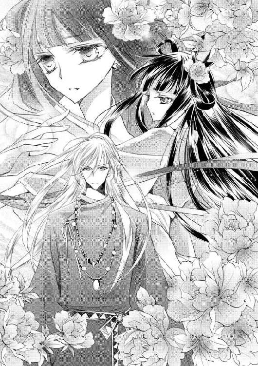
世の中を知り、誰かを慈しむ心を知ることが必要だったのだ。
さまざまな感情と向き合ううち、緋那生は伽楽の言う色気を身につけた。
そうすることで、舞に魂を吹き込むことができるのだ。
舞は、祈り。
伽楽と出会う前の緋那生には、祈りの力は備わっていなかった。
愛することを教えてくれた伽楽が、緋那生を一人前の皇女へと成長させてくれたのだ。
彼が教えてくれたことは、何ひとつ無駄ではなかった――。
気がつけば、緋那生は舞を終えていた。
地に手をついた姿勢で、自分の荒い息遣いが聞こえて我に返る。
「大丈夫か？」
「あ......」
急いで顔を上げようとし、視界が揺れた。力が入らない。
「美しい舞であった」
伽楽はそう言って緋那生の腰を抱くと、一息に持ち上げた。そしてそのまま、自分の膝に座らせてしまう。
「か、伽楽っ」
緋那生は伽楽を見下ろす形になってしまい、落ち着かなくなった。
「降ろしてください、重いですから......っ」
「重くなどない。それより」
言葉を切り、あたたかい光を宿した瞳で緋那生を仰ぎ見る。
「今まで見たこともないような、愛にあふれた舞であった」
「あ、あの、伽楽」
褒められたことは嬉しいが、顔の近さと膝の上の不安定さに意識が奪われ、素直に喜びを表現できない。
「どうした？」
「......ひゃっ」
体勢を崩し、慌てて伽楽の首にしがみついた。両腕を絡める形になり、慌てて離れようとしたところを、腰に伽楽の両腕をまわされ阻まれる。
「もうひとつ、おまけをねだろうかな」
伽楽はそんなことを言って、「ん？」と小さく首を傾げた。
「う......」
表情と首の角度で、何をねだられているのか、すぐに悟った。
鈍感なふりをして逃げることもできた。けれど、緋那生は意を決した。ぎゅっと目を閉じ、自分の唇を伽楽のそれにそっと重ねる。
舞で疲れ切っていたために、自然に身体を委ねることができた。
優しく触れ合った唇は、互いの熱を奪い合う。
名残惜しさを覚えながらも、緋那生はそっと離れた。
「水鏡......使ってくださいますか」
緑がかった灰色の瞳が、熱っぽく見つめ返してきた。
「喜んで」
＊
――神からの託宣を受け取りました。
悩んだ末、緋那生はそんな伝言をのせて天皇への目通りを求めた。そして思惑どおり目通りは許され、呼び出しがかかった。
「やっと神気を授かったのか」
父親の第一声は、やはりそれだった。
緋那生は顔を上げると、すぅと息を吸い込んだ。背後に感じる伽楽の存在感が、背中を押してくれているようで頼もしい。
「いいえ。今日は、もっと重要なことをお伝えに参りました」
「緋那生、おまえにとって今一番重要なことは――」
「再び季節をめぐらせることです」
「............」
陽天皇は緋那生の即答を受け、不機嫌そうに口を閉ざした。
結局、またその話か。――顔には、そう書いてある。
緋那生は気にせず、話を進めた。
「父上は、真実をお知りになるべきです。鳥ノ一族の女性は、父上の心を裏切ってなどおりません」
「その話は、もうよい。緋那生、おまえは私に従ってさえいれば幸せになれるのに、なぜ余計なことをするのだ」
「こちらを見てください」
緋那生は強引に話を推し進め、伽楽を振り仰いだ。
背後で待機していた伽楽は、ひとつうなずくと、立ち上がり両手を広げた。
ちゃぷん、と音がしたと思うと、伽楽の前に大きな鏡が現れた。鏡といっても、表面は水で覆われ、波打っている。
「なんだそれは？ どんな技を使った？」
「どうぞ。ご覧ください」
伽楽は何の説明もせず、ただ天皇に水鏡を見せた。
水鏡は、最初はおぼろげに、次第にくっきりと人影を映し始める。
「これは......私か......？」
鏡の中にまず現れたのは、皇子時代の陽天皇だった。精悍な印象ではあるが、どこかあどけなさの残る顔立ち。緋那生も初めて見る父親の顔だった。
皇子の姿が消えると、今度は可愛らしい少女の姿が浮かび上がる。
「......っ、なんなんだ、おまえたちは、私に何を見せようとしている!?」
「父上、お願いですから最後までご覧になってください」
「結構だ。私には必要ない――......っ、おい、やめろ！」
立ち上がりかけた天皇に、どこからともなく現れた植物の蔓がしゅるしゅると巻きつき始めた。あっという間に、天皇を玉座に縛りつけてしまう。
「四の五の言わずに、最後まで見るがいい」
「なんだと......っ」
伽楽は横柄な態度を覗かせると、天皇の反応など無視して水鏡を見せ続けた。
水鏡が映したものは、由洲良の話と一致した。
陽ノ宮の役人は由洲良に「皇子様には決まったお相手がいらっしゃる」と告げ、銭を投げつけながら「もう会うな」と冷たく言い放つ。由洲良は自分の顔にあたって落ちた銀銭には目もくれず、顔を覆ってうずくまる。
場面はまた切り替わった。
今度は、どうやら陽ノ宮のようだ。皇子に相対しているのは、先ほどと同じ役人。役人は、「先ほど鳥ノ一族の女性が皇子様の名を出し、多大な金額の銭を要求してきた」と報告している。皇子はそんなはずはないと声を荒らげながらも、役人たちに宥められる。
皇子様には、もっとふさわしい女性がいるはずだと。
「............これは」
陽天皇の顔つきが変わった。
気づいたはずだ。水鏡が映すのは、真実なのだと。
またも場面が切り替わり、泣きながら空を翔る由洲良が映し出される。空を裂くような叫び声に驚いて急いで戻ると、そこには崖から脚をすべらせたと思われる皇子の姿がある。
由洲良は狂ったように叫びながらも皇子を崖の上へと助け上げ、自分の衣や皇子の衣を破りながら手当を始める。
由洲良の叫び声を残しながら、水鏡は一度真っ暗になった。
しん、と、沈黙が落ちる。
「最後に、こちらを」
伽楽が水鏡に触れると、波紋が広がった。波紋が消える頃に浮かび上がったのは――。
「伯父上――」
緋那生は、ぽつりとこぼれる父親の声を聞いた。
それは、前天皇の姿だった。
前天皇は、役人に告げる。
――異種族との婚姻など認めない。早々に別れさせろ。
「以上です。手荒な真似をして申し訳ありませんでした」
伽楽が水鏡を消すと、天皇を縛っていた蔓も種に戻っていった。
「......そんな」
自由を取り戻したはずの天皇だったが、そのことに気づく余裕もないほど動揺しているようだった。凍りついたように動けず、顔面蒼白だ。
緋那生は再び父親の前へと進み出ると、切に訴えかけた。
「由洲良の想いは、本物でした。父上を騙していたのは、前天皇であって、鳥ノ一族ではありません。彼らは、決して差別されるべき種族ではないのです」
ひとたび口を開けば、言葉が止まらなくなった。
「父上も、本当はおわかりのはず。異種族との恋は、他の誰かに妨げられるものではありません。好きになってはいけない相手など、いるはずがありません。わたしはそう思います」
父上の恋は、あやまちなどではなかった――そう思ってほしくなかった。
緋那生がつい力を込めてしまうのは、自分自身がそう信じたいからだ。
種族が、身分が、立場が違うからといって、好きになることを咎められたくはない。
皇族と鳥ノ一族との恋と、神と人との恋を一緒くたにすることが正しいのかどうかはわからないけれど。
それでも。
「父上の過去を、忌むべきものではなく、美しい思い出にすることは不可能ですか......？」
終わらされた恋を受け入れるのは、簡単なことではないかもしれない。
けれど、緋那生はそう願った。
たとえ緋那生の恋が悲しい結末を迎えることになったとしても、伽楽を憎んだり恨んだりはしたくないから。
そんな後ろ向きな思いを抱えつつ、緋那生は呆然としたままの父親を見つめた。緋那生の言葉が伝わっているのか否か、陽天皇は瞳を彷徨わせた。
「美しい思い出など、私には不要だ」
「父上――」
いつまでも、己の内に眠らせた過去に縛られていてほしくない。皇女としても、娘としても。それをどう伝えるべきか考えあぐねていると、伽楽が緋那生の前に立ちはだかった。手には、ひどく曇った銅鏡を抱えて。
「伽楽......？」
こちらに背を向けた伽楽の表情は、見えない。
「陽天皇、こちらの鏡を見よ」
伽楽の命令口調に、天皇はゆっくりと青白い顔を上げた。
「この鏡は、世を映す鏡。世が乱れていれば、曇る。そなたにこの鏡は、どう映る？」
「どうもこうも......乱れているだと？ 貴様、私を愚弄するか」
「鏡がこのまま闇に染まりきってしまえば、神は陽ノ国からの縛りが解かれ、自由の身となる。神に見放された国がどうなるのか、そなたはわかっていないようだ」
「先ほどから、何を言っている？ 貴様はただの舞師だろう！」
「舞師などではない。偽っていたことは謝罪しよう」
「な......っ」
絶句した天皇に、伽楽はさらに一歩近づく。
「神がいなくなれば、陽ノ国には春が訪れることはなく、冬に閉じ込められたままとなろう」
その言葉は、緋那生にとっても衝撃的だった。
鏡が曇りきってしまえば、陽ノ国に春は来ない。そして伽楽もいなくなる。
（いや......――っ）
そんなことは、あってはならない。
「父上！ 今すぐすべての民に、平等な食糧の配給をお願いします！」
両手をついて懇願したが、そんな娘を見下ろす父親の顔は、怒りの色に染まっていた。
「勝手なことを言うな！ 保存食には限りがある。このままでは、すぐに尽きて私たちの食べるものまでなくなるのだぞ」
「だとしても――」
「世は乱れてなどいない！ 私は間違っていない！ 神が力を失いさえしなければ、こんなことにはならなかったのだ......っ」
「父上！」
立ち上がり、頭を抱えて取り乱した天皇を、伽楽が一喝した。
「神は、力を失ってなどおらぬ！」
「――っ」
誰もが動きを、呼吸すらをも止めてしまうほどの声だった。
伽楽はまた一歩歩み寄ると、薄く笑みを湛えた。
「そなたが神の力が失われたと思うのは、神気を授かれなかったからか？」
「......っ、なぜ貴様が、そんなことを」
「神気は、もう何十年も誰も授かっておらぬ。この国に広がる不平等が、民の不満を大きくしすぎたからだ」
「そんな――」
「神は力を失っていない。神気を授かれぬのは、そなたたち皇族が神の存在を信じぬからだ」
力強く語りかける伽楽に、天皇はさすがに気づきかけたようだ。
「貴様はいったい、何者なのだ......――まさか」
「何者だと思う？」
だが、容易に信じられることではない。
天皇はしばし呆然とし、それから激しく首を振り始めた。
「しっ、知らぬ！ 何者でも構わぬから、ここから出て行け！」
「俺に命ずるのか」
「知らぬと言っているだろう！」
我を忘れた天皇が、勢いをつけて木笏を投げつけた。
「やめ......っ」
止めに入ろうとした緋那生が間に合うはずもなく――。
目の前で、破片が飛び散った。
（――――鏡が）
木笏は、本来の目的であった伽楽にはあたらず、神器である銅鏡を割った。
緋那生の目には、くすんだ鏡の欠片がはらはらと、悲しげに落ちていくように映った。
「ボウ......っ」
伽楽の肩から顔を覗かせていたボウが、光に包まれて消える。
「神器が割れた、か」
伽楽はつぶやくと、その憂える瞳を天井へと向けた。
雷鳴が轟いたのは、その直後のことだった。
季節を止めていた鏡が、割れた。
今や空は、昼だというのに真っ暗だった。厚い雲が広がり、いくつもの稲妻が怒れる竜のごとく地を襲う。一瞬の光が陽ノ宮を覆い、轟音が鳴り響く度に、采女たちの悲鳴が重なった。
「伽楽、これからどうなるのですか」
吹きさらしの舞台からは、外の様子がよく窺える。空を仰ぐ伽楽に、緋那生は縋るようにしがみついた。
「雷はいずれ止む。その後、猛吹雪となろう」
「つまり――」
「冬は続く」
冬は終わらない。春は来ない。
この国を統べる者が神にそむいたのだから、当然の結果だろう。
「伽楽様、皇女様！」
そこへ、真比十も合流した。
「いったい何があったというのです？ なぜ、こんなことに――」
「陽天皇は、予想以上に話の通じぬ男であった」
「あなたが挑発するようなことを言ったんじゃないでしょうね？ こんなことなら、やはり私も同席すればよかった」
唇を噛む真比十に、緋那生は慌てて告げた。
「父上が、真実を受け入れられなかったの。由洲良のこと、めぐらない季節のこと、神の存在......今まで父上が目をそむけ続けてきたもののすべてを、一度に突きつけたから」
それが、こんな結果を招くことになるとは。
「割れた神器は、戻らない」
伽楽は緋那生と真比十に向き直ると、眉尻を下げて首を振った。
「鏡がなくては、たとえ天皇が心を入れ替えたとしても、季節がめぐることはない」
絶望的な言葉が、再びの雷鳴とともに緋那生の耳を突く。
「あきらめるしかないのですか......他に方法は......？」
声が震えた。
――あきらめよ。
頭に浮かんだその言葉を受け入れる余裕など、どこにもない。緋那生の心はぎゅうぎゅうに絞られ、不安が隙間なく埋め尽くしていた。
けれど、伽楽は目を伏せた。めずらしく、言葉を紡ぐことに躊躇いを見せている。
「伽楽......？」
「......――ないことは、ない」
「え？」
「方法は、ある。鏡の代わりとなるものに俺の力を分け与えれば、季節はめぐる。......少なくとも、一度は」
「本当ですか！」
緋那生は思わず歓喜の声を上げたが、伽楽の表情は冴えない。
「......簡単な方法ではないのですね。伽楽の力を分け与えるということは、伽楽の力が減ってしまうということなのですか」
それなら、伽楽が躊躇うのも当然だ。
けれど、伽楽は否定した。
「もちろん減ることは減るが、それを惜しむつもりはない」
「でしたら――」
「犠牲になるのは、ひとりの人間だ」
犠牲という恐ろしい言葉に反応したのは、真比十だった。
「それは、生け贄になるという意味ですか？」
どきんと心臓が跳ねた。その言葉に聞き覚えがあったからだ。
いつ耳にしたのだっただろう。思い出そうと記憶を探っていると、伽楽と目が合った。
緑がかった灰色の瞳は、憂いを帯びて緋那生を見つめている。
そうだ。あれは確か、季節が止まったことがその昔にもあったという話をしていて――そのときはどうしたのかという問いに、伽楽は答えたのだ。
「――良き血筋の、清純な乙女がその命を捧げれば」
気づけば緋那生は、記憶の中の言葉を紡いでいた。
冗談と、伽楽は笑ったけれど。
「そういうこと、なのですね」
陽ノ国の皇女は、佐和比と緋那生のみ。佐和比はすでに夫を持つ身だから、清純な乙女にあてはまるのは、緋那生のみということになる。
「つまり、わたしがこの身を捧げれば――」
「ばかなことをおっしゃらないでください！ 生け贄など......誰かの命を犠牲にするなど、私には正しいこととは思えません......！」
「真比十――」
「正確に言えば」
緋那生が真比十を振り返るのと、伽楽が話し出すのは同時だった。
「......犠牲にするのは、命ではない」
どこか遠くを見つめながら、伽楽は言う。
「鏡なしで季節をめぐらせるには、巫女となる清純な乙女に神の力を与え、その者を鏡の代わりとするしかない」
「鏡の代わり......」
そう言われても、うまく頭に描けない。
「巫女には、人生を――いや、永遠を捧げてもらうことになる」
伽楽の抽象的な言葉に、険しい顔つきの真比十がさらに眉根を寄せた。
「それは、死ぬまで祠に閉じ込められる、という意味ですか」
「......いや」
伽楽は首を振り、また緋那生へと視線を戻した。表情は、読めない。
「神の力を与えた時点で、巫女は人ではなくなる。人として終わり、神とともに鏡の分身として永遠を生きることになる」
やわらかい声音で紡がれた言葉は、緋那生の心を震わせた。
（神とともに生きる――）
それはとても神秘的な響きを持つ言葉で、不思議な浮遊感を含んでいた。非現実的とも言えたかもしれない。
そんな空気を打ち破ったのは、やはり真比十だった。
「伽楽様、それは『生きる』とは言えません。魂として存在はしていても、人として死すこととなんら変わらないのではないですか」
「......そうだろうな」
伽楽は否定せず、「だから」と続けた。
「神はその方法を人に強いることはしない。選ぶのは、神ではなく、巫女自身だ」
伽楽は他人事のようにつぶやいた。
他の誰でもない。伽楽と緋那生の話をしているはずなのに。
「わたしが巫女となり、鏡の役目を果たします」
だから、緋那生は伽楽の瞳をとらえて告げた。
「皇女様――」
「黙って、真比十！ わたしは決めたの。生け贄にでも、なんでもなるわ」
口に出してしまうと、それが最善の道だと確信を持てた。
「伽楽......そうすれば、今の状況でも季節はめぐるのですね？ 父上や、他の皇族たちが変わらなかったとしても」
もちろん、父親にも皇族たちにも、神を信じ、民を守るよう心を入れ替えてほしいとは思う。けれど、今は一刻も早く嵐を止め、春を呼ばなければならない。
「ああ。曇った鏡より清純な巫女の方が力は強い。確実に一度はめぐるはずだ。――ただ、その後のことは俺にもわからない」
「......それでも、構いません」
緋那生が命を賭して訴えることで、きっと大切なことに気づいてくれるだろう。そのくらいの価値が自分にはあると思いたい。
そう信じるしかない。
それで、陽ノ国を守れるのなら。
伽楽とともに生きられるのなら。
「......よいのか？」
ほとんど表情を消していた伽楽だったが、その瞳が翳った。それは緋那生の真意を問う意味であり、伽楽に拒む意志はないと見て、緋那生は微笑んだ。
「わたしを連れて行ってください」
神のもとへ。
一瞬だけ、父や姉はどう思うだろうかという考えが脳裏をよぎった。
けれど、そんな考えは頭から消し去った。
緋那生は嬉しかったのだ。
これでようやく、伽楽と永遠を生きる権利を得られるのだと。
そう思ったから。
＊
国の将来よりも、自分の恋が心を埋めている。そんな状態は、皇女としてはふさわしくないのだろう。けれど緋那生の心は今、幸福感に満ちていた。
人としての人生が終わってしまうことへの恐怖心がないと言えば嘘になるかもしれないけれど、つないだ伽楽の手の感触に意識を向ければ、そんな恐怖心はどこかへ吹き飛ぶのだった。
伽楽と緋那生は、雪を踏みしめ、祠へと向かっていた。
以前のように一瞬にして移動したりしないのは、もう二度と地を歩けず、空を仰ぐことのない緋那生への心遣いだろう。
伽楽の優しさを受け取り、緋那生は思いきり冬の空気を吸い込んだ。喉から肺に冷たい空気が入り込み、頭が冴える。
「伽楽」
緋那生が呼びかけると、少し前を歩き、緋那生の手を引く伽楽が振り返った。
「どうした？」
目と目が合う。触れあえる。それだけで嬉しくて、つないだ手の指先を深く握り込む。
「寒いか？」
きゅっと握り返され、緋那生は首を振った。
人でなくなったら、きっともう暑さや寒さを感じることもなくなるのだろう。目の前を歩く伽楽が、少しも寒がらないのと同じように。
祠へ辿り着いた瞬間、ふわりと暖かい空気に包まれた。
「結界だ」
問う前にそう説明され、緋那生は首を傾げた。
「わたし、寒いのは平気です」
「そうではない」
伽楽は口元を緩め、緋那生の髪を梳いた。
「――誰にも邪魔をさせないためだ」
「あ......」
とくんと、心臓が鳴った。
伽楽の声は蠱惑的な響きを伴っていて、緋那生の意識は酔わされたように眩んだ。
結界の中にいるからか、どこか地に足がついていないような、ふわふわした不安定な感覚に襲われる。
それがひどく心地よく、身を任せたくなった。
大丈夫。流されているわけではない。緋那生は自分の意志でここまで来たのだから。
祠の奥へと進むと、そこは以前見た神座の様子とは違っていた。生い茂った草花と、ゆっくりとたゆたう川面。伽楽の幻術が働いているのだ。
「まずは、禊ぎが必要なのですね」
緋那生が真面目な顔でそう言うと、伽楽はふっと口元を緩めて笑った。
「そうかたくなるな。禊ぎも兼ねて、このまま儀式を行おう」
「儀式？」
「おいで」
手を引かれ、緋那生は川の中へと足を踏み入れた。浅沓を履いたままだったので、足下がすべって伽楽の胸へと倒れ込んでしまう。
「あ、ごめんなさ――」
「座って」
そのまま川に腰を沈めるように座らされ、ゆっくりと沓を脱がされた。伽楽の指先が素足に触れ、足首をなぞり、裳裾の隙間からふくらはぎへと差し込まれていく。
「......んっ」
膝裏を撫でられたところで、緋那生はたまらず声を上げた。慣れないところを触れられると、それだけで胸の奥が疼いて泣きたくなる。
「今度は暑いのか？ 顔が赤い」
「か、ぐら......儀式って......？」
これからすることといえば、決まった言葉を紡ぐことと聞いていたのに、違うのだろうか。そう訝しむ緋那生の心を読んだかのように、伽楽は口を開いた。
「それだけではない。重要なのは、むしろもう一つの方だ」
そんなふうに告げられ、緋那生の心臓はどきりと跳ねた。何をされても拒むつもりはないけれど、心の準備は必要だったと今さら気づく。
「もう一つ、とは？」
「知ってしまっても、俺から逃げない？」
伽楽の顔が近づいてきて、至近距離から瞳を覗き込まれる。その瞳には、ほんのわずかに不安の色が見てとれ、緋那生の胸はきゅっと締めつけられた。伽楽も、緋那生を離したくないと思ってくれているのかもと思うと、愛おしさが込み上げる。
「逃げません。どんな儀式でも」
真っ直ぐに見つめ返して答えると、伽楽は満足そうに微笑み、それから濡れた指先を緋那生の頬に這わせた。
「神が巫女となる乙女に力を分け与える儀式――」
その指が、唇をなぞる。
「それはすなわち、神と巫女が契りを交わすこと」
（え――）
「だから、今まで我慢したのだ」
だから、伽楽は身を預けようとする緋那生を離したのだ。まだ早い、そう言って。
「そういうことなら――」
言ってくださればよかったのに。
緋那生が唇にのせる前に、その言葉はあっという間に伽楽の唇によって呑み込まれてしまった。最初は触れあわせるだけのくちづけが、すぐに深いものへと変わる。甘やかな感触はすぐに全身へと伝わり、頭の芯を痺れさせる。
気づけば身体の力が抜けてしまっていて、伽楽の胸に顔をうずめていた。それでも伽楽は止まらず、やわらかい首筋を少し乱暴に食んだ。
「待って、伽楽......」
このままでは、意識が飛んでしまう。
危うい感覚に及び腰になった緋那生は、伽楽の胸を押して顔を上げた。
「逃げたくなったか？」
「いいえ――ただ、もう少し」
「もう少し？」
「ゆっくり、お願いします」
緋那生が息も絶え絶えにそう告げると、伽楽はふっと笑って緋那生から手を離した。
「急かすつもりはなかった。いけないのは、緋那生だ」
「わたし......？」
「いや。原因は俺かな。あなたを色っぽく育てすぎた」
「............っ」
囁くようにそんなことを言われたら、どんな顔をしていいのかわからなくなる。とっさに目を伏せ、伽楽の胸元をぎゅっとつかんだ。
「そうです、伽楽のせいです......。今ならわかります。わたしが成長できたのは、化粧や立ち居振る舞いや舞を教わったからではありません。あなたに、恋をしたから......――」
声は、だんだんと小声になっていってしまう。伝わっているのか不安になって顔を上げると、目尻に唇を落とされた。気づかぬうちに、目の端に涙が溜まっていたらしい。
「俺のせいなら、謝るべきか？」
問われて、緋那生は首を振った。
「いいえ......でも、責任をとってください」
ここまできたら、最後まで。
「逃げませんから、わたしをあなたのそばへ連れて行ってください」
永遠を、あなたの隣で生きられるように。
しがみつくようにしていた手を、そっと握られる。
伽楽の顔が近づいてきて、今度は額と額を触れあわせた。こつんとあたった額から、じんわりとした熱が伝わってくる。
「――承知した」
伽楽の声は、穏やかだった。
「緋那生を巫女として迎え、再び季節をめぐらせる力を与えよう」
「ありがとうございます」
「......ともに、永遠を生きよう」
求婚にも似た言の葉は、緋那生の胸を熱く満たす。
「はい――」
閉じた緋那生の目から、一粒の涙が頬を伝い落ちた。
＊
緋那生の目から涙がこぼれるのを、伽楽はなんとも言えぬ面持ちで見つめた。
この涙は、どこからくる涙だろうか。
歓びの涙か。
ともに生きる道を選んだ、覚悟の涙か。
現世との決別の涙なのか。
伽楽が指先で涙の筋を拭ってやると、もう片方の目からも涙がこぼれた。また拭ってやろうと指をのばした先で、今度はあとからあとから涙があふれた。
「どうした？」
伽楽の指は、すっかり濡れそぼっている。
緋那生はしきりに首を振ったけれど、とうとう両手で顔を覆ってしまった。小さく漏れる嗚咽が、伽楽の胸を突いた。
（――困ったな）
泣き止む様子のない緋那生は、先ほどまでとは打って違い、小さな少女のように見えた。
この手で触れれば、壊れてしまいそうだった。
緋那生を自分の住む世界へとさらってしまうのは、間違いなのだろうか。
愛おしく思い、慈しむこと自体が、あやまちなのだろうか。
緋那生の人としての人生を奪うことは、もしかしたら神である自分にも許されぬことなのではないか。
ふいに訪れた迷いは、伽楽の心をひどく揺さぶった。
「泣いたりしてごめんなさい。もう大丈夫です」
顔から手を離した緋那生は、そう言って伽楽に笑いかけた。
真っ赤になった目で。泣かぬよう力を入れ、小刻みに眉を震えさせて。
「緋那生――」
「嬉し涙です。あなたとともにあれることが、わたしにとって最大の幸せなのです」
それはまるで、自分自身に言い聞かせているようにも聞こえた。
ふと、思い出す。
初めて緋那生を外に連れ出したとき、彼女は頬を紅潮させ、瞳を輝かせて世界を眺めていた。目に映るすべてを記憶にとどめようとするように。触れるものすべての感触を身に覚えさせようとするように。
そのときの生き生きとした顔は、忘れることができない。
「伽楽......？」
困惑顔で覗き込まれ、伽楽は我に返った。緋那生はもう泣いてはいない。
「緋那生、あなたは――」
そこまで言って、口をつぐんだ。
――後悔しないか？
そんなことを聞いたところで、今の緋那生に答えられるはずがない。永遠というものは、人にとって未知なるものなのだから。
「あなたは......もっと人の世を知るべきだったかもしれない」
「......どういうことですか？」
緋那生の顔が、不安に曇った。
「人の世界は、まだまだ広い」
「でも......っ、春が来なければ、この国は雪に沈んだままです」
「それはそうだが」
「世界のことは、伽楽がわたしに教えてください。あなたが知っていることを、あなたのその優しい声で、毎日聞かせてください。ここで」
緋那生は、ぎこちなく微笑んだ。
「わたしは、それで充分です」
覚悟を決めた乙女は、とても美しかった。
＊
巫女となる儀式とは、神と契りを交わすこと。
伽楽の指が、緋那生の飾り紐を解く。まとっていた衣が上から一枚ずつ剥がされ、内衣一枚になったところで、緋那生の身体は浮き上がった。
ふわりと横抱きにされると、自分がまるで羽根になったかのように身軽に感じた。緋那生の肢体は、やわらかい草の上に寝かされる。頬をすべる伽楽の指先は、どこかぎこちなかった。
「伽楽......躊躇わないでください」
「緋那生――」
「わたしは、この身をあなたに捧げます」
これまで守ってきた清純は、伽楽以外に捧げる相手はいなかった。笑顔でそう伝えると、伽楽もようやく目元を和ませてくれた。
「では、あなたの永遠を俺のものにしよう」
伽楽の唇が、緋那生の唇を奪う。その感触に身を委ねている間に、襟の合わせ目からすべり込んだ指先が、緋那生の白い肌を撫でた。
「......っ」
敏感に反応して身を捩ろうとしても、腰を抱かれて戻される。ちょっと待ってと訴えようにも、くちづけに言葉を呑み込まれる。やり場のない恥ずかしさに戸惑っているうちに、緋那生の息は上がっていた。
このまま自分は人としての生を終えるのだと思った、そのときだった。
「――伽楽様！ 皇女様！」
甘やかな空気を破ったのは、真比十の声だった。
伽楽の手が止まる。
「お待ちください！ やはりこんなやり方は間違っています！」
「......さすがは国一番の舞師だな。心の清らかさと根性だけで結界の中を這ってきたか」
伽楽が身を起こそうとするのを、緋那生はその襟首をつかんで止めた。
「待って、やめないで......」
伽楽が真比十の説得に応じてしまうのが怖かった。伽楽は、まだ心のどこかに躊躇いを残している――そんな気がしたから。
「大丈夫。待っていて」
伽楽はそっと緋那生の手をはずすと、颯爽と立ち上がった。
緋那生は襟元を握り合わせると、急いで身を起こす。視線をめぐらせると、少し離れたところで両手を広げて立ち尽くした真比十の姿があった。よく見れば透明な壁に阻まれているようで、そこからこちらには入ってこられないらしい。
「皇女様！ 目を覚まされてください！ ともに他の方法を考えましょう！」
嵐の中、緋那生を人としてとどめるためにやってきたのだろう。真比十の髪も衣もひどく乱れ、必死な形相をさらに印象づけていた。
「わたしは、すでにこの道を選んだの。誰にもわたしの意志を曲げることはできないわ」
それは、心からの言葉だった。
真比十に向けて。そして、伽楽に向けて。
「緋那生もこう言っている。真比十、もうおまえにできることなどない」
伽楽は真比十にそう告げると、結界の壁に手を触れさせた。
「お待ちください！ 緋那生様、どうかもう少しだけ――！」
そこで真比十ははっとしたような顔になり、素早く背後を振り返る。横顔でも、彼の口の動きが読めた。
――陽天皇、と。
どくん、と緋那生の心臓が痛むほど鳴った次の瞬間、その声は聞こえた。
「緋那生！」
「......父上」
まさか、と思った。緋那生の話に耳を傾けようともしなかった父親が。
真比十と同じように苦痛とともに結界をくぐってきたのか、彼の身なりは乱れていた。
「緋那生、この国のために生け贄になるという話は本当なのか？ そんなこと、天皇である私に――いや、父親である私の許可なく、許されると思っているのか！」
言い回しはいつもの陽天皇のものだったが、彼の表情は違っていた。
行かないでくれと懇願する眼差し――身を引き裂かれるような思いで、胸を押さえる大きな手――娘を慈しむ、父親としての顔――。
（なぜ今なの？）
ここで引き留めるくらいなら、もっと早く向き合ってほしかった。
もう、遅すぎる――。
「もう父上の言いなりにはなりません」
父親の本心が覗き見えても、緋那生は敢えてそう告げた。決意を示すために。
「緋那生、戻ってきなさい。おまえは惑わされているだけだ！」
「いいえ、これはわたしの意志によるものです」
「ばかなことを言うな！」
「ばかなのは父上です！」
「わかっている......！ 悔やんでいるから、こうして迎えに来たのだ！」
陽天皇が、結界の壁を叩く。何度も、何度も。
「私が愛しているのは、おまえや佐和比だ。過去に未練などない。過去を恨むのは間違いであった。そんな思いやしがらみなど無視して、天皇として民と正面から向き合うべきだった。今からやり直すのでは、間に合わぬのか？」
（今から......？）
どうなのだろう――そう思ったとき、緋那生の前に伽楽が立ちはだかった。
「――陽天皇よ、娘を奪われたくないが故の虚言ではないのか」
「虚言など......！」
「どちらにしろ、もう手遅れだ。せっかく与えた機会をふいにしたのは、おまえ自身だろう」
「たとえ神だとしても、あなたに娘の一生を奪う権利などないはずだ！」
「それが彼女自身の望みだ」
「......っ」
「かぐ――......！」
緋那生がその名を口にしようとした瞬間、伽楽の手から何かが放たれた。
どん！ という強い音とともに、真比十と陽天皇の身体が宙を舞う。
「――――!!」
緋那生は反射的に立ち上がった。
「父上！ 真比十!?」
視線の先で、二人の身体は地面にたたきつけられる前に――消えた。
「え――」
「陽ノ宮に送り返しただけだ。怪我ひとつないだろう」
ゆっくりと振り返った伽楽は、複雑な表情を浮かべていた。
「そ......そうなの」
ほっと息をつきながらも、胸は痛かった。
けれど、もう後戻りはできない。伽楽に言われなくとも、緋那生はわかっていた。
だから、決意を新たにした。伽楽の前に回り、じっと見つめる。
「伽楽。これ以上邪魔が入る前に、儀式を進めておきませんか」
伽楽が目を瞠る。
「......契りの言葉のことか」
こくんと、緋那生はうなずいた。
祠にくる途中で伽楽から聞いていた、契りを交わすこと以外に必要なもう一つの行為。
神の巫女となるためには、神の御前で契りの言葉を紡がねばならない。その言葉は、すでに緋那生の頭に入っていた。
「わかった」
伽楽に促され、緋那生はすぅと息を吸い込んだ。
「――豊国伽命」
神の真名を口にすると、緋那生の周りにぽぅ、と光の粒子が現れた。
「我、緋那生皇女は、陽ノ国の意志を以てここに誓う」
これから口にする言葉は、二度と取り消すことができない。
心は決まっていた。
なのに、懇願する父親の顔が脳裏に浮かんだ。
緋那生の視界が潤み、涙が滲んでいることに気づく。
（なぜ、泣くの）
現世への未練――そんな言葉が浮かび、強くかぶりを振って否定した。何かが変わってしまう前に、緋那生は言葉を紡ぎ続ける。
「我、邪心なき心を以て神と国に誓う」
伽楽の表情が変わった。
苦しそうに歯を食いしばり、眉間をきつく寄せる。
「......――待て、緋那生」
（待てない）
緋那生は首を振っただけで、次の言葉を紡いだ。
「やめるんだ。俺の言うことを聞け」
（やめない）
緋那生の意志はかたかった。
ひたすらに、間違えぬよう、糸を紡ぐように言の葉をのせていく。
伽楽の表情は、まるで言葉によって戒められていくように歪んでいく。
けれど、やめるわけにはいかなかった。
ここでやめたら、二度と伽楽の隣には立てない――そう知っているから。
「我、鏡の巫女として――」
「やはり駄目だ、こんなのは」
伽楽に両肩を押さえられるが、緋那生は続けた。
「神とともにあらんことを――」
「緋那生！」
あと一声だった。
それさえ口にすれば、儀式を撤回することはできなくなる。
「望み――......っ」
けれど、そこまで言ったところで声は呑み込まれた。
覆い被さるように唇を塞がれた緋那生は、息もできずにもがいた。苦しくなり伽楽の胸を強く押し返したところで、唇が離れた。
「......っ、はぁっ」
涙がこぼれた。
ここまで来たのだ。やめろと言われてもやめる気などない。
緋那生は這うようにして伽楽から逃れると、言葉の続きを紡ぐために口を開いた。
けれど。
一歩、遅かった。
「緋那生、黙れ！」
「............っ」
一瞬、何が起こったのかわからなかった。
「......っ、............っ！」
開いた口からは、ひゅうひゅうと空気が漏れるだけ。
声が――失われた？
そう思ったとき、耳たぶが異様な熱を持っていることに気づいた。はっとして指で触れ、確信する。
（言霊――！）
急いで振り返った緋那生は、伽楽の喉元に赤い勾玉が浮かび上がっているのを見た。
使わないと約束したはずの言霊を、伽楽は使ったのだ。
（ひどい............）
じわりと涙が浮かぶ。
緋那生の意志は、言霊という強引すぎる方法によって砕かれた。
ぼろぼろと、あふれた涙が草花の上に落ちる。
むごい話だと思った。
緋那生は、愛する者と永遠をともにする道を断たれたのだ。愛する者の手によって。
「すまぬ、緋那生......だが、こうする他なかった」
伽楽は片膝をつくと、緋那生を見上げた。
（ひどい、ひどい、ひどい！）
声を失った緋那生は、伽楽のもとへ駆け寄ると、その肩や胸を全力でたたいた。たたき疲れると、今度は襟をつかんで揺さぶった。
「――俺のことは忘れて、一国の皇女として暮らすのだ」
緋那生は必死に首を振った。
忘れたくない。忘れられない。
「幸せになれ、緋那生」
意識を失いそうになるほど、強く首を振った。
できない。
伽楽がいなければ、幸せになどなれない。
「あなたに春を呼ぶ力を授けよう」
たたかれても揺さぶられても、伽楽の口調は変わらず穏やかだった。
「俺の存在そのものを、力に代える。これこそ、俺に残された最後の手段だ」
その言葉に、緋那生はびくりと身を震わせた。それは、どういう意味だろう。
伽楽は、何をしようとしているのだろう。
（......いや。伽楽......っ）
緋那生の声なき訴えに、伽楽は微笑んだ。
「俺はあなたと出会い、恋を知ってしまった。恋を知ってしまった神は、おそらく神には戻れぬということなのだろう」
――神に恋は許されなかった。
伽楽はそう言っているのだろうか。
「だが、悔いはない。あなたに出会えてよかった――緋那生」
愛している。
伽楽は緋那生にそう囁くと、素早く立ち上がった。
その手には、細長い剣が握られている。その剣がぎらりと光を映し、宙を舞った。
（――――っ！）
止める間もなかった。
伽楽は自らの手で、長い銀色の髪を断った。
伽楽の髪は、神気そのものなのに――。
「これをあなたに託す。頼んだぞ」
伽楽は髪の束を緋那生に渡した。受け取った瞬間、光の粒子が弾けて髪は弓矢に変化する。
（伽楽......っ）
そして伽楽の全身が、光の粒子に包まれる。包まれ――輪郭がぼやけ――そして、飛散するようにして散った。
伽楽は、消えた。
同時に幻術も失われ、一面に敷かれた草花も、澄んだ川も消え、辺りは薄暗い神座へと戻る。
注連縄も台座も、御神酒もあるのに、神はいない。
祠から、神は失われた。
「............いや」
声を取り戻した緋那生は、その声を振り絞るようにして叫んだ。
「いやあぁぁぁ――――――っ！」
伽楽は自らの存在を無に返すという方法で、緋那生の人としての人生を守った。
緋那生の意志に反する道を、選んだ。
「いやあぁぁ......」
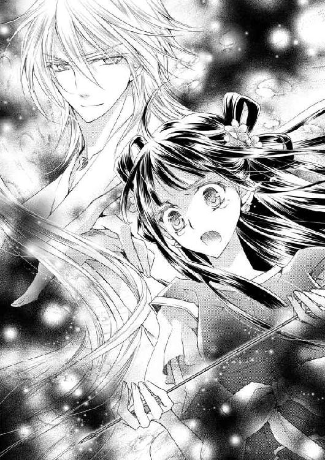
緋那生は、もう戻ってくることのない者に向け、叫び続けた。
誰もいない祠で、たったひとり泣き続けた。
＊
どのくらいの時が経ったのだろう。
緋那生はいつの間にか泣くことをやめ、気がつけば祠の外に立っていた。
神に託された弓に矢をつがえ、荒れ狂う空に向ける。強い雨風に押され、少しでも気を抜けば倒されてしまいそうだった。
両脚を雪に沈めるようにして踏ん張ると、弦を引く。弓がしなり、きりきりと音がした。
力いっぱい引いていた手を離すと矢は放たれ、真っ暗な空に吸い込まれていった。
（お願い――！）
祈る緋那生の頭上で、矢尻が空に届いた。
空には割れた鏡のように亀裂が走り、ぱりんと砕け散るようにして裂けていく。
「空が......」
きらきらと、ばらばらと、空のかけらが落ちていく。
黒い空が割れ、その向こうには晴天が覗いていた。
緋那生へと降り注ぐ光は、紛れもない――麗らかな春の陽光。
やがて、空からは黒い雲がすべて取り除かれ、爽やかな青空が広がった。
緋那生は口笛を吹き羽矢彦を呼ぶと、陽ノ宮へ連れて行ってもらうよう頼んだ。
手早く着替え、額に花鈿をあしらい、化粧を施す。
そして向かったのは、吹きさらしの舞台。
（伽楽――見ていてください）
どこからでもいい。
あなたに捧げるために覚えた舞を、もう一度その目で見てください。
――春迎えの舞。
陽ノ国の皇女として、神であったあなたに捧げます。
緋那生は前を見据えて構えると、足を踏み出した。
暖かい光が空から降り注ぎ、積もった雪は水へと姿を変えていく。
ゆっくりと、ゆっくりと。
雪が解け、茶色い大地が顔を出す。
そして大地からは草花が芽を出し、小さな花を咲かせ始める。
白で統一されていた陽ノ国は、鮮やかな色彩を取り戻した。
そうして長かった冬は終わりを告げ、春が訪れた。
緋那生はその日、裸足でやわらかい土を踏んだ。
土の持つぬくもりが足の裏を通じ、春の豊かさを伝えてくれる。
「いい香り......」
胸いっぱいに空気を吸い込むと、甘い花の香りや清々しい緑の放つ香りに満たされた。
「一番綺麗な春だな」
そう言ったのは、陽ノ宮から離れた野原まで連れて来てくれた羽矢彦だ。
「本当ね。動物たちも喜んでるかしら」
「ああ。早くも木には実が成り始めてるし、山はもっと豊かだぞ」
「そうなの」
緋那生は小さな微笑を広げた。
まるで遅れを取り戻すように、春は急激に進んだ。この調子なら、秋の収穫にも間に合いそうだという話だった。
「そうそう。まだ食糧は不十分だろうからって、俺たち鳥ノ一族にも保存食の配給が来たぞ」
「それって......父上が？」
おそるおそる尋ねると、羽矢彦の満面の笑顔が返ってきた。
「らしいぜ。どういう風の吹き回しだろうな」
「そう......」
緋那生は安堵の息をついた。
神器である鏡を割ってしまうほど動揺していた陽天皇だったが、実は緋那生と伽楽が祠に向かったあと、自ら当時の役人に会いに行き、事実の確認をしたのだという。
そして真比十からの伝言で緋那生の覚悟を知り、憑き物が落ちたようにあっさりと、さっぱりと心を入れ替えたのだという。
そして、祠まで緋那生を取り返しに来てくれた。
「俺、もう行かなきゃいけないんだけど、皇女はまだここにいるのか？」
ばさりと翼を広げた羽矢彦に問われ、緋那生はうなずいた。
「うん。行ってきて」
「ひとりで大丈夫か？」
「大丈夫。ひとりになりたいの」
それは、緋那生の本心だった。
「じゃあ、帰りたくなったら呼んでくれよな」
「ありがとう」
緋那生は手を振り、羽矢彦を見送った。
颯爽と飛び立った羽矢彦が、どんどん小さくなっていく。
「本当に気持ちいい......」
ひとりになった緋那生は、野原の上に横になった。真上にある太陽が眩しくて、片手で顔を覆う。
甘い香りを運ぶ、暖かい風。
咲き乱れた花々と、それらに群がる虫たち。
――春が来た。
「......ふっ......」
顔を覆った指の隙間から、嗚咽が漏れた。
春は来た。
それなのに、会いたい人はもう、この世にはいない。
どこにもいない。消えてしまった。
あの日から、泣かなかった日はない。このまま一生、泣き続けるのだと思った。身体中の水分が失われない限り、頬を濡らし続けるだろう。
何度季節がめぐっても。
風が吹いた。
風は、緋那生の切り揃えられた前髪を吹き上げた。
あらわになった額に、冷たい何かが触れる。
すい、と撫でられ、次いで顔を覆う手を撫でられた。
「なに......？」
慌てて手をのけ、半身を起こす。
そこには――。
「か、ぐら......」
陽光を背に、やわらかく微笑む青年の姿があった。
短い銀髪をさらさらと風になびかせ、飾りひとつない地味な衣をまとってはいるけれど。
それは紛れもなく、伽楽その人だった。
「どうして、」
どうしてここにいるの？
消えたのではなかったの？
あなたは本当に伽楽なの？
たくさんの疑問が一度に込み上げ、喉に詰まった。
「俺にもわからないが、たぶん」
伽楽はそこまで言って、緋那生の手を取り、立ち上がらせた。少し歩くと、丘から大地を見下ろす形になる。
「見える？」
「あ、祠――」
伽楽の指差す方角には、神座のある祠があった。
そしてそこに向かってのびる、人々の長い列。
「陽ノ国の民だ」
屈強そうな男も、子どもの手を引く女も、翼を持つ鳥ノ一族も。皆が皆、お供え物を手に並んでいた。その中には、陽ノ宮に仕える巫女や役人たちの姿もある。
「仕切っているのは、真比十と羽矢彦だそうだ」
「これは......春が来たから？ その感謝の意を神に捧げるために......？」
「ああ」
それでも事情が呑み込めない緋那生は、伽楽を仰いだ。
伽楽は清々しい横顔を見せたまま、ゆっくりと語った。
「彼らの念が、祈りが、想いが、俺をこの姿にとどめてくれた」
「それでは......」
「残念ながら、今の俺はただ人だ。神の力は失われた」
伽楽はあっさりとそう言い、緋那生に向かって笑いかけた。
「俺の次代となる神は、いずれこの地に舞い降りるだろう。そのとき、神器となる鏡も新たに造られるはずだ」
すべてが吹っ切れたような、迷いのない笑顔だった。
「そうか......俺はもうただ人なのだったな」
伽楽は改めてそうつぶやくと、緋那生の前に片膝を落とした。
「これからは、ひとりの陽ノ国の民です――我が皇女様」
丁重に頭を下げられ、緋那生は居ても立ってもいられず、伽楽の胸に飛び込んだ。
「......っ、ばか伽楽っ」
両腕を首に回し、ぎゅうっと強く抱きつく。
「俺は、ばかなのか？」
「ばかです。わたしにとって、伽楽は伽楽です。神であってもただ人であっても、世界でいちばん大切な人です......っ」
跪くでも跪かれるでもなく、隣に並んでいたかった。
いつでも顔を見ることができる、声を聞くことができる位置に――。
「では」
「きゃっ」
伽楽は緋那生を横抱きにして立ち上がると、首筋にくちづけをした。
「改めて問おう。緋那生――俺と、永遠をともにしてくれますか？」
「......はい」
くすぐったさに首をすくめながら答えると、今度は耳たぶを甘く食まれた。
恥ずかしくて目を閉じると、次は瞼に唇が落とされる。
「もう離れないでくださいね」
緋那生が伽楽の襟首をきゅっとつかむと、伽楽はふっと笑った。
「もう離すものか」
囁かれた言葉は、くちづけに変わる。
祈りは、力になる。
だから緋那生は祈った。
すべての人の心に、春が舞い降りるように――。
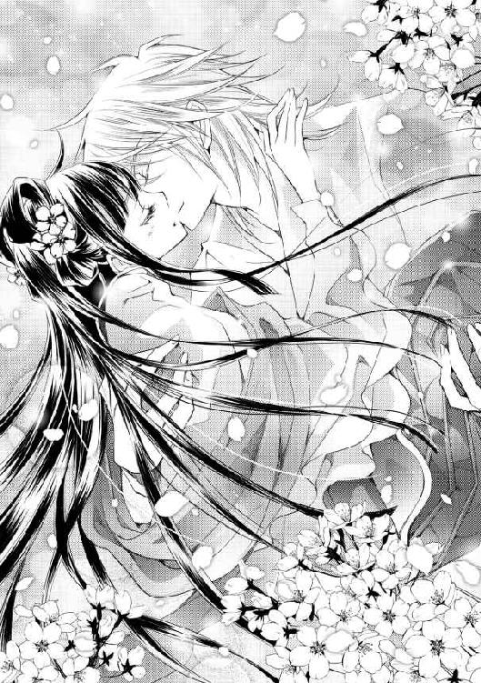
こんにちは。もしくは初めまして。宮瀬ユウです。
今回は、古代和風ラブファンタジーを書かせていただきました。あくまで和〈風〉ということで、架空世界です。なので、翼が生えた人とか出てきます。そしてお風呂シーンが多いです（関係ない）。
和風ならば、〈勾玉〉と〈言霊〉は絶対に使いたい！ ということで、このようなお話になりました。勾玉は好きで、いくつか持っているのです。何かしらの力を秘めていそうな形状がたまりません......！ 本当はもっとメインアイテムとして使えればよかったのですが、プロットを捏ねくり回しているうちにこうなってました。
そしてもうひとつ大事な要素の〈舞〉ですが、これは日本の神楽を参考にさせていただきました（キャラ名からしてそのままですが）。近所の神社で神楽を見たことがありまして。重厚感のある祝詞や厳かな鈴の音、真剣な眼差しにとても静謐な空気を感じました。
和風を書くことになったら出雲や高千穂に取材旅行に行くんだ！ などと思っていたのですが、この一年、ぐったりしたりバタバタしたりで過ぎていき、叶いませんでした。いつか......そのうち......行けたらいいな......。
イラストを担当してくださった椎名咲月さま。お忙しい中、麗しい緋那生や色っぽい伽楽を描いてくださり、ありがとうございました。ボウが！ 私はこのボウが欲しいです......！
担当編集者さま。ぐったりしたりバタバタしたりで多大なご迷惑をおかけしました。スケジュール組みなど、諸々感謝してもしきれません！
そして、最後まで読んでくださった皆さまには、最大級の愛と感謝を捧げます。
それでは、またお会いできることを祈って。
宮瀬ユウ
陽ノ国の舞姫
春を誘う勾玉の契約
２０１３年11月１日 初版発行
著 者 宮瀬ユウ
発行者 杉野庸介
発行所 株式会社一迅社
〒１６０―００２２
東京都新宿区新宿２―５―10 成信ビル８Ｆ
制 作 大日本印刷株式会社
©宮瀬ユウ／一迅社
本書はフィクションです。実際の人物・団体・事件などには関係ありません。
本書の内容を無断で複製、複写、放送、データ配信等することは、堅くお断りいたします。